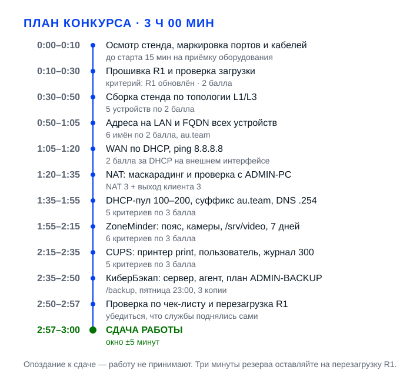
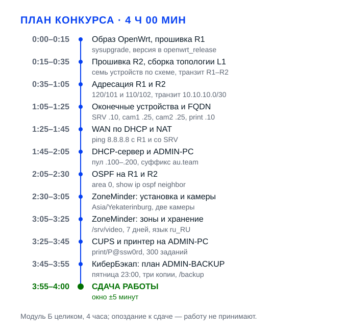
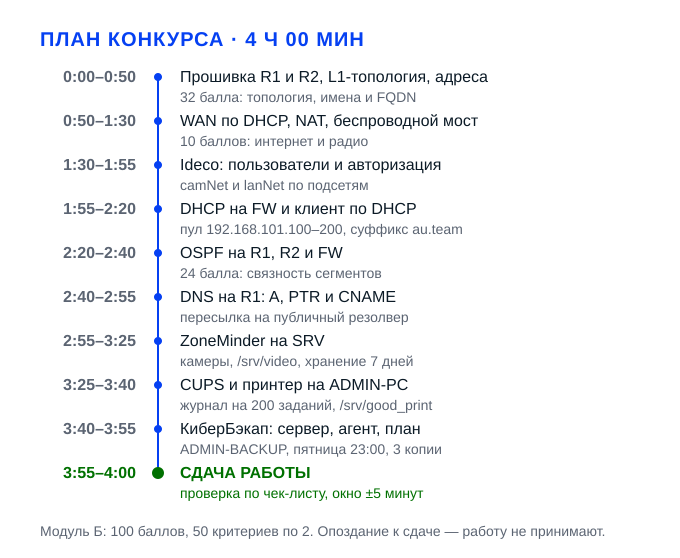

Сетевое и системное администрирование (Р,О)
Задания ниже — официальные файлы «Абилимпикс» (источник: abilympics-russia.ru), разложенные по категориям. Решения написаны по тексту задания, регламенту и критериям оценки; в них указано, что именно проверяет эксперт.
Школьник
14–16 лет, базовый уровень заданияВыдержка из официального конкурсного задания: страницы, относящиеся к категории «Школьник» (стр. 5–9 источника).
Пошаговое решение
Задание для школьников — один модуль Б на 3 часа и 100 баллов: собрать корпоративную сеть предприятия из маршрутизатора R1 на OpenWrt и машин на Альт. Устройств шесть: r1.au.team, рабочая станция admin.au.team, сервер srv.au.team, две камеры и сетевой принтер. Сети две: административная 192.168.101.0/24 со шлюзом 192.168.101.254 и сегмент камер 192.168.120.0/24 со шлюзом 192.168.120.1. Задание идёт ступенями: прошивка и сборка стенда, адреса и имена, интернет через NAT, раздача адресов по DHCP, ZoneMinder, CUPS и КиберБэкап. Порядок нарушать нельзя: DHCP не заработает без адресов, NAT не проверить без WAN, а камеры не появятся в ZoneMinder, пока сегменты не видят друг друга. В вашем варианте адреса, имена, часовой пояс, срок хранения записей и параметры копирования могут быть изменены на 30 процентов, поэтому сверяйтесь с таблицей своего задания.

Задача 1. Прошить R1 и собрать стенд по топологииМодуль Б · 12 баллов
Первые полчаса уходят на железо: скачать правильный образ OpenWrt, перепрошить маршрутизатор и соединить шесть устройств так, как нарисовано на схеме L1. Здесь набираются 12 баллов — 2 за обновлённую прошивку R1 и по 2 за каждое устройство, подключённое согласно топологии. Эти баллы самые дешёвые во всём задании: они не требуют знания команд, только аккуратности и внимательности к портам. И одновременно самые обидные, потому что кабель, воткнутый в соседний порт, обнуляет не только свои 2 балла, но и всю дальнейшую работу с камерами и сервером.
Действие 1.1. Найти и проверить образ прошивки
Шаг 1.1.1
Заходим на R1 по заводскому адресу 192.168.1.1 или подключаемся консольным кабелем и определяем модель: наклейка на дне корпуса плюс вывод cat /tmp/sysinfo/model в SSH. По этой строке на downloads.openwrt.org открываем раздел своей модели и берём файл с окончанием squashfs-sysupgrade.bin — не factory и не initramfs, потому что factory ставится только с завода через режим восстановления, а initramfs живёт в оперативной памяти и исчезает после первой перезагрузки. Файл скачиваем на ADMIN-PC в папку ~/Downloads, оттуда его удобно отдать в веб-интерфейс LuCI.
Критерий «Устройство R1 обновлено до последней версии» стоит 2 балла, и эксперт смотрит версию прошивки на странице состояния, а не сам факт, что вы что-то заливали. Если взять образ от другой ревизии железа или файл не того типа, роутер либо откажется его принимать, либо перестанет загружаться, и тогда из 180 минут конкурса вы потеряете полчаса на восстановление. Проверка модели на этом шаге занимает минуту и снимает половину рисков всей задачи.
Смотрим на имя скачанного файла: в нём есть и модель, и слово sysupgrade, а размер лежит в пределах 7–9 МБ. На странице релиза сверяем, что это последний стабильный выпуск, а не snapshot: у snapshot нет гарантии совместимости пакетов, а нам дальше ставить ещё и службы.
Самая частая ошибка — скачать factory и залить его как обновление: проверка образа не пройдёт, и вы потеряете время на выяснение причины. Вторая — взять прошивку «похожей» модели: адреса портов и драйверы радиомодуля отличаются, и часть интерфейсов просто не появится в списке.
Эксперт подходит к стенду после перепрошивки, открывает LuCI и смотрит строку версии в обзоре, а также спрашивает, откуда взялся образ. Ответ «с официального сайта, ветка стабильных выпусков» закрывает вопрос полностью.
Шаг 1.1.2
Открываем на странице релиза файл sha256sums и находим строку со своим файлом, затем на ADMIN-PC в терминале выполняем sha256sum ~/Downloads/<имя файла>.bin и сравниваем две длинные строки посимвольно — проще скопировать обе в один текстовый файл и посмотреть через diff, чем сверять глазами. Скачивать образ нужно только по HTTPS с официального зеркала, а не с форумов и файлообменников, потому что подменённый образ — это не только потеря баллов, но и потенциально чужая прошивка в вашей сети.
Контрольная сумма — единственный способ убедиться, что файл дошёл целиком. Битый образ в половине случаев проходит первичную проверку и падает уже в момент записи во флеш-память, после чего маршрутизатор уходит в цикл перезагрузки. Восстановление такого R1 занимает от 20 до 40 минут через TFTP и точно не входит в план на 3 часа, а критерий на 2 балла остаётся невыполненным.
Строки совпали полностью, включая регистр символов. Если файл скачивался дважды и суммы разные — один из файлов повреждён, скачиваем заново и повторяем проверку, а не выбираем «тот, который больше нравится».
Пропустить сверку, потому что «файл только что скачался»: обрыв связи на последних килобайтах не виден по размеру, но ломает образ. Вторая ошибка — сверять сумму файла от другой модели: суммы не совпадут, участник начинает искать проблему в кабеле и теряет ещё десять минут.
Эксперт может попросить показать, как вы убедились в целостности образа. Наличие сохранённого вывода sha256sum рядом с файлом — самый быстрый и убедительный ответ.
Действие 1.2. Перепрошить маршрутизатор
Шаг 1.2.1
Перед прошивкой снимаем резервную копию: в LuCI открываем System, затем Backup / Flash Firmware, нажимаем Generate archive и сохраняем полученный tar.gz на ADMIN-PC. Если веб-интерфейс недоступен, делаем то же самое из консоли командой sysupgrade -b /tmp/backup.tar.gz и забираем файл через scp. Копию переименовываем так, чтобы в имени были дата и модель, иначе через час вы не вспомните, что внутри.
Резервная копия нужна не для красоты: если новая прошивка не поднимется или вы потеряете доступ к вебу, конфигурация вернёт стенд в рабочее состояние за пару минут. Заводские настройки при этом теряются безвозвратно, а вместе с ними уходят и пароль администратора, и параметры WAN, которые выдал провайдер стенда.
Файл появился на диске ADMIN-PC, размер — десятки килобайт, внутри архива есть etc/config/network и etc/config/firewall. Проверить содержимое можно командой tar -tzf backup.tar.gz: в списке должны быть оба файла, иначе архив пустой и восстанавливать из него нечего. Дату и имя файла записываем в план работ.
Пропустить этот шаг «потому что прошивка официальная»: именно после неудачной записи резервная копия и оказывается единственным способом вернуть стенд. Вторая ошибка — сохранить архив в папку, которую потом не найти, и искать его на последних минутах.
Эксперт оценивает не наличие архива, а способность участника восстановить работу. Если после сбоя стенд поднимается за минуту, это видно и запоминается.
Шаг 1.2.2
В LuCI снова открываем System, Backup / Flash Firmware, в блоке Flash new firmware image выбираем скачанный файл с окончанием sysupgrade.bin и обязательно снимаем галочку Keep settings: старая конфигурация от другой сети притянет чужие адреса и правила межсетевого экрана, и вы будете искать причину, которой нет. Нажимаем Flash image, подтверждаем и ждём две-три минуты, не трогая питание и не выдёргивая кабель, потому что в этот момент идёт запись во флеш-память.
Прошивка «поверх» старых настроек — главный источник загадочного поведения: маршрутизатор поднимается с адресом 192.168.1.1, но с прежними VLAN и правилами, и половина портов работает не так, как на схеме. Чистая установка занимает на две минуты больше, зато дальше все шаги воспроизводятся предсказуемо, а критерий на 2 балла за обновление закрывается честно.
Через две минуты индикаторы перестают мигать в режиме записи, страница LuCI снова открывается по 192.168.1.1, а в обзоре видна новая версия. Если страница не открывается, проверяем, что компьютер по-прежнему в той же подсети 192.168.1.0/24.
Оставить Keep settings включённым: после перезагрузки устройство может подняться с прежним паролем и адресами, и вы решите, что прошивка не применилась. Вторая ошибка — выключить питание, увидев, что веб не отвечает через 30 секунд: именно так роутер и превращается в кирпич.
Эксперт смотрит на версию в обзоре и на чистоту конфигурации: пустой список пользовательских правил и отсутствие старых интерфейсов говорят сами за себя.
Шаг 1.2.3
После перезагрузки проверяем доступ: ping 192.168.1.1, затем ssh root@192.168.1.1 и задаём пароль командой passwd, потому что в свежей прошивке пароля нет вовсе. В LuCI при первом входе появится то же требование, и его нужно выполнить, иначе веб-интерфейс не пустит дальше первой страницы. Версию смотрим командой cat /etc/openwrt_release, а модель и время работы — через ubus call system board.
Пароль root — это условие доступа ко всем дальнейшим настройкам: без него вы не попадёте ни в LuCI, ни в SSH, а значит не назначите ни адреса, ни DHCP, ни NAT. Заодно проверяется, что прошивка действительно загрузилась и файловая система целая: если команды отвечают, а веб не открывается, проблема в пакетах, а не в железе.
В выводе /etc/openwrt_release стоит DISTRIB_RELEASE с номером версии, аптайм считается с нуля, а ssh пускает по новому паролю. Дополнительно убеждаемся, что в списке интерфейсов есть и wan, и lan, а в системном журнале logread нет строк с ошибками файловой системы.
Забыть задать пароль и уйти настраивать адреса: LuCI будет отказывать в сохранении изменений, а участник ищет причину в браузере. Вторая ошибка — записать пароль на бумажке, которую потом не найти: на стенде держите его в заметке на ADMIN-PC.
Эксперт проверяет, что участник свободно входит в устройство и знает номер версии прошивки. Это первый признак того, что дальше работа пойдёт осмысленно, а не наугад, и что доступ к настройкам не будет потерян на середине задания.
Действие 1.3. Соединить устройства по схеме
Шаг 1.3.1
Раскладываем кабели по схеме и маркируем каждый конец: на бирке или полоске малярного скотча пишем, что за линия. WAN идёт к порту провайдера, LAN1 — в коммутатор сегмента камер, куда подключены cam1 и cam2, LAN2 — в коммутатор административного сегмента с SRV, ADMIN-PC и print. Патч-корды берём целые, без перегибов, проверяем кабельным тестером или хотя бы визуально по схеме разводки, а не «на глаз, вроде щёлкнуло».
Пять критериев «устройство подключено согласно топологии» дают по 2 балла каждый, итого 10 из 12 баллов задачи. Разметка нужна не для красоты: когда через час пропадёт связь между сегментами, вы посмотрите на бирку и сразу поймёте, какой шнур проверять, вместо того чтобы перебирать восемь концов на ощупь под столом.
Каждый кабель подписан с двух сторон, номера портов на коммутаторах совпадают с записями в вашем плане, свободных «лишних» шнуров в стенде нет. Сверяем количество подключённых линий со схемой: у нас их шесть.
Воткнуть камеры в административный коммутатор: адреса 192.168.120.25 и .26 окажутся в чужом сегменте, ZoneMinder не увидит поток, и вместе с 4 баллами за подключение уйдут баллы за камеры. Вторая ошибка — использовать первый попавшийся кабель сомнительного качества: линк то есть, то нет, и диагностика съедает время.
Эксперт проходит вдоль стенда и смотрит на соответствие портов схеме, а также на аккуратность: кабели не натянуты, бирки читаются, коммутаторы подписаны.
Шаг 1.3.2
Подключаем кабель провайдера в порт WAN маршрутизатора до щелчка и смотрим на индикатор порта: он должен загореться и начать мигать. В LuCI на странице Network, Interfaces проверяем, что интерфейс wan существует и его физический порт совпадает с тем, куда воткнут кабель, а в консоли вывод ip link show показывает состояние UP и скорость линка. Если порт не поднялся, меняем кабель на заведомо исправный.
Без физического линка на WAN никакой DHCP от провайдера не придёт, и все дальнейшие проверки интернета будут бессмысленны: участник начнёт искать ошибку в правилах межсетевого экрана, хотя дело в кабеле. Два критерия — «интерфейс подключён к внешней сети настроен на получение адреса по DHCP» и «R1 имеет выход в интернет» — стоят по 2 балла и оба упираются в этот разъём.
Индикатор горит, в выводе ip link show у порта написано state UP и скорость 1000Mb/s или 100Mb/s. Если написано DOWN, меняем кабель и порт, а не настройки, и только после появления линка идём дальше. Скорость ниже 100 Мбит/с на нормальном кабеле — признак плохого контакта.
Оставить кабель в LAN-порту и потом удивляться, что WAN не получает адрес: на схеме это видно сразу, а в конфигурации — нет. Вторая ошибка — не заметить, что порт погас после перепрошивки: некоторые сборки переназначают порты, и это надо проверить именно сейчас.
Эксперт смотрит на индикаторы и на вывод состояния интерфейса. Быстрый взгляд на порт WAN в момент проверки говорит о понимании схемы больше, чем рассказ.
Шаг 1.3.3
Подключаем SRV, ADMIN-PC и print в административный сегмент, cam1 и cam2 — в сегмент камер, и на каждом устройстве проверяем линк: в Альт это команда ip link show и ethtool eth0, где в строке Speed должно быть 1000Mb/s, а в Link detected — yes. На камерах смотрим индикатор на разъёме и доступность веб-интерфейса по заводскому адресу из паспорта, обычно это 192.168.1.10 или адрес с наклейки.
Именно здесь закрываются критерии за подключение ADMIN-PC, SRV, print, cam1 и cam2 — по 2 балла каждый. Проверка линка на каждом устройстве сразу, а не «потом всё вместе», экономит время: одна непропаянная жила в патч-корде обнаруживается за десять секунд, если смотреть на конкретное устройство, и за десять минут, если искать причину сразу по всей сети.
У всех пяти устройств линк поднят, скорость определилась, а на камерах открывается веб-страница. Дополнительно фиксируем в плане MAC-адреса: они понадобятся для статических аренд DHCP и для поиска устройства в списке клиентов.
Подключить print и SRV в один порт через дешёвый разветвитель: линк поднимется, но адреса начнут конфликтовать. Вторая ошибка — считать, что «камера не отвечает, значит сломана», хотя у неё заводской адрес из другой подсети и её надо сначала перевести в наш сегмент.
Эксперт проверяет подключение по факту линка и доступности. Ему важно увидеть, что участник умеет отличать физический уровень от логического и не путает их.
Задача 2. Назначить адреса и настроить имена устройствМодуль Б · 14 баллов
Теперь стенд получает логику: у R1 появляются два адреса на внутренних интерфейсах, у сервера, принтера и камер — статические адреса из таблицы, а у каждого устройства — полное доменное имя в зоне au.team. Здесь набираются 12 баллов за имена (шесть позиций по 2 балла) и 2 балла за WAN, который получает адрес от провайдера по DHCP. Работа выглядит простой, но именно на ней чаще всего теряют баллы: имя, записанное в одном месте и не подхваченное системой, эксперт видит сразу, а последствия расходятся по всему заданию — от DHCP до сертификатов КиберБэкапа.
Действие 2.1. Дать R1 два внутренних адреса
Шаг 2.1.1
В LuCI открываем Network, затем Interfaces и правим интерфейс lan: протокол Static address, адрес 192.168.120.1, маска 255.255.255.0. Второй адрес добавляем там же кнопкой добавления адреса, либо из консоли командой uci add_list network.lan.ipaddr='192.168.101.254/24' с последующим uci commit network и /etc/init.d/network reload. Один физический интерфейс несёт два адреса, и это нормально: netifd умеет держать на нём несколько адресов одновременно.
Таблица задания требует от R1 сразу двух адресов: 192.168.120.1/24 для сегмента камер и 192.168.101.254/24 для административного сегмента. Второй адрес — это ещё и шлюз по умолчанию для всех клиентов и адрес DNS-сервера, который мы позже пропишем в DHCP, поэтому ошибиться в нём нельзя: один неверный октет, и половина критериев по DHCP и интернету просто не сработает.
Вывод ip -4 a show br-lan показывает два блока inet с нужными адресами и масками, а ip route выдаёт две строки connected — 192.168.120.0/24 и 192.168.101.0/24. Проверяем и обратную сторону: с ADMIN-PC пингуется 192.168.101.254.
Назначить 192.168.101.1 вместо .254 по привычке домашнего роутера: адрес не совпадёт с заданием, и клиенты получат неверный шлюз, из-за чего уйдут баллы и за DHCP, и за выход в интернет. Вторая ошибка — сделать два отдельных интерфейса на одном порту и перепутать, какой из них в какой сети.
Эксперт открывает страницу интерфейсов и сверяет адреса с таблицей. Ему достаточно одного взгляда, чтобы увидеть, что оба адреса висят на внутреннем интерфейсе.
Шаг 2.1.2
Проверяем, что маршрутизатор отвечает по обоим адресам: с SRV выполняем ping 192.168.101.254, с ADMIN-PC — ping 192.168.120.1, а на самом R1 смотрим ip neigh и видим, что клиенты видны на уровне ARP. Затем перезагружаем сеть командой /etc/init.d/network reload и повторяем проверку, чтобы убедиться, что настройки не потеряются после перезапуска службы.
Проверка с двух сторон закрывает сразу два вопроса: адрес назначен и маршрут до него есть. Если адрес есть, а ping не идёт, значит порт не в той зоне межсетевого экрана, и это надо исправить сейчас, до настройки NAT, иначе позже вы будете искать причину в правилах трансляции, где её нет.
Пинг идёт с обеих сторон без потерь, ip neigh показывает записи с MAC-адресами клиентов, а после reload картина не изменилась. Заодно записываем в план, какие MAC принадлежат каким устройствам: эти данные понадобятся для статических аренд DHCP и для поиска устройства в списке клиентов маршрутизатора.
Проверить только с одной стороны и успокоиться: маршрутизатор отвечает, а клиенты его не видят из-за зоны межсетевого экрана, и ошибка всплывёт позже, когда вы будете искать причину в DHCP. Вторая ошибка — не делать reload после правки конфигурации и узнать о потере настроек уже на следующем шаге.
Эксперт любит просить показать связность от клиента к шлюзу: это быстрый тест, который показывает, понимает ли участник направление проверки и умеет ли отличать локальную сеть от внешней.
Действие 2.2. Настроить FQDN на всех устройствах
Шаг 2.2.1
На R1 задаём полное имя: uci set system.@system[0].hostname='r1.au.team', затем uci commit system и /etc/init.d/system reload. В /etc/hosts первой строкой оставляем 127.0.0.1 localhost, второй добавляем 192.168.120.1 r1.au.team r1. Проверяем командой hostname -f, которая должна вернуть r1.au.team целиком, а не короткое r1. Дополнительно вписываем в hosts имена остальных устройств стенда.
Критерий «Имя устройства настроено согласно заданию» проверяется именно полным именем, а не коротким: эксперт смотрит hostname -f и запись в LuCI. Кроме того, короткое имя ломает разрешение адресов между устройствами, а без этого не заработает ни доступ к веб-интерфейсу ZoneMinder по имени, ни подключение агента КиберБэкап к серверу по srv.au.team.
hostname -f выдаёт r1.au.team, hostname — короткое r1, а cat /etc/config/system показывает ту же строку. После перезагрузки маршрутизатора имя сохраняется, потому что записано в конфигурацию, а не только в оперативную память.
Задать имя командой hostname r1.au.team без записи в uci: до перезагрузки всё работает, а после неё имя откатывается, и критерий оказывается невыполненным. Вторая ошибка — написать r1.au.team в hostname, но не добавить запись в /etc/hosts, и тогда ping по имени не идёт даже с самого роутера.
Эксперт проверяет имя на маршрутизаторе в первую очередь, потому что с него начинается вся адресация в задании, и просит показать вывод hostname -f, чтобы убедиться, что имя полное, а не только короткое.
Шаг 2.2.2
На SRV под управлением Альт Сервер 11 выполняем hostnamectl set-hostname srv.au.team, затем правим /etc/hosts: строка 192.168.101.10 srv.au.team srv. В файле /etc/sysconfig/network при необходимости приводим HOSTNAME к тому же значению, чтобы имя поднималось до запуска сети. Перезапускаем службу systemd-hostnamed, проверяем hostnamectl status и пинг по имени с рабочей станции.
Сервер — центральный элемент задания: на нём живут ZoneMinder, CUPS и КиберБэкап, и все они обращаются друг к другу по имени. Если имя неверное, часть служб поднимется, но будет недоступна по сети, а 2 балла за имя уйдут вместе с баллами за сервисы, которые вы на нём настроите.
hostnamectl показывает Static hostname: srv.au.team, hostname -f возвращает то же, а ping srv.au.team с ADMIN-PC проходит. В логах после перезапуска служб имя упоминается полностью, а в списке клиентов DHCP сервер виден под своим именем, а не как безымянный адрес.
Задать имя только в графическом интерфейсе Центра управления системой: часть служб читает /etc/hostname и /etc/hosts напрямую и продолжает видеть старое имя. Вторая ошибка — записать адрес 192.168.101.10 с опечаткой, из-за чего сервер не находится по имени ни с одной машины.
Эксперт проверяет имя на сервере и сразу смотрит, разрешается ли оно с клиента. Это два разных факта, и второй важнее: имя может быть задано, но не находиться по сети, если запись в hosts отсутствует.
Шаг 2.2.3
На ADMIN-PC (Альт Рабочая станция 11) выполняем hostnamectl set-hostname admin.au.team и добавляем в /etc/hosts строку 127.0.1.1 admin.au.team admin, а также записи о сервере и маршрутизаторе. В графической среде имя меняется в Центре управления системой на вкладке «Сеть», но после этого обязательно проверяем терминалом, что значение действительно применилось.
Критерий «Имя устройства ADMIN-PC настроено согласно заданию» в таблице оценки встречается дважды, то есть фактически стоит 4 балла, — это самая дорогая строчка среди имён. Кроме того, именно с этой машины вы будете проверять интернет, добавлять сетевой принтер и запускать агент резервного копирования, и все эти действия опираются на корректное имя.
hostnamectl status показывает admin.au.team, hostname -f возвращает то же значение, ping srv.au.team и ping r1.au.team с этой машины проходят. Проверяем и обратное разрешение: с SRV команда ping admin.au.team должна находить адрес.
Сменить только отображаемое имя в настройках рабочего стола: в терминале остаётся старое, и эксперт видит расхождение. Вторая ошибка — не прописать записи в /etc/hosts и надеяться на DNS, которого в этот момент ещё нет.
Эксперт подходит к рабочей станции, открывает терминал и проверяет имя там, потому что графический интерфейс часто показывает одно, а система знает другое. Совпадение обоих значений он и фиксирует.
Шаг 2.2.4
На камерах открываем веб-интерфейс по заводскому адресу, в разделе Network или System задаём имя устройства cam1.au.team и cam2.au.team, а также статические адреса 192.168.120.25/24 и 192.168.120.26/24 со шлюзом 192.168.120.1. На принтере print через его веб-панель задаём имя print.au.team и адрес 192.168.101.100/24 со шлюзом 192.168.101.254. Если устройство не принимает полное имя, задаём короткое, а полное дописываем на R1 в дополнительные записи hosts у dnsmasq.
Четыре критерия — за имена cam1, cam2, print и за адреса этих же устройств — дают по 2 балла каждый. Камеры и принтер почти всегда настраиваются через веб-панель, и там же проверяется, что адрес попал в нужный сегмент: камера с адресом из чужой подсети не попадёт ни в ZoneMinder, ни в список клиентов DHCP.
С ADMIN-PC пингуются 192.168.120.25, 192.168.120.26 и 192.168.101.100, а в браузере открывается веб-интерфейс каждой камеры. В таблице ARP на R1 видны все три MAC-адреса, и это же подтверждает, что устройства в правильных сегментах.
Оставить у камеры заводской адрес вида 192.168.1.10: она физически подключена, но недоступна, и вы теряете баллы за имя, за адрес и за добавление в ZoneMinder. Вторая ошибка — задать принтеру адрес .101 или .110, спутав таблицу с диапазоном DHCP.
Эксперт проверяет камеры и принтер по веб-интерфейсу и по пингу. Ему важно увидеть, что адреса именно статические и совпадают с таблицей до последнего октета.
Действие 2.3. Подключить маршрутизатор к провайдеру
Шаг 2.3.1
В LuCI открываем Network, Interfaces, выбираем wan и ставим протокол DHCP client, не вписывая никаких адресов вручную: провайдер стенда выдаёт их сам, а статический адрес здесь гарантированно не подойдёт. Нажимаем Save and Apply и затем кнопку Renew, чтобы запросить адрес заново, не дожидаясь истечения аренды. Если веб недоступен, то же самое делается через uci set network.wan.proto='dhcp'.
Критерий «Интерфейс, подключённый к внешней сети, настроен на получение адреса по DHCP» стоит 2 балла и проверяется в конфигурации, а не по факту наличия интернета. Ручной адрес может даже дать связь внутри стенда, но задание требует именно DHCP, и эксперт смотрит строку протокола в интерфейсе WAN.
На странице интерфейса в блоке статуса появились адрес, маска, шлюз и DNS-серверы, время аренды идёт с отсчётом. В консоли вывод ifstatus wan показывает uptime больше нуля и список dns-server, а ip -4 a show eth0 выдаёт адрес из сети провайдера, а не из внутренних подсетей.
Вписать статический адрес «чтобы быстрее»: связь может появиться, но критерий останется невыполненным, а шлюз провайдера не совпадёт с ожидаемым. Вторая ошибка — нажать Renew и не дождаться ответа, решив, что DHCP не работает.
Эксперт открывает настройки WAN и смотрит протокол: строка DHCP client — это и есть ответ на критерий. Наличие адреса при ручной настройке его не убедит, потому что задание требует именно автоматического получения.
Шаг 2.3.2
Проверяем выход в интернет в три шага: ping 8.8.8.8 с самого маршрутизатора, затем nslookup ya.ru для проверки разрешения имён и только потом ping с ADMIN-PC. Если адрес пингуется, а имя не разрешается, смотрим DNS-серверы в ifstatus wan и при необходимости задаём вручную 8.8.8.8 в настройках WAN, не забывая вернуть выданные провайдером значения после проверки.
Задание прямо требует убедиться в наличии интернет-доступа командой ping 8.8.8.8, и это критерий на 2 балла. Разделение проверки на адрес и имя важно: ping по IP работает без DNS, поэтому успешный пинг ещё не значит, что клиенты смогут открывать сайты по именам, а от этого зависит работа служб и будущий NAT.
Пакеты идут без потерь, время отклика десятки миллисекунд, nslookup возвращает адреса. В LuCI на странице обзора видно, что WAN поднят и трафик по нему проходит, а счётчики пакетов на интерфейсе растут.
Проверить только ping 8.8.8.8 и считать вопрос закрытым: на этапе проверки NAT выяснится, что клиенты не открывают страницы. Вторая ошибка — пинговать имя ya.ru с неверно настроенным DNS и делать вывод, что интернета нет вовсе.
Эксперт может попросить выполнить ping 8.8.8.8 прямо при нём. Быстрый и уверенный ответ без поиска нужной консоли ценится отдельно, а заодно показывает, что участник знает, где смотреть состояние интерфейса.
Задача 3. Включить NAT и раздать адреса по DHCPМодуль Б · 23 балла
Самая дорогая задача задания: 23 балла из 100. Здесь сеть становится по-настоящему рабочей — клиенты выходят в интернет через трансляцию адресов и получают настройки автоматически, включая шлюз, DNS-сервер и доменный суффикс au.team. Баллы разложены мелко: по 3 за NAT, за выход в интернет с ADMIN-PC, за сам DHCP-сервер, за диапазон 100–200, за суффикс, за адрес DNS и за получение адреса клиентом, плюс 2 за выход в интернет с самого R1. Ошибка в одном параметре тянет за собой сразу несколько критериев, поэтому проверять надо каждый пункт отдельно, а не «в целом работает».
Действие 3.1. Включить трансляцию адресов
Шаг 3.1.1
В LuCI открываем Network, Firewall, вкладку Zones и включаем у зоны lan флажок Masquerading: именно он и есть NAT для внутренних сетей. У зоны wan оставляем Input reject, Output accept, Forward reject, а в разделе Forwardings добавляем правило lan в wan с действием accept. Через консоль то же самое делается командами uci set firewall.@zone[1].masq='1', uci set firewall.@zone[1].input='REJECT' и uci commit firewall.
Критерии «Настроен NAT для внутренних сетей» и «Устройство ADMIN-PC имеет выход в интернет» вместе стоят 6 баллов, и оба держатся на одном флажке. Маскарадинг подменяет адрес источника на адрес WAN, поэтому провайдер, который выдаёт один адрес, спокойно обслуживает обе внутренние сети. Без него пакеты уходят наружу с адресами 192.168.x.x и не возвращаются.
В LuCI у зоны lan флажок стоит, в списке правил forward есть переход lan в wan. В консоли nft list ruleset | grep -i masq показывает правило с действием masquerade, а /etc/init.d/firewall reload не выдаёт ошибок.
Включить маскарадинг на зоне wan вместо lan: правило формально есть, но не работает, потому что применяется не к тому направлению, и вы теряете 6 баллов при внешне правильной конфигурации. Вторая ошибка — забыть про forwarding и получить NAT без разрешения на проход пакетов.
Эксперт открывает страницу зон и смотрит два места: флажок маскарадинга у внутренней зоны и правило forward в сторону внешней. Оба должны быть на месте, иначе баллы не начисляются, даже если интернет на клиенте случайно работает.
Шаг 3.1.2
Проверяем трансляцию с клиента: на ADMIN-PC выполняем ping 8.8.8.8, затем traceroute 8.8.8.8 и видим первым хопом 192.168.101.254, а вторым — адрес провайдера. На R1 в этот момент запускаем tcpdump -i wan -n icmp и убеждаемся, что в исходящих пакетах адрес источника равен адресу WAN, а не внутреннему адресу рабочей станции. Команду запускаем заранее, до пинга, иначе часть пакетов не попадёт в перехват.
Клиентский ping — это финальная проверка критерия на 3 балла, а tcpdump объясняет, почему он работает. Такой способ проверки приучает смотреть на адрес источника: если он внутренний, значит маскарадинг не применился, и искать надо в правилах, а не в настройках клиента. Эксперт такие проверки видит и отличает их от случайного совпадения.
Пинг с ADMIN-PC идёт, traceroute показывает два хопа, в tcpdump виден адрес WAN как источник. Дополнительно с клиента открывается любая страница по имени, что подтверждает работу DNS через трансляцию.
Проверять интернет только на маршрутизаторе: там NAT не нужен вовсе, поэтому пинг идёт и без него, а критерий за клиента остаётся невыполненным. Вторая ошибка — запустить tcpdump на LAN и увидеть внутренние адреса, сделав неверный вывод.
Эксперт просит показать интернет именно с рабочей станции. Это стандартная точка проверки, и она отнимает у участника не больше минуты, если всё настроено.
Действие 3.2. Настроить DHCP-сервер на R1
Шаг 3.2.1
В LuCI открываем Network, DHCP/DNS и на вкладке General включаем Authoritative mode, чтобы сервер отвечал на запросы клиентов уверенно. Затем переходим на вкладку lan, снимаем Ignore interface, ставим Start 100 и Limit 101 — это даёт ровно диапазон с 192.168.101.100 по 192.168.101.200, как в задании. Lease time оставляем 12 часов, этого хватает на весь конкурс.
Критерии «Настроен DHCP-сервер для устройств сети 192.168.101.0/24» и «Настроен диапазон адресов с 100 по 200» дают по 3 балла, и второй проверяется точно: эксперт смотрит значения Start и Limit, а не общее впечатление. Число 101 вместо 100 в поле Limit — самая частая причина потери этих баллов, потому что Limit считается в адресах, а не «до какого числа».
В конфигурации dhcp.lan.start равно 100, dhcp.lan.limit равно 101, интерфейс не игнорируется. В логе logread -e dnsmasq видно строку DHCP, indicating pool of 101 addresses, а на клиенте адрес попадает в диапазон.
Поставить Limit 200, решив, что это «до 200»: пул растянется до 192.168.101.300 и выйдет за пределы сети, клиенты получат недостижимые адреса. Вторая ошибка — оставить включённым Ignore interface, и тогда сервер молчит, хотя настройки выглядят правильными.
Эксперт открывает вкладку lan в DHCP/DNS и читает два числа. Это одна из самых быстрых проверок во всём задании, и она почти всегда отделяет готовых участников от невнимательных.
Шаг 3.2.2
Там же, на вкладке lan, добавляем параметры: в поле DNS server указываем 192.168.101.254, а в списке DHCP options прописываем 15,au.team для доменного суффикса. Через консоль это выглядит так: uci set dhcp.@dnsmasq[0].domain='au.team', uci add_list dhcp.lan.dhcp_option='6,192.168.101.254', uci add_list dhcp.lan.dhcp_option='15,au.team', затем uci commit dhcp и перезапуск dnsmasq.
Два критерия по 3 балла — «Настроен DNS-суффикс au.team» и «Настроен адрес DNS-сервера 192.168.101.254». Суффикс нужен, чтобы клиенты обращались к серверу коротким именем srv, а система сама дописывала au.team. Адрес DNS указывает на R1, где работает dnsmasq и куда позже будут смотреть записи зоны, поэтому ошибка здесь ломает и разрешение имён, и подключение агента резервного копирования.
На клиенте в /etc/resolv.conf появляется строка search au.team и nameserver 192.168.101.254, а команда resolvectl status показывает тот же DNS. Проверяем и разрешение: ping srv.au.team с ADMIN-PC находит адрес сервера.
Задать DNS-сервер 8.8.8.8: интернет будет работать, но критерий не выполнится, а внутренние имена перестанут разрешаться. Вторая ошибка — вписать опцию 15 как просто au.team без номера: dnsmasq проигнорирует строку, и суффикс не появится.
Эксперт смотрит список опций в настройках DHCP и проверяет результат на клиенте. Совпадение обоих признаков даёт полные баллы, а расхождение между настройкой и тем, что реально получил клиент, он замечает сразу.
Шаг 3.2.3
Открываем вкладку Static Leases и добавляем две записи: для print с MAC-адресом принтера и адресом 192.168.101.100, и для SRV с адресом 192.168.101.10, если сервер тоже получает адрес от DHCP. Адрес 192.168.101.254 не входит в пул, потому что пул начинается со 100, но проверить это стоит явно: если в Limit стоит неверное число, шлюз может попасть в раздачу. Статические аренды фиксируют адрес за устройством по MAC и убирают риск конфликта.
Принтер по заданию имеет адрес 192.168.101.100, а пул начинается ровно с этого адреса — без резервирования DHCP может выдать его другому устройству, и тогда печать перестанет работать у обоих. Резервирование закрывает этот конфликт и заодно сохраняет адрес принтера при перезагрузке, что важно для критерия с сетевым принтером на ADMIN-PC.
В списке статических аренд видны обе записи с MAC и адресами, а на клиентах команда ip a показывает именно зарезервированные адреса. В логе dnsmasq есть строка DHCPACK с пометкой, что адрес выдан по статической аренде.
Пропустить резервирование и получить конфликт адреса принтера с рабочей станцией: печать будет работать через раз, а разбираться придётся на этапе CUPS, когда времени мало. Вторая ошибка — зарезервировать адрес не тому MAC, перепутав устройства местами.
Эксперт проверяет, что адреса устройств совпадают с таблицей и остаются стабильными после перезагрузки. Резервирование по MAC — самый надёжный способ это показать, потому что адрес не меняется от запуска к запуску.
Шаг 3.2.4
На ADMIN-PC переводим сетевой интерфейс в режим автоматического получения адреса: в графическом интерфейсе это переключатель «Автоматически (DHCP)» в свойствах соединения, в терминале — nmcli con mod <имя> ipv4.method auto и nmcli con up <имя>. Затем проверяем результат тремя командами: ip -4 a, ip route и cat /etc/resolv.conf, а в конце перезагружаем машину и убеждаемся, что адрес получен снова.
Критерий «На ADMIN-PC настроено получение адреса по DHCP» стоит 3 балла и проверяется по факту: адрес должен быть из диапазона 100–200, шлюз — 192.168.101.254, DNS — тоже 192.168.101.254, а в списке поиска доменов — au.team. Если хотя бы один из этих признаков не совпал, теряется не только этот критерий, но и баллы за интернет с клиента.
Адрес в диапазоне, шлюз и DNS равны 192.168.101.254, в resolv.conf есть search au.team, а ping 8.8.8.8 и ping srv.au.team проходят. В логе R1 видна строка о выдаче адреса именно этой машине, а после перезагрузки клиента адрес снова приходит от DHCP.
Оставить статический адрес, настроенный раньше: всё работает, но критерий не выполнен, и эксперт это увидит по настройкам соединения. Вторая ошибка — не перезапустить соединение после смены режима и получить старый адрес из кэша.
Эксперт открывает свойства соединения на рабочей станции и смотрит метод получения адреса, а затем сверяет выданные параметры с заданием. Ему важно увидеть режим «автоматически», а не просто рабочий интернет.
Задача 4. Поднять сервер видеонаблюдения на SRVМодуль Б · 18 баллов
Половина времени уходит на службы, и первая из них — видеонаблюдение. На сервере srv.au.team вы ставите ZoneMinder, переводите его на часовой пояс Asia/Yekaterinburg, добавляете обе камеры из сегмента 192.168.120.0/24, настраиваете зоны активации записи, хранение в /srv/video на 7 дней и русский интерфейс. Шесть критериев по 3 балла дают 18 баллов. Перед установкой обязательно проверяется связность сегментов: если сервер не видит камеры, никакие настройки ZoneMinder не помогут, и вы потеряете баллы дважды — за камеры и за сам сервер.
Действие 4.1. Проверить связность сегментов
Шаг 4.1.1
На R1 смотрим таблицу маршрутизации командой ip route и убеждаемся, что обе сети подключены напрямую и ни одна не перекрыта более широкой маской. Затем проверяем правила прохода между зонами: в LuCI на странице Firewall в разделе Forwardings должно быть разрешение lan в lan, иначе пакеты между двумя внутренними сегментами будут отбрасываться, хотя оба висят на одном интерфейсе.
Задание отдельным пунктом требует связности сетей 192.168.120.0/24 и 192.168.101.0/24, и без неё сервер физически не получит видеопоток. Баллы за это прямо не выделены, но от связности зависят критерии за добавленные камеры и за сам ZoneMinder — в сумме до 12 баллов. Проверка занимает минуту и избавляет от получаса поисков на этапе настройки мониторов.
В выводе ip route две строки с сетями 192.168.120.0/24 и 192.168.101.0/24 через интерфейс br-lan, а ping с SRV на 192.168.120.25 и 192.168.120.26 проходит. Если пинг не идёт, проверяем зоны, а не кабели: линк уже проверен ранее.
Разрешить forward только из lan в wan и забыть про внутренние переходы: часть сборок OpenWrt с этим справляется сама, часть — нет, и результат становится непредсказуемым. Вторая ошибка — проверять связность с R1 вместо сервера и не заметить, что клиентский сегмент закрыт.
Эксперт смотрит, как участник проверяет связность: пинг с сервера до камеры убедительнее любых слов о том, что сеть настроена. Если проверка идёт с маршрутизатора, он задаёт вопрос о направлении трафика и фиксирует ответ.
Шаг 4.1.2
Проверяем доступность камер по протоколу, а не только пингом: с SRV выполняем curl -I http://192.168.120.25 и смотрим код ответа, затем то же для второй камеры. Если HTTP отвечает, значит порт открыт и поток можно забирать. Заодно фиксируем в плане, по какому пути камера отдаёт видео: у разных моделей это /video.mjpg, /axis-cgi/mjpg/video.cgi или /snapshot.cgi.
Пинг подтверждает только сетевой уровень, а ZoneMinder работает по HTTP. Камера может отвечать на ICMP и при этом не отдавать поток, если включена авторизация или закрыт порт. Проверка через curl сразу показывает, что именно надо будет указать в настройках монитора, и экономит время на подбор пути к видеопотоку.
curl возвращает строку HTTP/1.1 200 OK или 401 Unauthorized — во втором случае понадобятся логин и пароль камеры. Путь к потоку записан в план, а браузер с ADMIN-PC открывает страницу камеры и показывает изображение, а не пустую рамку.
Ограничиться пингом и потом полчаса перебирать пути к потоку в настройках монитора, теряя время из трёх часов. Вторая ошибка — не заметить требование авторизации и решить, что камера недоступна, хотя достаточно ввести логин и пароль в поле монитора.
Эксперт проверяет камеры через браузер. Если страница открывается и показывает картинку, значит участник разобрался и с адресацией, и с доступом, и это засчитывается без дополнительных вопросов.
Действие 4.2. Установить ZoneMinder и настроить систему
Шаг 4.2.1
На SRV обновляем список пакетов командой apt-get update, затем ставим zoneminder: в Альт Сервер 11 пакет подтянет Apache, PHP и MariaDB. После установки включаем службы командой systemctl enable --now zoneminder, а также httpd2 и mysqld, если они не поднялись сами. Открываем в браузере с ADMIN-PC адрес http://srv.au.team/zm и убеждаемся, что веб-интерфейс отвечает и база данных подключена без ошибок.
Критерий «На ADMIN-PC установлен ZoneMinder» на самом деле проверяется на сервере: эксперт смотрит консоль ZoneMinder, открытую с рабочей станции, и это стоит 3 балла. Установка через пакет предпочтительнее сборки из исходников, потому что зависимости и схема базы данных создаются автоматически, а времени на конкурсе мало: сборка может съесть полчаса из трёх часов.
Веб-интерфейс открывается по имени srv.au.team, в консоли нет красных сообщений о базе данных, а systemctl status zoneminder показывает active (running). Список мониторов пока пустой, и это нормально.
Ставить пакет, не обновив список репозиториев: apt-get не находит зависимость и установка обрывается, а участник начинает искать проблему в сети. Вторая ошибка — собрать ZoneMinder из исходников и не успеть дойти до камер.
Эксперт открывает консоль ZoneMinder с рабочей станции и смотрит, что она действительно работает, а не показывает страницу с ошибкой базы. Ошибка подключения к базе данных видна сразу и означает, что установка не завершена.
Шаг 4.2.2
Переводим сервер на нужный часовой пояс: timedatectl set-timezone Asia/Yekaterinburg, затем проверяем timedatectl status и дату командой date. В php.ini для Apache (обычно /etc/php/7.4/apache2/php.ini или аналогичный путь в вашей версии) задаём date.timezone = Asia/Yekaterinburg. В самом ZoneMinder открываем Options, вкладку System и в поле TIMEZONE ставим тот же пояс, после чего перезапускаем httpd2 и zoneminder.
Критерий «Настроен часовой пояс согласно заданию» стоит 3 балла, и проверяется он не по одному месту, а по трём: система, PHP и сам ZoneMinder. Если пояс расходится, метки времени на записях уезжают на несколько часов, а фильтр удаления старых записей начинает срабатывать не тогда, когда нужно. Эксперт смотрит именно настройку ZoneMinder, но расхождение с системой видно и по событиям.
date показывает время Екатеринбурга, в Options стоит Asia/Yekaterinburg, а новые события в консоли имеют метку, совпадающую с системным временем. После перезапуска служб настройка сохраняется, а в phpinfo или в выводе php -i строка date.timezone содержит нужное значение.
Задать пояс только в системе: PHP продолжит работать в UTC, и записи получат сдвиг на пять часов. Вторая ошибка — выбрать Asia/Yekaterinburg в списке, но не нажать Save, и потерять балл из-за незакрытой формы.
Эксперт открывает Options и читает строку часового пояса, затем сравнивает её с системным временем на сервере. Расхождение в пять часов заметно по меткам событий, и он проверяет именно их.
Шаг 4.2.3
В ZoneMinder открываем Options, вкладку System и меняем LANGUAGE на ru_ru, затем сохраняем и перезагружаем страницу. Если интерфейс остался английским, проверяем, что на сервере установлены русские локали: в Альт это пакет locales-ru, а список доступных языков виден в том же поле. После смены языка перелогиниваемся в консоль, чтобы интерфейс перерисовался полностью.
Критерий «Настроен русский язык интерфейса» стоит 3 балла и проверяется визуально: эксперт смотрит на меню консоли. Ошибка здесь особенно заметна, потому что весь интерфейс либо на русском, либо нет, и промежуточных состояний не бывает. Заодно русский интерфейс помогает быстрее находить нужные разделы при дальнейшей настройке.
Меню консоли на русском, названия разделов переведены, после перезагрузки страницы язык сохраняется. В поле LANGUAGE стоит ru_ru, а не просто ru, и в списке доступных языков русский пункт присутствует, а не отсутствует.
Сменить язык браузера вместо настроек ZoneMinder: интерфейс останется английским, потому что язык берётся из опций системы. Вторая ошибка — не установить локали, и тогда в списке языков просто нет русского пункта.
Эксперт смотрит на экран консоли при проверке сервера. Русский интерфейс виден сразу и не требует пояснений, а вот английский при формально выставленной опции вызывает вопрос о сохранении настроек.
Действие 4.3. Добавить камеры и настроить запись
Шаг 4.3.1
В консоли ZoneMinder нажимаем Add New Monitor и заполняем: Name cam1, Source Type Remote, Function Monitor, а в блоке Source указываем Protocol HTTP, Method Simple, Host Name 192.168.120.25, Port 80 и Path к потоку, который вы нашли раньше. Разрешение ставим 640x480 или то, что отдаёт камера, сохраняем и повторяем всё для cam2 с адресом 192.168.120.26.
Два критерия по 3 балла требуют, чтобы в ZoneMinder были добавлены обе камеры с адресами из задания. Режим Function Monitor означает только просмотр без записи, и это правильный выбор на первом шаге: так вы убедитесь, что поток идёт, и не забьёте диск мусорными записями, пока настраиваете зоны и хранение.
В консоли появились два монитора, при нажатии на имя открывается живое изображение, а в столбце Source видно, что поток получен. Если вместо картинки чёрный экран, проверяем путь к потоку и логи /var/log/zm.
Оставить Function Modect сразу: камера без зон активации будет писать всё подряд или не писать вовсе, а диск забьётся за час. Вторая ошибка — указать в Host Name имя cam1.au.team, которое на сервере не разрешается, потому что записи в hosts нет.
Эксперт открывает монитор и смотрит живое изображение. Это самая наглядная проверка во всей задаче: она подтверждает сразу адрес камеры, связность сегментов и правильность пути к потоку.
Шаг 4.3.2
Для каждого монитора открываем раздел Zones и добавляем зону: Name Zone1, Type Active, Units Pixels, Preset Best Fit, затем мышью обводим область кадра, где ожидается движение, — коридор, дверь, площадку перед камерой. Не обводим весь кадр целиком: тогда любое изменение освещения будет считаться тревогой. Сохраняем зону и переключаем Function монитора в Modect.
Зоны активации — это то, что превращает видеонаблюдение в осмысленную запись: камера пишет, когда в кадре что-то происходит. Задание прямо требует настроить зоны активации записи, и без них запись либо идёт непрерывно, либо не срабатывает вовсе, а вместе с этим теряется смысл хранения на 7 дней: диск заполнится за несколько часов.
В мониторе появилась зона с типом Active, Function стоит Modect, а при движении перед камерой в консоли возникает событие со счётчиком и ссылкой на запись. Проверяем это, помахав рукой в кадре, и ждём событие не дольше минуты.
Обвести весь кадр: шум матрицы и смена освещения дают непрерывные события, диск переполняется, и фильтр удаления начинает стирать записи почти сразу. Вторая ошибка — оставить Function Monitor и удивляться, что событий нет.
Эксперт проверяет наличие зоны и тип функции монитора. По событиям в консоли видно, работает ли детекция на самом деле, поэтому одной записи в настройках ему недостаточно.
Шаг 4.3.3
Создаём каталог хранения командой mkdir -p /srv/video и отдаём его пользователю, под которым работает веб-сервер: chown -R apache:apache /srv/video и chmod 755 /srv/video. В ZoneMinder открываем Options, вкладку Storage, добавляем новое хранилище с путём /srv/video и схемой Medium, затем в настройках каждого монитора выбираем это хранилище. Срок 7 дней задаём фильтром: в разделе Filters создаём правило с условием Date/Time Less Than -7 days и действием Delete, запуск каждые 30 минут.
Критерий «Срок хранения записей настроен согласно заданию» стоит 3 балла, а путь хранения /srv/video указан в задании прямо. Каталог по умолчанию лежит в /var/cache/zoneminder, и если его не перенести, эксперт не увидит требуемый путь. Фильтр на 7 дней нужен потому, что в ZoneMinder нет отдельного поля «хранить столько дней»: срок задаётся именно правилом удаления.
В /srv/video появляются каталоги с датой и файлы записей после первого события, ls -la показывает владельца apache. В списке хранилищ ZoneMinder путь указан, а фильтр удаления активен и виден в общем списке.
Оставить путь по умолчанию: записи пишутся, но не туда, куда требует задание, и балл не начисляется. Вторая ошибка — создать каталог от пользователя root и не сменить владельца, после чего записи не создаются вовсе, а в логе сыпятся ошибки прав доступа.
Эксперт проверяет путь в настройках хранилища и наличие файлов на диске. Совпадение обоих признаков закрывает критерий полностью, а записи в каталоге по умолчанию он считает невыполненным пунктом.
Шаг 4.3.4
Проверяем запись целиком: проходим перед камерой, ждём появления события в консоли, открываем его и смотрим воспроизведение. Затем считаем свободное место командой df -h /srv/video и объём записей через du -sh /srv/video. В логах /var/log/zm не должно быть ошибок записи, а в Options на вкладке System проверяем, что фильтр очистки включён и его запуск стоит каждые 30 минут.
Эта проверка подтверждает сразу три критерия: камеры добавлены, запись идёт, хранение настроено. Если событие не появляется, дальше идти нет смысла: без работающей записи все настройки остаются формальными, и эксперт это увидит при проверке. Свободное место тоже важно, потому что диск на стенде небольшой.
Событие открывается и воспроизводится, файлы в /srv/video растут, в логах нет ошибок, свободного места больше половины диска. Метка времени события совпадает с местным временем Екатеринбурга, а в фильтре очистки видно условие на 7 дней.
Считать, что запись идёт, только по наличию монитора: событие не создаётся, а участник узнаёт об этом на сдаче. Вторая ошибка — не проверить свободное место и получить переполненный диск к концу конкурса.
Эксперт просит открыть любое событие за последние минуты. Это финальная проверка всей цепочки от камеры до диска, и она показывает, работает ли система целиком, а не только её настройки.
Задача 5. Настроить печать и резервное копированиеМодуль Б · 33 балла
Последняя и самая дорогая часть: 33 балла из 100. Сначала на SRV поднимается CUPS, принтер print становится доступен клиентам, печать из интернета запрещается, журнал ограничивается 300 заданиями, а на ADMIN-PC появляется сетевой принтер. Затем на SRV разворачивается сервер управления КиберБэкап с хранилищем в /backup, на рабочую станцию ставится агент, создаётся план ADMIN-BACKUP со всей машиной, пятницей в 23:00 и тремя копиями, и запускается первое копирование. Почти каждый критерий здесь виден одним взглядом в веб-интерфейс, поэтому настройку важно довести до конца и сразу проверить.
Действие 5.1. Поднять CUPS и открыть принтер
Шаг 5.1.1
На SRV устанавливаем пакеты: apt-get install cups cups-client, затем включаем службу командой systemctl enable --now cups. Открываем /etc/cups/cupsd.conf и проверяем строку Listen: она должна слушать порт 631 на всех интерфейсах, иначе сервер будет доступен только с самого себя. Перезапускаем службу и открываем в браузере с ADMIN-PC адрес http://srv.au.team:631.
Критерий «На устройство SRV установлен CUPS» стоит 3 балла и проверяется по веб-интерфейсу на порту 631. Служба, слушающая только localhost, формально установлена, но клиенты её не видят, и дальше не заработает ни добавление принтера на рабочей станции, ни общий доступ. Порядок «сначала проверь прослушивание, потом настраивай принтер» экономит время.
systemctl status cups показывает active (running), ss -tlnp | grep 631 показывает прослушивание на 0.0.0.0:631, а страница администратора открывается с рабочей станции по имени srv.au.team. В логе /var/log/cups/error_log нет ошибок загрузки конфигурации.
Оставить Listen localhost:631 по умолчанию: локально всё работает, а с клиента страница не открывается, и участник ищет причину в межсетевом экране. Вторая ошибка — не запустить службу после установки и проверять настройки принтера на выключенном сервере печати.
Эксперт открывает веб-интерфейс CUPS именно с клиентской машины. Это сразу показывает, настроен общий доступ или сервер слушает только себя, и вопрос закрывается за десять секунд.
Шаг 5.1.2
В том же cupsd.conf правим блок Location: внутри секции <Location /> прописываем Allow 192.168.101.0/24 и Allow 192.168.120.0/24, а также Order allow,deny. Для админского раздела <Location /admin> оставляем доступ только администратору из административной сети. После правки перезапускаем службу и проверяем, что страница по-прежнему открывается с ADMIN-PC.
Общий доступ к принтеру print из задания и запрет печати из интернета — это две стороны одной настройки, и вместе они стоят 6 баллов. Разрешение по подсетям работает надёжнее, чем @LOCAL, потому что не зависит от того, какой интерфейс сервер считает локальным. Явные сети в конфигурации эксперт видит и понимает без дополнительных объяснений.
С ADMIN-PC страница CUPS открывается, с SRV тоже, а из внешней сети порт 631 недоступен. В конфигурации обе внутренние подсети перечислены явно, а порядок директив Order и Deny не перекрывает разрешения. После перезапуска службы настройки сохраняются.
Написать Allow all, чтобы «точно работало»: печать открывается наружу, и критерий о запрете из интернета теряется вместе с 3 баллами. Вторая ошибка — перепутать порядок Order и закрыть доступ всем, включая свои сети, после чего клиенты перестают видеть сервер печати.
Эксперт смотрит конфигурацию и проверяет доступ с клиента. Наличие явных подсетей в файле — самый убедительный аргумент, потому что показывает понимание того, кому именно разрешена печать.
Шаг 5.1.3
Создаём пользователя print: useradd -m print, затем echo 'print:P@ssw0rd' | chpasswd и добавляем его в группу печати командой usermod -aG lp print. Пароль задаём ровно тот, что в задании, с учётом регистра и символа @, и обязательно в кавычках. Затем добавляем принтер командой lpadmin -p print -E -v socket://192.168.101.100 -m everywhere и включаем общий доступ к нему в веб-интерфейсе.
Критерий «Создан пользователь print с паролем согласно заданию» стоит 3 балла, и проверяется он попыткой входа, а не списком пользователей. Учётная запись нужна ещё и потому, что печать в корпоративной сети должна быть авторизованной: без неё любой, кто оказался в сети, печатает на общем принтере. Пароль с символом @ требует кавычек в командной строке, иначе оболочка воспримет его как разделитель.
Вход под пользователем print проходит, id print показывает членство в группе lp, а lpstat -p print сообщает, что принтер включён и принимает задания. В веб-интерфейсе CUPS принтер виден в списке с адресом 192.168.101.100.
Создать пользователя без пароля или с паролем в другом регистре: критерий не выполнится, хотя внешне всё готово. Вторая ошибка — указать адрес принтера 192.168.101.100 без порта в параметре -v, и задания будут уходить в никуда.
Эксперт проверяет пользователя и принтер в одном месте, в веб-интерфейсе CUPS, и просит показать список принтеров. Отдельно он смотрит, что пароль совпадает с заданием посимвольно.
Действие 5.2. Закрыть печать снаружи и включить журнал
Шаг 5.2.1
Запрет печати из интернета делаем в два слоя. На SRV в cupsd.conf оставляем разрешения только для 192.168.101.0/24 и 192.168.120.0/24, а в блоке <Location /> первой строкой ставим Order deny,allow с последующим Deny from all. На R1 проверяем, что в зоне wan стоит Input reject и что для порта 631 нет правила перенаправления: проброс порта на сервер печати — это как раз то, чего задание запрещает.
Критерий «Запрещена печать из интернета на SRV» стоит 3 балла, и проверяется он двумя способами: настройкой CUPS и отсутствием проброса на маршрутизаторе. Запрет на одном уровне легко обходится, поэтому нужны оба. Кроме того, открытый наружу сервер печати — это классическая уязвимость, и эксперт смотрит именно на понимание принципа, а не на формальную строку.
С ADMIN-PC печать доступна, а с внешнего адреса страница 631 не открывается. В конфигурации CUPS первая директива запрещает всё, а разрешения идут после неё. В правилах NAT на R1 нет строки с портом 631.
Поставить Allow all в начале файла: разрешения перекроют запрет, и печать откроется наружу, что видно по доступности порта с внешнего адреса. Вторая ошибка — сделать проброс порта на маршрутизаторе «для проверки с телефона» и забыть его удалить.
Эксперт проверяет и конфигурацию CUPS, и правила на маршрутизаторе. Второй слой проверки часто оказывается решающим, потому что запрет на сервере ничего не значит при открытом пробросе порта.
Шаг 5.2.2
Включаем журналирование: в cupsd.conf задаём MaxJobs 300, чтобы в системе одновременно хранилось не больше 300 заданий, и PreserveJobHistory Yes, чтобы история не пропадала после печати. Дополнительно проверяем, что ведётся файл /var/log/cups/page_log: в нём должна появляться строка после каждой печати. После правки перезапускаем службу и печатаем пробную страницу.
Критерий «Настроено журналирование согласно заданию» стоит 3 балла, и число 300 проверяется буквально. Ограничение нужно, чтобы очередь не росла бесконечно и не занимала место на диске, а история заданий позволяет разобраться, кто и когда печатал. Без журнала невозможно ни расследование инцидента, ни подтверждение того, что печать действительно работает.
MaxJobs равно 300, PreserveJobHistory включён, после пробной печати в page_log появилась новая строка с именем пользователя и числом страниц. Команда lpstat -o показывает очередь, а lpstat -W completed -o — выполненные задания.
Поставить 300 в поле, которое ограничивает размер файла журнала, а не число заданий: критерий не выполнится, хотя число в конфигурации присутствует. Вторая ошибка — включить журнал, но не проверить его запись, и тогда эксперт видит пустой файл при формально верной настройке.
Эксперт смотрит строку MaxJobs и наличие записей в журнале печати. Пустой журнал при формально верной настройке — повод задать вопрос о том, печатал ли участник вообще и проверял ли результат.
Шаг 5.2.3
На ADMIN-PC открываем настройки принтеров, нажимаем «Добавить», выбираем сетевой принтер и указываем адрес ipp://srv.au.team:631/printers/print. Драйвер берём из базы, предложенной системой, а если её нет, оставляем общий драйвер PostScript. Печатаем пробную страницу и проверяем результат командой lpstat -t: в списке должен быть принтер print, а в очереди — выполненное задание.
Критерий «На ADMIN-PC добавлен сетевой принтер» стоит 3 балла и проверяется на рабочей станции. Именно здесь видно, что общий доступ настроен правильно: клиент видит принтер по имени, отправляет задание и получает результат. Если добавлять принтер по IP, а не по имени, часть проверок пройдёт, но критерий с FQDN и общим доступом останется не подтверждённым.
В списке принтеров на рабочей станции есть print с адресом srv.au.team, пробная страница выходит из принтера, а в журнале CUPS на сервере появляется запись об этом задании с именем пользователя и числом страниц.
Добавить принтер напрямую по адресу 192.168.101.100, минуя сервер: печать пойдёт, но критерий не выполнится, потому что задание требует общего доступа через CUPS. Вторая ошибка — не установить драйвер и получить задание в состоянии held.
Эксперт смотрит список принтеров на клиенте и просит напечатать страницу. Реальный лист на выходе — лучшее доказательство, потому что он подтверждает всю цепочку от клиента до устройства.
Действие 5.3. Развернуть сервер КиберБэкап
Шаг 5.3.1
Устанавливаем сервер управления КиберБэкап на SRV из пакета, выданного на стенде: apt-get install <пакет сервера> или запуск установочного скрипта, если он поставляется отдельно. После установки включаем службу systemctl enable --now кибербэкап и открываем веб-интерфейс управления на порту, указанном в документации стенда, обычно это 8080. При первом входе задаём пароль администратора и записываем его в свою заметку.
Критерий «Установлен сервер управления на SRV» стоит 3 балла, и без него не заработает ничего из резервного копирования: ни агент, ни план, ни первая копия. Веб-интерфейс — это единственное место, где эксперт проверит остальные четыре критерия задачи, поэтому сервер нужно поднять до настройки плана, а не после.
Служба запущена, веб-интерфейс открывается с ADMIN-PC по адресу srv.au.team и порту из документации, вход под администратором проходит. В разделе устройств пока пусто, и это нормально: агент ещё не установлен.
Установить сервер, но не открыть порт в межсетевом экране Альт: локально страница работает, а с клиента нет. Вторая ошибка — потерять пароль администратора, заданный при первом входе, и потратить время на его сброс.
Эксперт открывает веб-интерфейс КиберБэкап с рабочей станции и смотрит, что сервер отвечает и в нём появляются устройства. Молчащий сервер означает, что задание в этой части не выполнено вовсе.
Шаг 5.3.2
Создаём каталог хранения: mkdir -p /backup, затем chown и chmod так, чтобы служба резервного копирования могла писать в него, обычно это пользователь, под которым работает веб-служба. В веб-интерфейсе открываем настройки хранилища, добавляем новое хранилище с путём /backup и делаем его хранилищем по умолчанию для новых планов. Проверяем свободное место командой df -h /backup.
Критерий «Настроено хранение резервных копий в каталоге, указанном в задании» стоит 3 балла, и путь /backup проверяется буквально. Если оставить путь по умолчанию, копии будут создаваться, но не там, и балл не начислится. Отдельно важно место: полная копия машины занимает несколько гигабайт, а три копии — втрое больше.
В настройках хранилища указан /backup, в каталоге после первой копии появляются файлы, df -h показывает достаточный запас места на три копии. Владелец каталога совпадает с пользователем службы, а права позволяют запись без ошибок.
Создать каталог от root и не дать прав службе: план создаётся, но задания завершаются ошибкой доступа. Вторая ошибка — указать путь /backup/ в хранилище одного плана, а по умолчанию оставить другой каталог.
Эксперт смотрит путь в настройках хранилища и наличие файлов на диске. Оба признака должны совпасть с заданием, иначе балл не начисляется, даже если копии создаются в другом месте.
Шаг 5.3.3
Создаём пользователя audit с паролем P@ssw0rd и назначаем ему роль аудитора системы: в веб-интерфейсе КиберБэкап открываем раздел пользователей, добавляем учётную запись, в правах выбираем роль с доступом только на чтение журналов и отчётов. Если роль задаётся группами, добавляем пользователя в группу аудиторов. Затем проверяем вход под этой учётной записью.
Пользователь audit с правами аудитора нужен для того, чтобы проверяющий мог посмотреть журналы копирования, не имея возможности что-либо изменить. Задание описывает это отдельным пунктом, и в критериях это часть блока резервного копирования: эксперт проверяет и наличие пользователя, и его роль. Разделение прав — базовый принцип администрирования, который здесь проверяют на практике.
Вход под audit проходит, в интерфейсе видны журналы и отчёты, но нет кнопок создания планов и удаления копий. Пароль принимается ровно в том виде, в каком он записан в задании, а в списке пользователей роль указана как аудитор.
Выдать audit полные права администратора: формально пользователь есть, но роль не та, и балл не начисляется. Вторая ошибка — создать пользователя в системе Альт, но не в самом КиберБэкап, где учётные записи ведутся отдельно.
Эксперт входит под audit и проверяет, что доступ ограничен. Это быстрая и показательная проверка понимания ролей: пользователь должен видеть отчёты, но не управлять системой.
Действие 5.4. Создать план и запустить копирование
Шаг 5.4.1
На ADMIN-PC устанавливаем агент защиты из пакета, выданного на стенде, и подключаем его к серверу: в параметрах агента указываем адрес srv.au.team и порт сервера управления, затем вводим учётные данные, выданные сервером при создании устройства. После установки проверяем, что служба агента запущена, а в веб-интерфейсе сервера появилось новое устройство с именем admin.au.team.
Критерий «Установлен агент защиты на ADMIN-PC» стоит 3 балла, и без агента сервер не увидит рабочую станцию: план создавать будет не для чего. Подключение по имени srv.au.team, а не по IP, заодно подтверждает, что FQDN и DNS настроены правильно, то есть предыдущие задачи действительно выполнены.
В списке устройств на сервере есть admin.au.team со статусом «подключено», служба агента активна, а в журнале агента нет ошибок связи. Устройство видно и после перезагрузки рабочей станции, что подтверждает автозапуск службы.
Установить агент, но не зарегистрировать его на сервере: служба работает, а устройства в списке нет, и план создавать не для чего. Вторая ошибка — указать адрес сервера по IP, который выдаётся по DHCP и может измениться, после чего связь с сервером пропадает.
Эксперт смотрит список устройств в веб-интерфейсе. Появление admin.au.team — прямое доказательство того, что агент установлен, связан с сервером и что имя рабочей станции настроено правильно.
Шаг 5.4.2
В веб-интерфейсе сервера создаём план резервного копирования и называем его ADMIN-BACKUP ровно так, как в задании. В источнике данных выбираем устройство admin.au.team и тип «вся машина», а не отдельные папки. В расписании ставим еженедельно, пятница, 23:00, в хранилище указываем /backup, в схеме хранения — хранить последние три копии. Сохраняем план и проверяем, что он включён.
Здесь собираются сразу четыре критерия по 3 балла: созданный план с параметрами из задания, имя плана, хранение в /backup и число копий. Имя проверяется буквально, поэтому ADMIN-BACKUP пишется заглавными и через дефис, без пробелов. Схема хранения на три копии означает, что четвёртая вытеснит самую старую, и именно так задание и требует.
В списке планов есть ADMIN-BACKUP, в карточке плана видны источник «вся машина», расписание «еженедельно, пятница 23:00», хранилище /backup и хранение последних трёх копий. План в состоянии «включён».
Назвать план Admin-Backup или ADMIN_BACKUP: имя не совпадёт с заданием, и 3 балла уйдут. Вторая ошибка — выбрать копирование отдельных папок вместо всей машины, тогда параметры плана не соответствуют заданию.
Эксперт открывает карточку плана и читает четыре параметра: источник, расписание, хранилище и число копий. Все они должны совпадать с заданием до символа, и имя ADMIN-BACKUP проверяется буквально.
Шаг 5.4.3
Запускаем копирование вручную кнопкой «Запустить» в карточке плана, чтобы не ждать пятницы. Следим за заданием в разделе журналов: оно проходит стадии подготовки, передачи и завершения, и на полной копии машины это занимает от нескольких минут. После успеха проверяем содержимое /backup командой du -sh /backup и ls -la, а также убеждаемся, что в истории появилась первая завершённая копия.
Критерий «Создана резервная копия устройства ADMIN-PC» стоит 3 балла, и это единственный критерий, который подтверждается реальными файлами. План без запущенного задания остаётся обещанием, а не результатом, и эксперт проверяет именно наличие копии. Ручной запуск заодно проверяет всю цепочку: агент, права на /backup, сеть и место на диске.
Задание завершено со статусом «успешно», в /backup появились файлы объёмом несколько гигабайт, в истории копий есть запись с датой и временем. df -h показывает, что места хватает ещё на две копии, а в журнале агента нет ошибок передачи.
Запустить копирование и уйти к другому делу, не проверив результат: задание может упасть на правах доступа, а участник узнает об этом при сдаче. Вторая ошибка — запускать копирование в последние минуты, когда оно физически не успеет завершиться.
Эксперт открывает историю заданий и каталог /backup. Наличие завершённой копии — финальная точка всей задачи на 33 балла, и она проверяется проще всего, потому что файлы видно без всякой интерпретации.
Студент
учащиеся колледжей и техникумовВыдержка из официального конкурсного задания: страницы, относящиеся к категории «Студент» (стр. 5–6, 9–13 источника).
Пошаговое решение
Задание категории «Студенты» — собрать рабочую корпоративную сеть предприятия из двух маршрутизаторов OpenWrt и четырёх оконечных устройств на ОС Альт и поднять на ней три службы: видеонаблюдение, печать и резервное копирование. На всё даётся не более четырёх часов, максимальная оценка — 100 баллов по измеримым критериям, и почти каждый пункт проверяется командой или взглядом в веб-интерфейс, а не на слово. Порядок работ жёстко зависит от предыдущего шага: без адресов не поднимется OSPF, без OSPF сервер не увидит камеру во втором сегменте, без сети не запустится резервное копирование. Поэтому сначала железо и адресация, потом маршрутизация, и только затем службы. Отдельно держите в голове три вещи, на которых теряют больше всего: часовой пояс Asia/Yekaterinburg в ZoneMinder, точное имя плана ADMIN-BACKUP и запрет печати из интернета в CUPS.

Задача 1. Собрать топологию и обновить прошивку R1 и R2Модуль Б · 18 баллов
Девять измеримых критериев по 2 балла дают 18 баллов ещё до того, как в сети появится первый адрес: два за обновление R1 и R2 и семь за то, что каждое устройство подключено согласно топологии. Это самая дешёвая часть работы и самая обидная потеря, потому что проверяется она глазами и одной командой. Пока роутеры не обновлены и кабели не разложены по схеме, ни одна следующая задача не имеет смысла: адрес, выданный на неправильный порт, потом ищется часами.
Действие 1.1. Подготовить образ и проверить стенд
Шаг 1.1.1
Открываем на рабочем месте downloads.openwrt.org и находим свой target: у типового стенда это ramips/mt7621 или ath79/generic, поэтому сначала смотрим наклейку на корпусе роутера и сверяем модель с оценочным листом. Качаем файл вида *-sysupgrade.bin, а не *-factory.bin: factory нужен только для первичной заливки через TFTP с зажатой кнопкой Reset. Рядом скачиваем sha256sums и сверяем контрольную сумму командой sha256sum — строка должна совпасть посимвольно, а не «примерно».
Обновление до последней стабильной версии — отдельный измеримый критерий: 2 балла за R1 и 2 балла за R2, и эксперт смотрит не на факт скачивания, а на версию в /etc/openwrt_release. Ошибка с target дороже всего остального: образ от другой платформы либо не встанет, либо превратит роутер в «кирпич», а восстанавливать его придётся за счёт оставшихся часов. Сверка суммы занимает двадцать секунд и отсекает битую закачку.
Файл лежит в /root/images, его размер совпадает с указанным на сайте, sha256sum выдаёт ту же строку, что в sha256sums. В имени файла есть слово sysupgrade и модель вашего роутера, а не соседнего, а сам файл сумм сохранён рядом — он пригодится, если эксперта заинтересует, откуда взят образ.
Скачать factory-образ и залить его через LuCI: обновление формально пройдёт, но с полной потерей разделов, а на части моделей закончится загрузкой в аварийном режиме без сети. Вторая ошибка — взять образ «похожей» модели: ядро не совпадёт с железом, и роутер перестанет отвечать по адресу 192.168.1.1.
Эксперт подходит к стенду в первые двадцать минут и смотрит, чем именно вы прошиваете и куда положили файл; после обновления он читает версию на экране, а не слушает пересказ.
Шаг 1.1.2
До прошивки подключаемся к роутеру и снимаем исходное состояние: заходим по SSH на 192.168.1.1, выполняем cat /etc/openwrt_release и cat /etc/board.json, записываем в черновик модель, target, версию и список физических портов. Тут же копируем на флешку или на рабочий стол архив /etc/config — он называется backup-OpenWrt-*.tar.gz и делается в LuCI через System → Backup / Flash Firmware → Generate archive.
Снимок «до» нужен по двум причинам: он фиксирует, что вы работаете с тем железом, которое указано в задании, и даёт точку возврата, если после прошивки интерфейсы назовутся иначе. На устройствах с DSA порты называются lan1, lan2, lan3, на старых схемах — eth0.1, eth0.2, и знать это заранее дешевле, чем выяснять на этапе адресации.
В черновике записаны четыре строки: модель, target, версия прошивки, соответствие физических портов логическим именам. Архив конфигурации сохранён вне роутера, открывается как обычный tar.gz и содержит файлы из /etc/config — network, dhcp, firewall.
Начать прошивку, не посмотрев board.json: потом выясняется, что порт, который вы считали LAN1, на самом деле WAN, и вся топология собрана зеркально. Вторая ошибка — хранить бэкап конфигурации на самом роутере, который сейчас перезапишется.
Эксперт подходит к стенду в первые минуты и слушает, как участник называет модель и версию своего роутера: свободный ответ без подглядывания в наклейку читается как реальная работа с железом, а не как заученная последовательность команд.
Шаг 1.1.3
Раскладываем кабели по схеме L1 до включения питания: патч-корд провайдера — в порт WAN роутера R1, SRV — в LAN1 R1, cam1 — в LAN2 R1, свободный LAN3 R1 соединяем с LAN1 R2 транзитным линком. На R2: LAN2 — ADMIN-PC, LAN3 — cam2, LAN4 — print. Каждый кабель проверяем на защёлку, укладываем так, чтобы он не натягивался и не лежал на блоке питания, и подписываем бумажной биркой со стороны роутера: две минуты на бирки экономят полчаса при диагностике.
Семь критериев по 2 балла — ровно за подключение R1, R2, ADMIN-PC, cam1, cam2, print и SRV согласно топологии — набираются только аккуратным монтажом, потому что проверяются физически, по портам. Транзитный линк между R1 и R2 идёт отдельным портом, а не через общий коммутатор: иначе сети 192.168.101.0/24 и 192.168.102.0/24 окажутся в одном broadcast-домене, и OSPF будет строиться не так, как задумано в задании.
На каждом порту горит или мигает индикатор link, на R1 и R2 в выводе swconfig dev switch0 show или в LuCI → Network → Switch видно состояние up у занятых портов. Схему соединений вы нарисовали на листе и можете показать её эксперту.
Воткнуть транзитный кабель в тот же бридж, что и LAN, — тогда R1 и R2 видят друг друга по всем сетям сразу, OSPF не формирует маршруты, и два балла за «R1 получает сети от R2» теряются вместе с четырьмя баллами за соседство. Вторая ошибка — перепутать cam1 и cam2: они в разных сегментах, и камера из чужой подсети просто не ответит.
Эксперт обходит стенд с топологией в руках и сверяет порты один за другим; после сборки он может попросить показать, куда идёт кабель от cam2, и по скорости ответа видит, собирал участник схему сам или угадывал.
Действие 1.2. Прошить R1 и R2 и убедиться в загрузке
Шаг 1.2.1
На R1 заходим в LuCI по адресу 192.168.1.1, идём в System → Backup / Flash Firmware, снимаем галочку «Keep settings» — конфигурация от прошлого участника нам не нужна и только запутает адресацию — и в блоке Flash new firmware image указываем скачанный sysupgrade-файл. Жмём Flash image, подтверждаем и дальше не трогаем роутер вообще: питание не выдёргиваем, кабель не перекладываем, страницу не обновляем чаще раза в минуту.
Прошивка пишется в раздел и занимает от двух до пяти минут, всё это время устройство недоступно. Именно выдёргивание питания в этот момент превращает роутер в нерабочий кусок пластика, а восстанавливать его через TFTP на конкурсе почти нечем. Чистая установка без сохранения настроек даёт предсказуемые имена интерфейсов, и следующий шаг с адресами выполняется по инструкции, а не методом проб.
Через три-четыре минуты роутер отвечает по 192.168.1.1, индикаторы горят ровно, без быстрого мигания всех сразу. В LuCI видна новая версия, в списке нет раздела с прежними настройками, а в /etc/config/network нет чужих интерфейсов.
Оставить галочку «Keep settings»: в конфигурацию приезжают адреса предыдущего участника, и вы полчаса ищете, почему LAN не 192.168.120.1. Вторая ошибка — обновлять страницу каждые десять секунд и, не дождавшись, начать перезагружать роутер кнопкой.
Эксперт фиксирует время начала обновления и потом сверяет версию в /etc/openwrt_release: подмена «я прошил заранее» видна по времени загрузки устройства и по отсутствию записи в журнале LuCI.
Шаг 1.2.2
R2 прошиваем по SSH, чтобы не переставлять кабели: подключаемся ssh root@192.168.1.1, заливаем образ в /tmp через scp, проверяем свободное место командой df -h /tmp — нужно хотя бы двадцать мегабайт, — и только потом выполняем sysupgrade -n /tmp/openwrt-*.bin. Ключ -n означает «не сохранять конфигурацию» и страхует от остатков чужих настроек. После команды сессия обрывается — это нормально и означает, что запись пошла.
Консольный способ быстрее веб-интерфейса и не зависит от того, успела ли подняться LuCI после сброса. Кроме того, sysupgrade сам проверяет совместимость образа с платформой и отказывается писать неподходящий файл, то есть даёт защиту от ошибки, которую в браузере вы бы не увидели. Два балла за обновлённый R2 берутся именно здесь.
Через три-четыре минуты R2 отвечает по 192.168.1.1, в /etc/openwrt_release та же версия, что на R1, а в logread -e sysupgrade нет строк с ошибкой записи. Кабель транзитного линка при этом остаётся на месте.
Забыть ключ -n и получить на R2 адреса предыдущего участника, конфликтующие с R1. Вторая ошибка — заливать образ в /tmp, не проверив свободное место: df -h должен показать хотя бы двадцать мегабайт, иначе запись оборвётся на середине.
Эксперт проверяет версию на обоих роутерах подряд, поэтому расхождение версий между R1 и R2 читается как незаконченная работа, а одинаковая свежая версия на двух устройствах — как закрытый пункт задания.
Шаг 1.2.3
После прошивки выставляем на роутерах временный адрес для работы: на R1 оставляем 192.168.1.1, на R2 меняем на 192.168.1.2 через uci set network.lan.ipaddr и uci commit network, иначе два устройства с одинаковым адресом будут мешать друг другу. Сразу проверяем, что все нужные пакеты на месте: opkg update, затем opkg list-installed | grep -E 'dnsmasq|firewall|dropbear'.
Два роутера с одинаковым адресом в одном сегменте — классическая ловушка первых минут: браузер открывает то один, то другой, и вы правите конфигурацию не того устройства. Разные адреса дают возможность держать две вкладки LuCI и две SSH-сессии одновременно, а это экономит десятки минут на следующей задаче.
R1 отвечает по 192.168.1.1, R2 — по 192.168.1.2, ping между ними проходит по транзитному линку после назначения адресов. opkg update завершается без ошибок, список пакетов читается, а в LuCI на каждом роутере видно своё имя системы, а не одинаковое.
Оставить оба роутера на 192.168.1.1 и потом полчаса искать, почему изменения «не применяются»: вы правите R2, думая, что это R1. Вторая ошибка — не выполнить opkg update и на следующем шаге получить отказ установки OSPF.
Эксперт спрашивает, какой из двух роутеров сейчас перед ним, и смотрит, различает ли участник свои устройства: путаница между R1 и R2 на этом этапе потом стоит баллов в адресации и маршрутизации.
Задача 2. Назначить адреса и FQDN на всех устройствахМодуль Б · 16 баллов
Восемь критериев по 2 балла — за имя и адреса R1, R2, ADMIN-PC, SRV, cam1, cam2 и print — проверяются командой ip a и hostname -f на каждом устройстве. Здесь важно не только попасть в таблицу задания, но и не перепутать сегменты: камеры живут в 192.168.120.0/24 и 192.168.110.0/24, административный сегмент — 192.168.101.0/24, сегмент печати — 192.168.102.0/24, а транзит между роутерами — сеть /30 на два адреса. Ошибка в одном октете здесь стоит не одного балла, а всей цепочки: без связности не поднимется OSPF, сервер не увидит камеру, а принтер не напечатает.
Действие 2.1. Настроить интерфейсы R1
Шаг 2.1.1
На R1 открываем /etc/config/network и правим интерфейс lan: option ipaddr '192.168.120.1', option netmask '255.255.255.0', option proto 'static'. Второй адрес административной сети добавляем отдельным интерфейсом на том же бридже: config interface 'admin' с option device 'br-lan', option proto 'static', option ipaddr '192.168.101.254', option netmask '255.255.255.0'. Применяем uci commit network и /etc/init.d/network reload.
Два адреса на одном бридже — это ровно то, что требует задание: один физический сегмент, две подсети, шлюзом для административной сети служит адрес .254. Критерий «имя и адреса устройства R1 настроены согласно заданию» стоит 2 балла, но фактически от него зависит работа DHCP и всей админской сети. Отдельный интерфейс, а не list ipaddr, выбран потому, что так проще прописать зону firewall и DHCP-пул привязывается к понятному имени.
ip -br a показывает на br-lan два адреса: 192.168.120.1/24 и 192.168.101.254/24. С самого R1 проходят ping 192.168.120.1 и ping 192.168.101.254, в LuCI оба интерфейса в состоянии up, а в ip r появились два connected-маршрута на эти сети.
Записать оба адреса в один и тот же интерфейс через запятую без указания масок — OpenWrt возьмёт первый и молча проигнорирует второй, а вы будете искать пропавшую сеть. Вторая ошибка — поставить .1 вместо .254 в административной сети: DHCP потом выдаст шлюз, которого нет.
Эксперт просит показать ip a на R1 и сверяет оба адреса с таблицей задания, отдельно обращая внимание на маску: /24 в обеих сетях — признак того, что участник читал таблицу, а не набирал адреса по памяти.
Шаг 2.1.2
Транзитный линк к R2 выводим из бриджа: на устройствах с DSA создаём config interface 'trans' с option device 'lan3', option proto 'static', option ipaddr '10.10.10.1', option netmask '255.255.255.252'; на старых схемах вместо lan3 пишем eth0.3 и предварительно убираем этот порт из бриджа в разделе switch. Маска /30 — это ровно два рабочих адреса: 10.10.10.1 и 10.10.10.2.
Сеть 10.10.10.0/30 — единственная точка, где R1 и R2 видят друг друга, и именно её адреса попадут в OSPF на обоих роутерах. Если оставить порт в бридже, адрес 10.10.10.1 окажется в одном домене с 192.168.101.0/24, маршрутизация пойдёт напрямую, а два балла за «R1 получает необходимые сети от R2» вы не получите никогда: учить маршрутам будет нечего.
ip -br a показывает отдельный интерфейс trans с адресом 10.10.10.1/30, в ip link он в состоянии UP, а в выводе bridge link порт lan3 не числится среди членов br-lan. В ip r есть connected-маршрут на 10.10.10.0/30, и он единственный ведёт в эту сеть.
Оставить /24 вместо /30 «чтобы точно работало»: адрес встанет, но задание требует /30, и эксперт это видит по маске. Вторая ошибка — забыть вывести порт из бриджа: пинг до R2 пойдёт, а OSPF не поднимется, и вы будете искать причину в конфигурации quagga.
Эксперт смотрит на маску транзитной сети: /30 указана в задании не случайно, и участник, поставивший /24 «чтобы точно работало», теряет балл именно здесь, хотя связность у него есть.
Шаг 2.1.3
После правок перезагружаем сеть и проверяем, что настройки легли в рантайм: /etc/init.d/network reload, затем ip -4 a и ip r. В таблице маршрутов должны появиться три connected-записи: 192.168.120.0/24, 192.168.101.0/24 и 10.10.10.0/30. Если интерфейс не поднялся, смотрим logread | tail -30 и ищем строку с именем нашего интерфейса — обычно там прямо написано, какой параметр не принят. Проверку делаем после каждой правки, а не один раз в конце.
Проверка рантайма, а не файла, — принципиальный момент: uci commit пишет конфигурацию, но сеть применяет её только после reload, и до этого момента все ваши проверки показывают старое состояние. Три connected-маршрута — это и есть доказательство, что адресация сделана: с них начинается любая дальнейшая диагностика, включая OSPF и NAT.
ip r выдаёт три маршрута scope link по вашим сетям, ping 10.10.10.2 проходит, ping 192.168.120.25 (cam1) проходит после настройки камеры. В logread нет строк 'Failed to set up interface', а в LuCI интерфейсы admin и trans отмечены зелёным.
Проверять конфигурацию по cat /etc/config/network и считать работу сделанной: файл верный, а интерфейс не поднят, и следующий шаг падает. Вторая ошибка — перезагружать роутер вместо reload и терять две минуты на каждой правке.
Эксперт наблюдает, как участник проверяет результат: reload плюс ip r читается как уверенная работа, а перезагрузка роутера после каждой правки — как спешка и потеря времени, которого на четыре модуля и так немного.
Действие 2.2. Настроить интерфейсы R2
Шаг 2.2.1
На R2 интерфейс lan получает 192.168.110.1/24 — это сегмент камеры cam2, — а вторым интерфейсом 'print' на том же br-lan назначаем 192.168.102.1/24. Порядок тот же, что на R1: option proto 'static', option ipaddr, option netmask, затем uci commit network и reload. Внимание на октеты: 110 — камеры, 102 — печать, и перепутать их местами легко, потому что оба числа начинаются с единицы.
Критерий «имя и адреса устройства R2 настроены согласно заданию» — 2 балла, но за ним стоит вся вторая половина сети: cam2 и print физически подключены к R2, и их адреса имеют смысл только при правильном шлюзе. Если R2 получит 192.168.102.1 на lan, принтер окажется в сегменте камер, и CUPS не сможет до него дотянуться.
ip -br a на R2 показывает 192.168.110.1/24 и 192.168.102.1/24 на br-lan, оба интерфейса в состоянии up, ping до 192.168.110.25 и 192.168.102.10 проходит после настройки оконечных устройств, а до 192.168.120.1 пакеты идут через транзит.
Зеркально перепутать сети R2 и R1: на R2 поставить 192.168.120.1 — получится дубль адреса с R1, и в сети начнётся хаос с ARP. Вторая ошибка — оставить на R2 шлюз по умолчанию на старый адрес, из-за чего OSPF объявит лишний маршрут.
Эксперт сверяет адреса R2 с таблицей отдельно от R1: задания категорий различаются, и он смотрит именно студенческую таблицу, где у R2 две сети — 110 и 102, а не 120 и 101.
Шаг 2.2.2
Транзитный интерфейс на R2 настраиваем симметрично: option device 'lan1', option proto 'static', option ipaddr '10.10.10.2', option netmask '255.255.255.252'. Порт lan1 на R2 уже занят кабелем от R1, поэтому именно его и выводим из бриджа, а не свободный. После reload проверяем ping 10.10.10.1 — это первый признак того, что транзит собран верно с обеих сторон и кабель воткнут в тот порт, который вы настроили.
Сеть /30 даёт ровно два адреса, и это дисциплинирует: третий адрес туда не влезет, поэтому подсеть не разрастётся и не сольётся с соседними. Симметричная настройка нужна потому, что OSPF на обоих роутерах должен объявлять одну и ту же транзитную сеть — иначе соседство поднимется, а маршруты не сойдутся.
ping 10.10.10.1 с R2 проходит, ping 10.10.10.2 с R1 тоже, в ip r на обоих есть connected-маршрут на 10.10.10.0/30. Задержка в пределах одной-двух миллисекунд, потерь на двадцати пакетах нет — это признак исправного кабеля, а не «почти работающего» линка.
Назначить 10.10.10.1 на обоих роутерах: пинг не пойдёт вообще, а сообщения об ошибке не будет — просто тишина, которую легко принять за обрыв кабеля. Вторая ошибка — оставить маску /24 и получить в OSPF анонс сети, которой в задании нет.
Эксперт проверяет связность транзита раньше, чем смотрит OSPF: если пинг между 10.10.10.1 и 10.10.10.2 не идёт, дальше он не пойдёт и баллы за маршрутизацию не поставит, сколько бы ни было настроено в конфигурации.
Шаг 2.2.3
Проверяем R2 целиком: ip -4 a, ip r, uci show network.trans. Убеждаемся, что в списке нет лишних интерфейсов от предыдущей конфигурации и что loopback на месте. Если на R2 остался wan-интерфейс, смотрящий в никуда, отключаем его через uci set network.wan.disabled='1' и uci commit network — в этой топологии интернет приходит только на R1. После правки reload и повторная проверка ip r: маршрутов по умолчанию на R2 быть не должно.
Лишний wan на R2 пытается получить адрес по DHCP, ничего не получает и засоряет лог сообщениями, а иногда и перехватывает маршрут по умолчанию. Чистая таблица интерфейсов упрощает следующий шаг: в OSPF вы объявляете ровно те сети, что перечислены в задании, и не тратите время на разбор неожиданных соседей.
В ip -br a только lo, br-lan и trans, в ip r — три connected-маршрута и ни одного default, в логе нет повторяющихся сообщений udhcpc. ping до 10.10.10.1 стабильный, без потерь на десяти пакетах, а uci show network выдаёт ровно те секции, которые вы создали.
Оставить wan включённым и потом удивляться, почему R2 иногда отвечает не туда и почему в OSPF появился маршрут по умолчанию, которого там быть не должно. Вторая ошибка — не проверить loopback: если lo лежит, часть служб на роутере не стартует, и виноватой выглядит сеть.
Эксперт просматривает список интерфейсов на обоих роутерах и отмечает аккуратность: лишние интерфейсы и маршруты читаются как непонимание схемы, даже если все нужные адреса на месте.
Действие 2.3. Настроить оконечные устройства и FQDN
Шаг 2.3.1
На SRV (Альт Сервер 11) открываем консоль и правим /etc/net/ifaces/ens18/ipv4address — записываем 192.168.101.10/24, в ipv4route оставляем default via 192.168.101.254, в options включаем BOOTPROTO=static. Затем systemctl restart network и проверяем ip -4 a. Имя интерфейса уточняем по ip link: на разных стендах это ens18, eth0 или enp3s0, и правка несуществующего файла ничего не изменит.
SRV — единственная машина, на которой будут жить все три службы, и её адрес 192.168.101.10 указан в задании жёстко. Критерий «имя и адрес устройства SRV настроено согласно заданию» — 2 балла, но от этого адреса зависит и CUPS на клиенте, и агент КиберБэкап, и доступ к веб-интерфейсу ZoneMinder. Шлюз .254 обязателен: без него SRV не выйдет ни в интернет, ни в сегмент камер через R1.
ip -4 a показывает 192.168.101.10/24 на нужном интерфейсе, ip r содержит default via 192.168.101.254, ping 192.168.101.254 проходит. После настройки R1 с сервера открывается веб-интерфейс роутера и проходит ping 8.8.8.8 — значит шлюз и NAT работают вместе.
Прописать адрес в /etc/net/ifaces/ens18/ipv4address, но забыть ipv4route: адрес есть, интернета нет, и вы ищете проблему в NAT на R1, где всё в порядке. Вторая ошибка — оставить BOOTPROTO=dhcp: NetworkManager перезапишет статический адрес при следующей загрузке.
Эксперт проверяет SRV одним из первых: это точка входа во все три службы задания, и её адрес он сверяет с таблицей, а заодно смотрит, прописан ли шлюз — без него сервер остаётся изолированным островом.
Шаг 2.3.2
Камеры настраиваем через их веб-интерфейс: заходим на заводской адрес, в разделе Network → TCP/IP выключаем DHCP и вписываем cam1 — 192.168.120.25, маска 255.255.255.0, шлюз 192.168.120.1; cam2 — 192.168.110.25, маска 255.255.255.0, шлюз 192.168.110.1. Сохраняем и перезагружаем камеру, потому что часть моделей применяет сетевые настройки только после рестарта.
Два критерия по 2 балла за имя и адрес cam1 и cam2 — это четыре балла, но камеры ещё и источник видеопотока для ZoneMinder, и от их адресов зависит вся задача 4. Камеры стоят в разных сегментах за разными роутерами намеренно: так проверяется, что OSPF действительно работает, а не что все устройства в одной подсети.
С рабочего места проходит ping 192.168.120.25 и ping 192.168.110.25, в браузере открывается веб-интерфейс камеры по новому адресу, в её настройках DHCP выключен. RTSP-поток открывается в проигрывателе.
Оставить камерам DHCP и надеяться, что адреса совпадут с заданием: они получат .100 и .101 из пула, и все последующие настройки ZoneMinder уйдут в пустоту. Вторая ошибка — указать шлюз 192.168.101.254 камере из сети 120.0: она не найдёт шлюз и не отдаст поток наружу.
Эксперт проверяет камеры пингом и открытием веб-интерфейса: это самый быстрый способ убедиться, что адресация сделана руками, а не осталась заводской.
Шаг 2.3.3
Принтеру print назначаем 192.168.102.10/24 с маской 255.255.255.0 и шлюзом 192.168.102.1 через его панель управления или встроенный веб-сервер: Network → IPv4 → Manual, затем Save и перезагрузка. Печатаем с панели отчёт конфигурации и сверяем адрес на бумаге — это надёжнее, чем верить экрану, который на части моделей показывает ещё не применённые настройки.
Критерий «имя и адрес устройства print настроено согласно заданию» — 2 балла, и это единственное устройство в сегменте 192.168.102.0/24, которое потом пропишется в CUPS как socket://192.168.102.10. Если адрес окажется из пула DHCP, сервер печати потеряет принтер при первой же перезагрузке, а на конкурсе это означает ноль за всю задачу 5.
ping 192.168.102.10 с R2 проходит, веб-интерфейс принтера открывается по новому адресу, на отчёте конфигурации напечатан адрес 192.168.102.10 и маска 255.255.255.0. В настройках принтера DHCP выключен, а в списке аренд на R2 адреса принтера нет.
Настроить принтер по USB-кабелю к SRV вместо сети: задание требует сетевой доступ к 192.168.102.10, и CUPS с адресом socket:// не заработает. Вторая ошибка — не выключить DHCP на принтере: адрес сменится после первой перезагрузки.
Эксперт проверяет принтер пингом с R2 и печатью отчёта: бумажный отчёт с адресом — самое убедительное доказательство того, что адрес задан в самом устройстве, а не подставлен в чьей-то записи.
Шаг 2.3.4
Выставляем FQDN на всех устройствах: на роутерах uci set system.@system[0].hostname='r1' (и 'r2' соответственно), uci set dhcp.@dnsmasq[0].domain='au.team', uci commit, /etc/init.d/system reload; на Альт — hostnamectl set-hostname srv.au.team, admin.au.team; на камерах и принтере — поле Device Name в веб-интерфейсе. В /etc/hosts каждого устройства прописываем все семь имён с адресами, чтобы проверка работала даже без DNS.
Критерии «имя и адрес устройства … настроено согласно заданию» требуют полного имени вида r1.au.team, admin.au.team, cam1.au.team, а не короткого r1. Домен au.team потом понадобится в DHCP-суффиксе и в адресах служб, и если он не задан на устройстве, проверка hostname -f вернёт короткое имя, а балл не начислится. Запись в /etc/hosts — страховка на случай, когда DNS ещё не отвечает.
hostname -f на каждом устройстве возвращает полное имя из таблицы задания, hostname показывает короткое. С SRV проходит ping cam1.au.team и ping print.au.team, а getent hosts admin.au.team выдаёт 192.168.101.100 или адрес, выданный DHCP.
Задать только короткое имя и считать, что FQDN получится сам: домен ниоткуда не возьмётся, и hostname -f вернёт 'r1', а не 'r1.au.team'. Вторая ошибка — разные имена в hostnamectl и в /etc/hostname: после перезагрузки имя вернётся к старому.
Эксперт просит выполнить hostname -f на двух-трёх устройствах наугад: это быстрее, чем проверять все семь, и сразу показывает, задан домен на самом деле или только записан в черновике.
Задача 3. Вывести сети в интернет: WAN, NAT, DHCP и OSPFМодуль Б · 22 балла
Здесь набирается самая крупная группа баллов после служб: по 2 балла за WAN по DHCP, за интернет на R1, за NAT, за интернет на ADMIN-PC, за сам DHCP-сервер, за диапазон 100–200, за DNS-суффикс au.team, за адрес DNS-сервера 192.168.101.254 и за получение адреса клиентом, плюс по 2 балла за маршруты, которые R1 и R2 получают друг от друга по OSPF. Порядок внутри задачи жёсткий: сначала WAN и маскарадинг, потом DHCP, и только потом OSPF, потому что динамическая маршрутизация проверяется пингом из конца в конец.
Действие 3.1. Подключить R1 к провайдеру по DHCP
Шаг 3.1.1
Правим /etc/config/network: config interface 'wan' с option proto 'dhcp', option device 'wan' и option peerdns '1'. Если после прошивки интерфейс называется иначе, имя порта уточняем по ip link и подставляем своё. Применяем uci commit network и /etc/init.d/network reload, после чего udhcpc сам запросит адрес у провайдера. Отдельно проверяем, что порт WAN не входит в бридж: в uci show network видно, что br-lan собран из lan-портов, а wan остался самостоятельным устройством.
Критерий «интерфейс, подключённый к внешней сети, настроен на получение адреса по DHCP» стоит 2 балла и проверяется командой ifstatus wan: в выводе должно быть "proto": "dhcp" и полученный адрес. Статический адрес в WAN на конкурсе не даст ничего: провайдер выдаёт адрес из своего пула, и без DHCP внешний интерфейс останется пустым.
ifstatus wan показывает "up": true, поле "address" с адресом не из ваших внутренних сетей и поле "dns" с адресами провайдера. ip -4 a на wan-интерфейсе содержит этот же адрес, а ip r — маршрут default через шлюз провайдера.
Оставить на wan статический адрес 192.168.1.1 от заводской конфигурации: интерфейс поднят, но внешнего адреса нет, и ping 8.8.8.8 не идёт, а вы ищете причину в firewall. Вторая ошибка — указать в option device несуществующий порт и получить молчащий интерфейс без единой ошибки в логе.
Эксперт смотрит ifstatus wan и сверяет, что адрес действительно внешний, а не из внутренних подсетей задания; заодно он проверяет, что в option device указан физический порт, а не бридж.
Шаг 3.1.2
Проверяем выход в интернет с самого R1: ping -c 4 8.8.8.8, затем ping -c 4 ya.ru, чтобы отделить проблему маршрутизации от проблемы DNS. Если первый пинг идёт, а второй нет — дело в резолвере, и тогда смотрим cat /etc/resolv.conf и ifstatus wan | grep dns. Если не идёт ни один — проверяем ip r и наличие default-маршрута. Полученные адрес и шлюз сразу записываем в черновик: они понадобятся, если придётся объяснять, куда уходит трафик.
Критерий «R1 имеет выход в интернет» — ещё 2 балла, и он проверяется именно с роутера, а не с клиента: пока внешний интерфейс не работает, все последующие проверки бессмысленны. Разделение пинга по IP и по имени — самый быстрый способ понять, где именно обрыв, и сэкономить десять минут на диагностике.
Четыре пакета из четырёх до 8.8.8.8, время отклика в пределах сотни миллисекунд, имя ya.ru резолвится в адрес. В /etc/resolv.conf есть хотя бы один сервер, полученный от провайдера, а в ip r — ровно один маршрут по умолчанию.
Проверять только ping ya.ru: при отсутствии DNS он не пройдёт, и вы решите, что нет интернета, хотя маршрут работает. Вторая ошибка — прописать в resolv.conf публичный DNS вручную и потерять его после перезагрузки сети.
Эксперт просит выполнить ping 8.8.8.8 при себе: это стандартная проверка, и её результат он фиксирует в оценочном листе, не полагаясь на слова участника.
Шаг 3.1.3
Проверяем устойчивость внешнего канала: ifstatus wan смотрим дважды с интервалом в минуту, чтобы убедиться, что lease не скачет; затем ip -s link show на wan-интерфейсе — счётчики ошибок должны быть нулевыми. Если провайдер выдаёт адрес через PPPoE, а не чистый DHCP, это указывается в карточке рабочего места, и тогда proto меняется на 'pppoe' с логином и паролем.
Скачущий lease означает, что вы попали на чужой DHCP-сервер в стенде или что кабель воткнут в порт, отдающий адреса из другой сети, — и тогда через полчаса интернет пропадёт прямо во время сдачи. Нулевые счётчики ошибок подтверждают, что кабель цел, а не «почти цел», что важно при плотной укладке на стенде.
Адрес на wan не меняется в течение минуты, счётчики errors и dropped равны нулю, маршрут по умолчанию один. ping 8.8.8.8 стабилен на двадцати пакетах, потерь нет, а в ifstatus wan поле uptime растёт, а не сбрасывается.
Не заметить, что адрес выдаётся другой подсетью, и настроить NAT не на тот интерфейс. Вторая ошибка — оставить два маршрута по умолчанию: трафик уходит в никуда через несуществующий шлюз, и пинг до 8.8.8.8 идёт через раз, что сбивает с толку при диагностике.
Эксперт проверяет стабильность канала, если видит, что участник уже переходит к службам: пропадающий интернет он считает незаконченной работой и возвращает к этой задаче.
Действие 3.2. Включить маскарадинг и проверить NAT
Шаг 3.2.1
В /etc/config/firewall находим зону wan и выставляем option masq '1', option mtu_fix '1'. Затем проверяем, что зоны lan, admin и trans имеют option input 'ACCEPT' и что есть правило forwarding из lan в wan: config forwarding с option src 'lan' и option dest 'wan'. Если административная сеть оформлена отдельным интерфейсом, для неё нужен свой forwarding в wan. Применяем /etc/init.d/firewall restart.
Критерий «настроен NAT для внутренних сетей» — 2 балла, и без него не работает ни один клиент: пакеты уходят наружу с внутренними адресами 192.168.x.x, провайдер их отбрасывает, и создаётся впечатление, что интернета нет вовсе. Маскарадинг подменяет адрес источника на внешний адрес R1 и возвращает ответы обратно по таблице соединений.
В nft list ruleset (или iptables -t nat -L -n -v на старых сборках) видно правило masquerade для зоны wan со счётчиком пакетов больше нуля после первых запросов. fw4 print показывает masq 1 у зоны wan.
Включить masq на зоне lan вместо wan: правило создастся, но подмены адреса не будет, и клиенты останутся без интернета. Вторая ошибка — забыть forwarding из admin в wan, когда административная сеть вынесена в отдельную зону: из неё ничего не открывается.
Эксперт смотрит счётчики правил NAT: нулевой счётчик при работающем интернете означает, что трафик идёт в обход правила, и тогда он ищет, не включён ли маскарадинг на чужой зоне.
Шаг 3.2.2
Проверяем NAT со стороны клиента: на SRV выполняем ping -c 4 8.8.8.8 и затем traceroute -n 8.8.8.8. Первый прыжок должен быть 192.168.101.254 — это R1, второй — адрес шлюза провайдера. Если первый прыжок не R1, значит шлюз на SRV указан неверно и NAT тут ни при чём. Полезно тут же открыть в браузере любой внешний сайт: браузер проверяет и DNS, и маршрут, и трансляцию одновременно.
Критерий «устройство ADMIN-PC имеет выход в интернет» проверяется на клиенте, но отрабатывать NAT удобнее на SRV, который уже настроен статически: так вы отделяете проблему маршрутизации от проблемы выдачи адреса по DHCP. Трассировка показывает путь пакета и сразу выдаёт, где он теряется.
Пакеты до 8.8.8.8 проходят с SRV без потерь, traceroute показывает первым хопом 192.168.101.254, а на R1 в счётчиках masquerade растут пакеты и байты. Внешняя страница в браузере открывается, а не висит в ожидании.
Проверять NAT пингом до 192.168.101.254 и считать это доказательством: это проверка локальной связности, а не трансляции. Вторая ошибка — тестировать с устройства, у которого не прописан шлюз, и винить firewall.
Эксперт просит показать интернет с клиента, а не с роутера: именно клиентская проверка входит в критерий, и она же выявляет случай, когда NAT есть, а шлюз у клиента не тот.
Действие 3.3. Поднять DHCP-сервер для административной сети
Шаг 3.3.1
В /etc/config/dhcp создаём секцию для административной сети: config dhcp 'admin' с option interface 'admin', option start '100', option limit '101', option leasetime '12h', option dhcpv4 'server'. Пара start и limit даёт ровно диапазон 192.168.101.100–192.168.101.200, потому что limit считается в адресах, а не «до последнего»: 100 + 101 − 1 = 200. Для сети камер dhcp на интерфейсе lan отключаем через option ignore '1'.
Критерии «настроен DHCP-сервер для устройств сети 192.168.101.0/24» и «настроен диапазон адресов с 100 по 200» дают по 2 балла, и второй проверяется по конкретным адресам, которые получит клиент. Арифметика limit — типичная ловушка: если поставить 100, последним адресом станет .199, и эксперт, запросив адрес дважды, увидит расхождение с заданием. Камерам DHCP не нужен вовсе: у них статические адреса.
uci show dhcp.admin показывает start='100' и limit='101', а на клиенте после запроса адрес попадает в промежуток от .100 до .200. В /tmp/dhcp.leases на R1 появляется строка с MAC-адресом ADMIN-PC, а в LuCI на вкладке DHCP Leases видно время аренды.
Поставить limit '200' в расчёте на «до двухсотого»: пул растянется до .299, часть адресов выйдет за пределы сети, и клиент получит адрес, который не сможет использовать. Вторая ошибка — оставить DHCP включённым на интерфейсе камер: он начнёт выдавать адреса в сети, где все адреса уже заняты статически.
Эксперт проверяет границы пула по файлу leases и по настройке: он смотрит и первый, и последний выданный адрес, поэтому ошибка в единицу у limit видна ему сразу.
Шаг 3.3.2
Добавляем опции DHCP: list dhcp_option '6,192.168.101.254' — адрес DNS-сервера, и list dhcp_option '15,au.team' — DNS-суффикс. В некоторых сборках суффикс задаётся ещё и через option domain 'au.team' в секции dnsmasq, и лишним это не будет. Проверяем, что dnsmasq слушает оба адреса R1: netstat -lnup | grep 53 должен показать 192.168.101.254:53 и 192.168.120.1:53.
Критерии «настроен DNS-суффикс au.team» и «настроен адрес DNS-сервера 192.168.101.254» дают по 2 балла, и проверяются они на клиенте: в /etc/resolv.conf должно появиться search au.team, а в качестве nameserver — адрес R1. Клиент не должен ходить на публичный DNS напрямую: иначе имена вида srv.au.team не разрешатся, а CUPS и КиберБэкап в задании адресуются именно по именам.
На ADMIN-PC в /etc/resolv.conf есть строка search au.team и nameserver 192.168.101.254, команда getent hosts srv.au.team возвращает 192.168.101.10, а ping srv.au.team проходит по имени, а не по адресу.
Задать опцию 15 в виде '15,au.team.' с точкой на конце или '15,AU.TEAM' — часть клиентов воспримет суффикс как отдельный домен, и поиск по короткому имени не заработает. Вторая ошибка — указать в опции 6 публичный DNS: имена au.team перестанут разрешаться.
Эксперт проверяет именно клиентский резолв: cat /etc/resolv.conf на ADMIN-PC и ping по имени — его стандартный набор, и статическая запись в hosts на клиенте его не обманет, потому что он смотрит строку search.
Шаг 3.3.3
На ADMIN-PC (Альт Рабочая станция 11) включаем автоматическое получение адреса: в NetworkManager это nmcli con mod 'Проводное соединение 1' ipv4.method auto и nmcli con up с тем же именем; в графической оболочке — переключатель «Автоматически (DHCP)» в настройках проводного соединения. Затем проверяем ip -4 a и ip r: адрес из пула, шлюз 192.168.101.254, маршрут по умолчанию через него.
Критерий «на ADMIN-PC настроено получение адреса по DHCP» — 2 балла, и он проверяется именно способом получения, а не наличием адреса: статический адрес из того же пула эксперт отличит по отсутствию записи в leases на R1. Кроме того, только DHCP приносит клиенту суффикс au.team и DNS-сервер, то есть три критерия задачи держатся на одном переключателе.
ip -4 a показывает адрес в диапазоне 192.168.101.100–192.168.101.200, ip r — default via 192.168.101.254. В /tmp/dhcp.leases на R1 есть строка с именем admin и MAC-адресом клиента, ping 8.8.8.8 с клиента проходит.
Оставить на клиенте статический адрес, полученный ранее вручную: пинг работает, но балл за DHCP не начисляется. Вторая ошибка — не перезапустить соединение после смены метода: старый адрес остаётся в интерфейсе до перезагрузки.
Эксперт смотрит файл leases на R1 и настройку клиента одновременно: совпадение MAC-адреса и есть доказательство того, что адрес получен по DHCP, а не вписан руками из того же диапазона.
Действие 3.4. Поднять OSPF между R1 и R2
Шаг 3.4.1
Устанавливаем пакеты маршрутизации на оба роутера: opkg update, затем opkg install frr frr-ospfd frr-vtysh (в сборках, где frr нет, используется quagga-zebra и quagga-ospfd — тогда команды те же, но конфигурация лежит в /etc/quagga). Включаем службу: /etc/init.d/frr enable и /etc/init.d/frr start, и проверяем, что процесс ospfd поднялся через ps | grep ospf.
Без пакета маршрутизации никакой OSPF не заработает, а OpenWrt по умолчанию его не содержит: статические маршруты тут не подходят, потому что критерии требуют, чтобы R1 и R2 получали сети друг от друга динамически. Два балла за каждое направление дают четыре, и проверяются они командой show ip route на роутере, а не на клиенте.
opkg list-installed | grep frr показывает установленные пакеты, /etc/init.d/frr status говорит running, в logread нет строк о нехватке библиотек. vtysh -c "show version" отвечает и показывает версию FRR.
Установить только frr без frr-ospfd: демон не найдётся, vtysh запустится, но команды router ospf не будет. Вторая ошибка — поставить пакет и забыть включить автозапуск: после перезагрузки соседство исчезнет.
Эксперт проверяет, что маршрутизация именно динамическая: статические маршруты, прописанные руками, он отличает по типу записи в таблице, и подмена протокола на статику лишает участника четырёх баллов.
Шаг 3.4.2
Пишем конфигурацию в /etc/frr/frr.conf на R1: frr defaults traditional, hostname r1, service integrated-vtysh-config, router ospf с router-id 10.10.10.1 и тремя сетями — network 192.168.120.0/24 area 0, network 192.168.101.0/24 area 0, network 10.10.10.0/30 area 0. На R2 то же самое с router-id 10.10.10.2 и сетями 192.168.110.0/24, 192.168.102.0/24, 10.10.10.0/30. Перезапускаем frr на обоих.
Перечисленные сети — ровно те, что указаны в задании, и лишняя сеть в анонсе читается как ошибка конфигурации. Общая area 0 нужна потому, что оба роутера находятся в одной зоне, и соседство поднимается напрямую через транзитную сеть. Router-id обязан различаться, иначе сессии не установятся вовсе.
vtysh -c "show ip ospf neighbor" показывает соседа с состоянием Full/DR или Full/BDR, vtysh -c "show ip ospf interface" — интерфейс trans в area 0. В logread нет сообщений о несовпадении area или hello-интервалов.
Указать сети в виде network 192.168.120.1/24 — с адресом интерфейса вместо адреса сети: FRR воспримет это буквально и не станет анонсировать подсеть. Вторая ошибка — разные area на двух концах: соседство зависнет в состоянии ExStart.
Эксперт смотрит вывод show ip ospf neighbor на обоих роутерах и сверяет список сетей с заданием: лишняя или пропущенная сеть в анонсе для него такой же признак ошибки, как отсутствие соседства.
Шаг 3.4.3
Проверяем результат сквозным пингом: с ADMIN-PC пингуем cam2 (192.168.110.25) и print (192.168.102.10), с SRV — те же адреса. Затем на R1 выполняем vtysh -c "show ip route ospf" и убеждаемся, что сети 192.168.110.0/24 и 192.168.102.0/24 пришли с меткой O, а на R2 так же пришли 192.168.120.0/24 и 192.168.101.0/24. Если маршруты есть, а пинг не идёт, смотрим счётчики на транзитном интерфейсе и правила firewall.
Критерии «устройство R1 получает необходимые сети от R2» и наоборот дают по 2 балла, и проверяются они именно наличием OSPF-маршрутов, а не работоспособностью пинга: пинг может идти по статическому маршруту, который вы поставили в отчаянии. Сквозной пинг из административного сегмента в сегмент камер — это ещё и проверка firewall на транзитном интерфейсе.
В таблице маршрутов на R1 есть записи O 192.168.110.0/24 и O 192.168.102.0/24 с next hop 10.10.10.2, на R2 — зеркальные записи с next hop 10.10.10.1. Пинг с ADMIN-PC до 192.168.110.25 идёт без потерь.
Прописать статические маршруты «чтобы точно работало» и не поднять OSPF: пинг идёт, а четыре балла не начисляются. Вторая ошибка — закрыть forwarding на транзитном интерфейсе: маршруты есть, а пакеты не проходят.
Эксперт проверяет и таблицу маршрутов, и сквозной пинг: первое доказывает работу протокола, второе — что сеть действительно передаёт пакеты между сегментами.
Задача 4. Развернуть сервер видеозаписи ZoneMinder на SRVМодуль Б · 13 баллов
Шесть критериев: 3 балла за установленный ZoneMinder, по 2 балла за часовой пояс, за добавленные камеры, за русский интерфейс и за срок хранения записей — в сумме 13. Камеры стоят в разных сегментах, поэтому видеосервер одновременно проверяет, что адресация, маршрутизация и firewall сделаны правильно. Часовой пояс Asia/Yekaterinburg и срок хранения семь дней — две цифры, которые эксперт смотрит в первую очередь, и они легко теряются, если настраивать службу в спешке в конце.
Действие 4.1. Установить ZoneMinder и настроить часовой пояс
Шаг 4.1.1
На SRV обновляем индексы и ставим пакеты: apt-get update, затем apt-get install zoneminder mariadb-server php-fpm. Установщик сам создаст базу zm и пользователя, но проверить это нужно руками: mysql -u root -e "SHOW DATABASES;" должен показать базу zm. Если базы нет, создаём её и отдельного пользователя, а его имя и пароль записываем в /etc/zm/zm.conf, чтобы не искать потом.
Критерий «на ADMIN-PC установлен ZoneMinder» — 3 балла, самый дорогой в этой задаче, и проверяется он открытием веб-интерфейса на SRV. Без базы данных служба стартует и сразу падает, причём в браузере это выглядит как пустая страница без объяснений. Отдельный пользователь базы нужен, чтобы служба не работала от root.
systemctl status zoneminder показывает active (running), в браузере с ADMIN-PC по адресу http://srv.au.team/zm открывается страница входа ZoneMinder, в логе /var/log/zm/zm.log нет ошибок подключения к базе.
Поставить только zoneminder без mariadb-server: служба не запустится, а сообщение об ошибке будет про сокет, а не про базу, и вы потратите время не на то. Вторая ошибка — оставить пароль root от базы пустым и получить отказ доступа при первом же запросе.
Эксперт открывает веб-интерфейс сам: адрес и порт он знает, и пустая страница вместо страницы входа для него равна нулю баллов, даже если пакет установлен и служба формально запущена.
Шаг 4.1.2
Выставляем часовой пояс Asia/Yekaterinburg на уровне системы: timedatectl set-timezone Asia/Yekaterinburg, затем проверяем date и timedatectl | grep Time zone. Отдельно правим PHP, иначе ZoneMinder будет показывать время по Гринвичу: в /etc/php/8.2/fpm/php.ini (или в вашей версии PHP) ставим date.timezone = Asia/Yekaterinburg, перезапускаем php-fpm.
Критерий «настроен часовой пояс согласно заданию» — 2 балла, и он проверяется по времени на записях: если пояс не совпадает, все события сдвинуты на пять часов относительно реального времени, и эксперт видит это по первой же метке. Часовой пояс задаётся в двух местах намеренно: система отвечает за cron и имена файлов, PHP — за то, что видно в интерфейсе.
date выдаёт время Екатеринбурга (UTC+5) и в выводе есть строка Asia/Yekaterinburg. В веб-интерфейсе ZoneMinder время события совпадает с временем на часах в боксе с точностью до минуты, а в имени файла записи стоит местное время, а не всемирное.
Сменить пояс только в веб-интерфейсе ZoneMinder: система остаётся в UTC, и записи получают имена файлов со сдвигом. Вторая ошибка — выбрать Asia/Yekaterinburg в интерфейсе, но не перезапустить php-fpm: настройка применится неизвестно когда.
Эксперт сверяет время в интерфейсе с реальным: расхождение ровно в пять часов — самый заметный признак неверного пояса, и он видит его без всякой диагностики, по одной метке события.
Шаг 4.1.3
Проверяем, что служба переживёт перезагрузку: systemctl enable zoneminder, systemctl enable mariadb, затем reboot и после загрузки повторно открываем веб-интерфейс. Заодно смотрим свободное место: df -h /srv — под семь дней записей с двух камер нужно хотя бы двадцать гигабайт, и если места меньше, лучше узнать об этом сейчас. Записываем в черновик пользователя базы и путь к её конфигурации: через час это сэкономит поиск.
Автозапуск — это разница между «работает сейчас» и «работает на момент проверки»: эксперт может перезагрузить сервер или проверить его в конце конкурса, и служба должна подняться сама. Свободное место проверяется потому, что ZoneMinder при заполнении диска начинает удалять старые события раньше срока, и критерий «срок хранения семь дней» формально выполнен, а фактически нет.
После перезагрузки systemctl is-active zoneminder возвращает active, веб-интерфейс открывается, в интерфейсе видны ранее добавленные объекты. df -h показывает достаточный запас свободного места на разделе с /srv.
Не включить автозапуск и потерять всё после перезагрузки, которую сделает эксперт при проверке: служба не поднимется, и вся задача обнулится. Вторая ошибка — разместить хранилище на корневом разделе, который кончится через сутки записи, и тогда ZoneMinder начнёт удалять события раньше заданного срока.
Эксперт проверяет именно состояние после перезагрузки: это его стандартный приём проверки автозапуска служб, и он делает её в конце, когда все службы уже настроены.
Действие 4.2. Добавить камеры cam1 и cam2
Шаг 4.2.1
В веб-интерфейсе ZoneMinder идём в Add New Monitor и заполняем: Name — cam1, Source Type — Ffmpeg, Function — Modect, в блоке Source указываем Remote Protocol RTSP, Remote Method RTP/RTSP, Host Name 192.168.120.25, Port 554, Path — поток с камеры (обычно /Streaming/Channels/101 или /live/ch0, точное значение смотрим в её веб-интерфейсе). Сохраняем и ждём, пока индикатор не станет зелёным.
Критерий «добавлены камеры согласно заданию» — 2 балла, и проверяется он наличием монитора с адресом 192.168.120.25, а не просто записью в списке. Function Modect означает запись по детекции движения — именно это подразумевают «зоны активации записи» из задания. Неверный путь к потоку — самая частая причина, по которой камера видна, но не показывает.
В списке мониторов у cam1 зелёный индикатор, в блоке просмотра идёт живое изображение, в /var/log/zm/zm.log нет повторяющихся ошибок вида 'Unable to open input'. Счётчик событий растёт, когда перед камерой двигаются.
Указать Function Monitor вместо Modect: изображение есть, но записи не будет, и зоны активации окажутся бессмысленными. Вторая ошибка — вписать путь вида /stream1, скопированный из чужой инструкции: поток не откроется.
Эксперт открывает монитор и смотрит живое изображение: статичный кадр, чёрный прямоугольник или надпись об ошибке потока он считает незаконченной настройкой, даже если сам монитор в списке есть.
Шаг 4.2.2
Второй монитор cam2 создаём так же, но с адресом 192.168.110.25 — это другой сегмент за R2, и трафик до него идёт по OSPF-маршруту. Если изображение не появляется, а с SRV пинг до 192.168.110.25 проходит, проверяем firewall на R1 и R2: RTSP использует 554-й порт, и он должен проходить между зонами без блокировки. Удобно тут же выполнить tcpdump на SRV и посмотреть, приходят ли пакеты от камеры вообще.
Критерий «добавлены камеры согласно заданию» засчитывается за обе камеры, и вторая расположена в другом сегменте намеренно: так проверяется, что маршрутизация работает не только на словах. Если вы ошиблись в OSPF, cam2 не откроется, и это будет вашим сигналом вернуться к задаче 3, а не искать проблему в камере.
Монитор cam2 в состоянии Running, изображение идёт, в списке мониторов два зелёных индикатора. Параллельно ping 192.168.110.25 с SRV стабилен, а tcpdump -ni any port 554 показывает пакеты в обе стороны.
Прописать cam2 адрес 192.168.120.25 по привычке: монитор создастся, но покажет ту же камеру, что и первый, и вторая половина баллов не начислится. Вторая ошибка — не открыть 554-й порт между зонами и решить, что камера неисправна.
Эксперт сверяет адреса обоих мониторов с таблицей задания и проверяет, что изображение идёт с двух разных камер: одинаковые картинки в двух окнах он замечает сразу.
Шаг 4.2.3
Настраиваем зоны активации записи: в настройках монитора открываем Zones, правим предустановленную зону All с типом Active, выставляем Alarm RGB 24, Min/Max Pixel Threshold около 6 процентов и Min/Max Alarmed Area 10–90 процентов, затем сохраняем. Для узкого коридора зону сужаем до полезной части кадра, чтобы детекция не срабатывала на качающиеся шторы.
Зоны активации — это и есть механизм, по которому Modect решает, что началась запись, и критерий «настроены зоны активации записи» проверяется наличием зоны с ненулевыми порогами, а не пустого прямоугольника по умолчанию. Слишком низкий порог даёт непрерывную запись и забивает диск, слишком высокий — пропускает движение, и событий не появляется вовсе.
В разделе Zones у монитора видна активная зона с заданными порогами, при движении перед камерой в интерфейсе возникает событие с записью, а при неподвижном кадре счётчик событий не растёт. Файл события появляется в /srv/video и открывается на воспроизведение.
Оставить зону с типом Inclusive и нулевыми порогами: события либо идут сплошным потоком, либо не появляются совсем, и проверка «зоны настроены» не проходит. Вторая ошибка — удалить единственную зону: без зоны Modect не работает.
Эксперт проходит перед камерой и смотрит, появилось ли событие: это самая быстрая проверка зон, и она же показывает, работает ли запись по детекции, а не только просмотр.
Действие 4.3. Настроить хранение и русский интерфейс
Шаг 4.3.1
Создаём каталог хранения: mkdir -p /srv/video, chown www-data:www-data /srv/video, chmod 755 /srv/video. В интерфейсе ZoneMinder открываем Options → Storage и добавляем хранилище с путём /srv/video, отмечаем его как default, если других нет. Затем проверяем, что события действительно пишутся туда: ls -la /srv/video после первого срабатывания детекции.
Критерий требует хранения данных именно в /srv/video, и эксперт смотрит путь в настройках, а не наличие каталога. Права www-data обязательны: ZoneMinder работает от этого пользователя, и без них события не создаются, хотя камера работает и ошибок в интерфейсе почти не видно.
Options → Storage показывает /srv/video, в каталоге появляются подкаталоги с номерами мониторов и файлами событий, права владельца — www-data. Файлы растут по мере записи, а в логе нет сообщений о невозможности записи в хранилище.
Создать каталог от root с правами 755 и владельцем root: камера работает, а события не пишутся, и в логе мелькает 'Permission denied', который легко пропустить. Вторая ошибка — оставить путь по умолчанию /var/cache/zoneminder/events.
Эксперт заходит в настройки хранилища и в сам каталог: путь и владелец — два признака, которые он проверяет, и каталог с правами root его не убедит, даже если события при этом пишутся.
Шаг 4.3.2
Выставляем срок хранения семь дней: в Options → Storage для хранилища указываем соответствующий параметр хранения (в разных версиях это поле вида 'Retain events for' или глобальные настройки ZM_OPT_RECORD_EVENT_EXPIRE), а также включаем фильтр очистки, который удаляет события старше семи дней. В старых версиях срок задаётся в Options → System полем ZM_EVENT_EXPIRE_DAYS.
Критерий «срок хранения записей настроен согласно заданию» — 2 балла, и цифра здесь ровно семь: не тридцать и не «по умолчанию». Смысл настройки в том, что сервер не должен забивать диск: при двух камерах и непрерывной детекции неделя записей занимает десятки гигабайт, и без ограничения диск кончится раньше окончания конкурса.
В настройках стоит семь дней, в списке фильтров есть активный фильтр очистки с условием по возрасту события, а в логе появляются записи об удалении старых событий. Дата самого старого события не выходит за пределы недели.
Оставить значение по умолчанию, обычно тридцать дней, и потерять два балла, хотя всё остальное работает. Вторая ошибка — задать срок в часах, перепутав единицы измерения: семь часов вместо семи дней, из-за чего записи исчезают к моменту проверки.
Эксперт открывает настройки и ищет конкретное число: семь дней — это проверяемый параметр, а не общее впечатление, и он смотрит его в том разделе, где задаётся хранение.
Шаг 4.3.3
Меняем язык интерфейса: в Options → System находим LANGUAGE и ставим ru_RU (или выбираем русский в выпадающем списке на странице входа), затем сохраняем и обновляем страницу. Если русского нет в списке, проверяем, установлен ли пакет локализации zoneminder-lang, и ставим его через apt-get install. После смены языка перезаходим в систему, потому что часть подписей подставляется только при новой сессии.
Критерий «настроен русский язык интерфейса» — 2 балла, и проверяется он буквально: эксперт открывает страницу и смотрит, на каком языке меню. Это самая дешёвая пара баллов в задаче и самая частая потеря, потому что о языке вспоминают в последнюю минуту, когда всё остальное уже сделано.
После обновления страницы меню и подписи отображаются по-русски, настройка сохраняется после выхода и повторного входа, в списке языков выбран ru_RU. Ошибок кодировки в кириллице нет, даты и время показаны в привычном формате.
Сменить язык только для своей сессии, не сохранив настройку: у эксперта, который зайдёт под своим пользователем, интерфейс останется английским. Вторая ошибка — поставить локаль системы, но не язык самого ZoneMinder.
Эксперт заходит в интерфейс под своими учётными данными: язык должен быть русским именно в настройках системы, а не только в браузере участника, иначе он увидит английское меню.
Задача 5. Развернуть печать CUPS и резервное копирование КиберБэкапМодуль Б · 31 балл
Самая дорогая часть задания: 13 баллов за печать и 18 за резервное копирование. Здесь проверяются пять критериев по 3 балла в каждой подзадаче, и почти все они — про конкретные значения: пользователь print с паролем P@ssw0rd, журналирование максимум на 300 заданий, логи в /srv/log_print, план с именем ADMIN-BACKUP, вся машина по пятницам в 23:00, три хранимые копии, каталог /backup и пользователь audit с правами аудитора. Эти значения указаны в задании дословно, и подменять их «похожими» нельзя.
Действие 5.1. Установить CUPS и открыть общий доступ к принтеру
Шаг 5.1.1
На SRV ставим CUPS: apt-get install cups cups-client, затем включаем службу systemctl enable --now cups. Правим /etc/cups/cupsd.conf: в блоке Listen оставляем localhost:631 и добавляем Listen 192.168.101.10:631, чтобы сервер слушал административную сеть, а не только петлю. В блоке <Location /> разрешаем доступ из локальной сети строками Order allow,deny и Allow @LOCAL.
Критерий «на устройство SRV установлен CUPS» — 2 балла, но без Listen на внутренний адрес клиент вообще не увидит сервер, и все следующие четыре критерия потеряют смысл. Разрешение @LOCAL ограничивает доступ подсетями самого сервера, что одновременно решает и задачу запрета печати из интернета.
systemctl status cups показывает active (running), ss -lntp | grep 631 показывает прослушивание на 192.168.101.10:631 и на 127.0.0.1:631, страница http://srv.au.team:631 открывается с ADMIN-PC без запроса пароля на просмотр.
Оставить Listen localhost:631 и потом искать, почему клиент не добавляет принтер: сервер физически не принимает соединения из сети. Вторая ошибка — поставить Allow all и открыть печать всему интернету, что прямо противоречит заданию.
Эксперт проверяет cupsd.conf и список прослушиваемых портов: обе строки Listen он смотрит отдельно, потому что сервер, слушающий только петлю, формально установлен, но для клиентов недоступен.
Шаг 5.1.2
Подключаем принтер к CUPS: lpadmin -p print -E -v socket://192.168.102.10 -m everywhere -D "Принтер print" -L "Кабинет 102", затем cupsctl --share-printers и lpadmin -p print -o printer-is-shared=true. Проверяем, что очередь создана и включена: lpstat -p -d и lpstat -v print. Если драйвер not found, повторяем с ключом -m raw и проверяем печатью тестовой страницы.
Критерий «настроен общий доступ к принтеру print (192.168.102.10)» — 2 балла, и адрес в URI должен быть именно 192.168.102.10, а не имя и не адрес из пула. Модель everywhere позволяет CUPS самому определить возможности принтера по IPP, что на конкурсе надёжнее ручного выбора драйвера. Без --share-printers очередь видна только локально.
lpstat -p print показывает 'printer print is idle' или 'now printing', lpstat -v выдаёт device for print: socket://192.168.102.10, в веб-интерфейсе на вкладке Printers очередь отмечена как Shared, а cupsctl | grep share показывает share-printers.
Указать в URI ipp://192.168.102.10 без указания пути: часть принтеров отвечает, часть нет, и печать зависает в состоянии 'processing'. Вторая ошибка — забыть --share-printers и получить сервер, который печатает только сам.
Эксперт смотрит lpstat -v: адрес принтера — первое, что он сверяет с заданием, и отсутствие порта 102.10 в URI он замечает быстрее, чем что-либо ещё, и перепроверяет адрес вслух.
Шаг 5.1.3
Запрещаем печать из интернета: в cupsd.conf в блоке <Location /> оставляем Allow @LOCAL, в <Location /admin> — Allow @LOCAL, а для внешних адресов явно ставим Deny all. Дополнительно проверяем, что порт 631 не проброшен через NAT на R1: в /etc/config/firewall не должно быть redirect с dest_port 631. Перезапускаем cups и убеждаемся, что служба поднялась без ошибок в конфигурации.
Критерий «запрещена печать из интернета на SRV» — 2 балла, и проверяется он попыткой подключения с внешнего адреса: сервер должен отказать. Запрет делается в двух местах намеренно: ACL в CUPS закрывает доступ на уровне приложения, а отсутствие проброса порта — на уровне сети, и одного без другого недостаточно.
С внешнего адреса (например, с телефона в гостевой сети) http://<внешний адрес>:631 не открывается, а с ADMIN-PC открывается. В cupsd.conf нет строки Allow all, в конфигурации firewall нет redirect на 631.
Оставить в конфигурации Allow all из примеров в интернете: сервер печати открыт наружу, и это прямое нарушение критерия. Вторая ошибка — закрыть 631 на R1, но оставить Allow all в CUPS, надеясь, что «и так не найдут».
Эксперт проверяет конфигурацию и, если есть возможность, пробует подключиться снаружи: закрытый порт и строка Allow @LOCAL вместо Allow all — два признака, которые он ищет вместе.
Действие 5.2. Создать пользователя print и включить журналирование
Шаг 5.2.1
Создаём пользователя: useradd -m -s /bin/bash print, затем echo 'print:P@ssw0rd' | chpasswd и проверяем вход через su - print. Если в системе включены требования к сложности пароля, пароль P@ssw0rd из задания всё равно ставим как есть: он указан дословно, и эксперт проверяет именно его. Пользователя добавляем в группу lp для управления очередями и проверяем, что он не получил лишних прав администратора.
Критерий «создан пользователь print с паролем согласно заданию» — 3 балла, самый дорогой в блоке печати, и проверяется он входом под этой учётной записью. Пароль P@ssw0rd содержит спецсимвол @, поэтому в командной строке его лучше передавать через chpasswd, а не через passwd с интерактивным вводом, где легко ошибиться раскладкой.
id print показывает существующего пользователя с домашним каталогом, su - print проходит с паролем P@ssw0rd, в /etc/shadow у записи print есть хеш, а не звёздочка. В группах пользователя есть lp, но нет sudo.
Создать пользователя без пароля или с паролем P@ssword (две s): учётная запись есть, а вход не выполняется, и три балла теряются. Вторая ошибка — завести пользователя только в CUPS, не создав системную учётную запись.
Эксперт пытается войти под print: это единственная проверка, которая здесь что-то доказывает, и пароль он вводит сам, а не смотрит, как это делает участник.
Шаг 5.2.2
Включаем журналирование с ограничением: в cupsd.conf ставим MaxJobs 300 — это максимум заданий, которые хранятся в истории, — и PreserveJobHistory Yes, чтобы история не стиралась после завершения печати. Если в задании формулировка «максимум 300 заданий» относится к журналу, дополнительно задаём MaxJobHistory или ограничение размера файла журнала. Перезапускаем cups и проверяем lpstat -W completed -o.
Критерий «настроено журналирование согласно заданию» — 3 балла, и цифра 300 указана в задании прямо. MaxJobs ограничивает очередь и историю, поэтому сервер не растёт в памяти бесконечно, а PreserveJobHistory сохраняет записи о заданиях для проверки. Без этого параметра CUPS по умолчанию хранит историю недолго, и эксперт не увидит вашу тестовую печать.
grep -E 'MaxJobs|PreserveJobHistory' /etc/cups/cupsd.conf выдаёт MaxJobs 300 и PreserveJobHistory Yes, lpstat -W completed -o показывает выполненные задания, а в веб-интерфейсе на вкладке Jobs есть история.
Поставить MaxJobs 0, считая, что это «без ограничений»: история не сохраняется вовсе, и критерий не выполняется. Вторая ошибка — ограничить 300 только текущую очередь, оставив историю без лимита, из-за чего файл состояния растёт и сервер печати начинает тормозить.
Эксперт смотрит cupsd.conf и историю заданий: оба параметра он ищет по именам, и значение 300 должно стоять именно у MaxJobs, а не у похожего параметра.
Шаг 5.2.3
Перенаправляем логи печати в /srv/log_print: mkdir -p /srv/log_print, chown lp:lp /srv/log_print, затем в cupsd.conf правим AccessLog, ErrorLog и PageLog на пути внутри этого каталога — например PageLog /srv/log_print/page_log. Настраиваем ротацию через /etc/logrotate.d/cups с weekly и rotate 4, чтобы каталог не разрастался, и перезапускаем службу.
Критерий требует хранения логов именно в /srv/log_print, и путь проверяется в конфигурации и в самом каталоге. Права lp:lp нужны потому, что CUPS пишет от этого пользователя, и с владельцем root записи не будет. Ротация — не формальность: журнал печати при активной работе вырастает быстро.
ls -la /srv/log_print показывает файлы access_log и page_log с растущим размером, grep -E 'AccessLog|PageLog' /etc/cups/cupsd.conf указывает на /srv/log_print, после тестовой печати в page_log появляется строка с именем принтера и числом страниц.
Оставить логи в /var/log/cups и потерять балл, хотя всё работает: путь указан в задании дословно. Вторая ошибка — создать каталог с правами root, из-за чего CUPS не сможет писать и в журнале появятся ошибки доступа, а критерий будет выглядеть выполненным только на бумаге.
Эксперт заходит в каталог и проверяет, что файлы свежие, а не созданы один раз при установке: метка времени в page_log и растущий размер файла — его главный аргумент.
Действие 5.3. Добавить сетевой принтер на ADMIN-PC
Шаг 5.3.1
На ADMIN-PC открываем настройки принтеров и добавляем сетевой: в CUPS-клиенте указываем ipp://srv.au.team:631/printers/print, в графической оболочке Альт — «Сетевой принтер» с тем же адресом. Драйвер выбираем из предложенных по модели или generic IPP Everywhere. Проверяем, что принтер появился в списке и не помечен как недоступный, а в свойствах указан именно сервер, а не прямой адрес принтера.
Критерий «на ADMIN-PC добавлен сетевой принтер» — 3 балла, и адрес должен указывать на сервер по имени srv.au.team, а не по IP: так проверяется, что DHCP-суффикс и резолв работают. Именно поэтому принтер добавляется после настройки сети, а не раньше — до получения адреса по DHCP имя не разрешается.
lpstat -p -d на клиенте показывает принтер print как принтер по умолчанию, в графических настройках он в состоянии «Готов», а тестовая страница уходит в очередь без ошибок. В свойствах очереди указан URI с именем srv.au.team.
Добавить принтер по адресу 192.168.102.10 напрямую, минуя CUPS: печать может пойти, но критерий требует сетевой принтер через сервер, и задание 5.1 остаётся недоказанным. Вторая ошибка — указать ipp://192.168.102.10/printers/print, где нет сервера CUPS.
Эксперт смотрит список принтеров на клиенте и адрес подключения: имя сервера в URI — признак правильной настройки, а прямой IP принтера он считает обходом сервера печати.
Шаг 5.3.2
Печатаем тестовую страницу с клиента: lp -d print /etc/hostname или через кнопку «Печать тестовой страницы». Затем на SRV проверяем, что задание дошло: lpstat -W completed -o и строка в /srv/log_print/page_log. Если задание висит в состоянии processing, смотрим /var/log/cups/error_log на сервере, проверяем, что принтер отвечает на 9100-й порт, и повторяем печать после перезапуска очереди.
Печать с клиента — единственное доказательство, что цепочка «клиент → CUPS → принтер 192.168.102.10» собрана целиком, а не по частям. Критерий «на ADMIN-PC добавлен сетевой принтер» проверяется вместе с фактом печати, и эксперт почти всегда просит распечатать страницу при себе.
Задание появляется в истории как completed, в page_log есть запись с именем пользователя, принтера и количеством страниц, а на принтере выходит физическая страница. В error_log нет повторяющихся ошибок подключения.
Печатать на принтер, подключённый по USB к клиенту, и считать задачу выполненной: сервер печати при этом не задействован. Вторая ошибка — не проверить page_log и оставить незамеченной ошибку 'Unable to connect to 192.168.102.10'.
Эксперт просит распечатать страницу и смотрит результат: бумага в лотке — самый убедительный аргумент, и он же проверяет, что цепочка собрана целиком.
Действие 5.4. Развернуть КиберБэкап и создать план ADMIN-BACKUP
Шаг 5.4.1
Устанавливаем сервер управления КиберБэкап на SRV из пакета производителя: сначала ставим зависимости, затем сам сервер, после чего служба поднимается на своём порту (обычно 8080) и открывается веб-консоль по адресу http://srv.au.team:8080. Задаём хранилище резервных копий: mkdir -p /backup, chown под службу КиберБэкап, и в настройках хранилища указываем путь /backup.
Критерии «установлен сервер управления на SRV» и «настроено хранение резервных копий в каталоге, указанном в задании» дают по 3 балла, то есть 6 из 18 в этом блоке. Каталог указан в задании дословно — /backup, и он должен быть именно тем местом, куда сервер складывает копии, а не просто существующим каталогом на диске.
Веб-консоль КиберБэкап открывается с ADMIN-PC, в разделе хранилищ указан путь /backup, в /backup появляются служебные файлы после первой копии, служба в состоянии running и включена в автозапуск. Порт консоли открыт только во внутренней сети.
Поставить сервер и оставить хранилище по умолчанию в /var/lib: копии пишутся, но критерий про каталог /backup не выполняется. Вторая ошибка — создать /backup без прав для службы, из-за чего первая же копия завершится ошибкой.
Эксперт открывает консоль и раздел хранилищ: путь /backup он ищет в настройках, а не на диске, потому что каталог сам по себе ещё не значит, что сервер пишет копии именно туда.
Шаг 5.4.2
На ADMIN-PC устанавливаем агент защиты КиберБэкап из пакета для Альт Рабочая станция, запускаем службу агента и регистрируем машину на сервере: в консоли сервера выбираем добавление устройства и вводим адрес сервера srv.au.team и ключ регистрации, либо подключаем агент по адресу сервера из его интерфейса. Дожидаемся, пока устройство появится в списке со статусом «подключено».
Критерий «установлен агент защиты на ADMIN-PC» — 3 балла, и проверяется он наличием устройства в консоли сервера, а не установленным пакетом. Без агента план резервного копирования создать нельзя: серверу нечем снимать копию с машины. Регистрация по имени srv.au.team дополнительно подтверждает, что DNS-суффикс из задачи 3 работает.
В списке устройств консоли есть ADMIN-PC со статусом «подключено» и версией агента, systemctl status агента на клиенте показывает active, а в журнале сервера есть запись о регистрации устройства с его именем admin.au.team.
Установить агент и не зарегистрировать его: пакет есть, устройства в консоли нет, и три балла не начисляются. Вторая ошибка — указывать в агенте IP-адрес, который выдаётся по DHCP: после смены адреса связь с сервером пропадёт.
Эксперт открывает список устройств в консоли: наличие ADMIN-PC — единственное доказательство, которое он принимает, и установленный пакет без регистрации для него ничего не значит.
Шаг 5.4.3
Создаём план резервного копирования с именем ровно ADMIN-BACKUP: в консоли выбираем создание плана, указываем устройство ADMIN-PC, тип — копирование всей машины (образ системы целиком, а не отдельные папки), расписание — каждую пятницу в 23:00, хранение — последние три копии, хранилище — /backup. Сохраняем план и проверяем его параметры в списке планов.
Критерии «создан план резервного копирования с параметрами, указанными в задании» и «имя плана резервного копирования соответствует заданию» дают по 3 балла, и имя ADMIN-BACKUP проверяется посимвольно. Расписание «пятница, 23:00» задаётся в недельном формате, а не ежедневном: ежедневный запуск — другая настройка и другая оценка. Три копии — это глубина хранения, а не количество запусков.
В списке планов есть план ADMIN-BACKUP, в его свойствах устройство ADMIN-PC, тип «вся машина», расписание «еженедельно, пятница, 23:00», хранение «3 копии», хранилище /backup. Все пять параметров видны на одной странице.
Назвать план ADMIN_BACKUP или admin-backup: имя не совпадёт с заданием, и три балла уйдут, хотя всё работает. Вторая ошибка — выбрать ежедневное расписание в 23:00 и потерять параметр «каждую пятницу», который проверяется отдельно от времени.
Эксперт открывает свойства плана и сверяет все пять параметров с заданием: имя, устройство, тип копии, расписание и глубину хранения — это самый детальный чек-лист в блоке.
Шаг 5.4.4
Создаём пользователя audit с паролем P@ssw0rd и правами аудитора: в консоли КиберБэкап открываем раздел пользователей, добавляем учётную запись audit, задаём пароль и роль «Аудитор» — только чтение отчётов и журналов. Затем запускаем копирование вручную кнопкой «Запустить» у плана ADMIN-BACKUP и ждём завершения задачи, поглядывая на прогресс и не закрывая консоль.
Пользователь audit с правами аудитора и созданная копия — это два последних критерия по 3 балла, и оба проверяются фактически: входом под audit и наличием завершённой задачи в истории. Роль «аудитор» отличается от администратора тем, что не даёт менять планы — именно это и требуется. Ручной запуск нужен, чтобы копия существовала к моменту проверки, а не появилась в пятницу.
Под audit выполняется вход, в интерфейсе видны отчёты и журналы, но нет кнопок редактирования планов. В истории задач есть успешно завершённая копия ADMIN-PC, в /backup лежат файлы копии, размер соответствует объёму машины.
Дать audit права администратора «чтобы точно всё видел»: это противоречит требованию о правах аудитора, и балл не начисляется. Вторая ошибка — не запустить копию и оставить план без единого выполнения.
Эксперт входит под audit и открывает историю задач: наличие завершённой копии — последнее, что он проверяет в задании, и именно на этом пункте чаще всего не хватает времени.
Специалист
работающие профессионалыВыдержка из официального конкурсного задания: страницы, относящиеся к категории «Специалист» (стр. 5–6, 13–18 источника).
Пошаговое решение
Задание категории «Специалисты» — четыре часа и сто баллов на сборку корпоративной сети предприятия из восьми устройств: два маршрутизатора OpenWrt, межсетевой экран Ideco NGFW, рабочая станция и сервер на ОС Альт, две камеры и сетевой принтер плюс канал провайдера с DHCP. Одиннадцать пунктов задания связаны жёсткой цепочкой: без прошивки и L1-топологии нечего адресовать, без адресации не поднимется OSPF, без маршрутов и DNS камеры не зарегистрируются на видеосервере, а без сети не заработают ни печать, ни резервное копирование. Все числа здесь взяты из базового варианта: в разделе 2.4 задания перечислены двенадцать позиций, которые на чемпионате меняются на тридцать процентов — адреса, имена, пользователи, часовой пояс, сроки хранения, пути и время копирования, — поэтому перед стартом перепишите свои значения в одну шпаргалку. В таблице критериев пятьдесят строк по два балла, итого сто, причём часть строк дублируется.

Задача 1. Прошить маршрутизаторы и собрать топологиюМодуль Б · 0:00–0:50 · до 32 баллов
Первый час уходит на фундамент: два роутера получают свежую прошивку, кабели ложатся точно по L1-схеме, а на интерфейсах появляются адреса из таблицы и полные доменные имена. Здесь набирается самая крупная часть баллов — по два за каждое обновлённое устройство, за каждое подключение по топологии и за каждое имя с адресом, — и одновременно создаётся то, без чего остальные восемь пунктов задания проверить невозможно. Ошибка на этом этапе не видна сразу: сеть вроде бы работает, а через час выясняется, что камера оказалась в административном сегменте, и полтора десятка критериев уже не выполняются.
Действие 1.1. Определить модели и прошить оба роутера
Шаг 1.1.1
Смотрим, что именно стоит на столе: на каждом роутере заходим в LuCI по адресу 192.168.1.1, открываем Status → Overview и переписываем модель и текущую версию прошивки, а если веб-интерфейс не отвечает, подключаемся по SSH и выполняем cat /tmp/sysinfo/model и cat /etc/openwrt_release. По этой модели на downloads.openwrt.org в разделе Table of Hardware берём файл вида *-squashfs-sysupgrade.bin строго для своей аппаратной ревизии, потому что образ от соседней модели с другим объёмом флеш-памяти превращает роутер в кирпич.
Критерии «Устройство R1 обновлено до последней версии» и «Устройство R2 обновлено до последней версии» дают по два балла каждый, но цена ошибки выше баллов: неверный образ не загрузится, а второго комплекта роутеров на площадке нет. Кроме того, на старой прошивке может не оказаться нужных пакетов — frr для OSPF или hostapd с поддержкой нужного канала, — и половина следующих пунктов задания просто не выполнится.
Модель в LuCI совпадает с наклейкой на корпусе, версия прошивки совпадает с последним стабильным релизом на сайте, контрольная сумма скачанного файла совпала с указанной в каталоге. Если sha256 не совпала, файл скачался битым: качаем заново, а не «попробуем так».
Самая частая ошибка — взять образ «generic» без привязки к ревизии: на устройствах с другой флеш-памятью он либо не стартует, либо теряет радиомодуль. Вторая — шить, не записав текущие адреса и не сфотографировав наклейку: после сброса роутер окажется на 192.168.1.1, и вы будете искать его вслепую, теряя по пять-семь минут на каждое устройство.
Эксперт подходит к R1 и R2 в первые минуты и проверяет версию в LuCI или по SSH; фиксируется факт обновления, поэтому прошивать «потом, когда всё заработает» бессмысленно.
Шаг 1.1.2
Прошиваем через LuCI: System → Backup / Flash Firmware → Flash new firmware image, выбираем скачанный sysupgrade-файл и обязательно снимаем галочку «Keep settings», иначе в новую прошивку переедут чужие адреса и пароли с прошлого чемпионата. На время записи, которая занимает три-пять минут, не трогаем питание и не выдёргиваем патч-корд: прерывание записи во флеш-память — самый надёжный способ получить нерабочее устройство. После перезагрузки роутер поднимется на 192.168.1.1 без пароля, и первым делом задаём свой пароль root, иначе LuCI закроется на первом же запросе.
Обновление — это первые четыре балла задания, по два за каждый роутер, но смысл не только в них: чистый конфиг после снятой галочки гарантирует, что сеть строится с нуля и вы не наследуете чужие правила фаервола и чужой DHCP, который потом будет раздавать адреса из прошлогодней подсети. Пароль ставим сразу, потому что LuCI не даёт работать без смены пароля по умолчанию, и это же требование безопасности площадки.
После перезагрузки в Status → Overview видна новая версия, uptime считается с нуля, в списке беспроводных сетей нет чужих SSID из старого конфига. Пароль принят: LuCI не показывает баннер «No password set!» и пускает в System.
Оставить «Keep settings» — и в конфиге остаётся DHCP-сервер с чужой подсетью, из-за которого ADMIN-PC получает адрес не из 192.168.101.0/24, а вы полчаса ищете причину в межсетевом экране. Выключить питание в момент записи — устройство уходит в режим восстановления, и время уходит на tftp-восстановление, которого в плане нет.
Эксперт смотрит на индикаторы и на uptime: роутер, перезагруженный пять минут назад, виден сразу, а «обновлённый» без перезагрузки — нет. Отдельно он проверяет, что в LuCI не осталось предупреждения о незаданном пароле.
Шаг 1.1.3
Проверяем загрузку: подключаемся к LAN-порту, получаем адрес по DHCP и заходим в LuCI, затем по SSH выполняем uname -a и opkg update — если список пакетов обновился без ошибок, прошивка рабочая и репозитории доступны. Сразу же ставим то, что понадобится дальше: frr и frr-ospfd для OSPF, tcpdump для диагностики, а на устройствах с отдельным радиомодулем — hostapd-common. Ставим на обоих роутерах, пока есть интернет через WAN, потому что после перенастройки портов WAN может временно пропасть.
Пакеты — это не отдельный критерий, а условие выполнения сразу нескольких: без ospfd не поднимется пункт 7 (два балла за сети, полученные R1 от R2 и FW, и два за обратное направление), без hostapd не собрать беспроводной мост из пункта 5 (два балла). Ставить их заранее выгодно и по времени: opkg update на свежей прошивке занимает секунды, а в середине конкурса, когда WAN уже занят и перенастроен, — минуты.
opkg list-installed | grep frr показывает установленные пакеты, uname -a выдаёт версию ядра новой прошивки, а в LuCI на странице Software список доступных пакетов не пустой. Если репозиторий не отвечает, проверьте дату на роутере: при сбитых часах HTTPS-загрузка падает по сертификату.
Ставить пакеты после перенастройки портов — типичная ловушка: WAN уже переведён в DHCP от провайдера, но шлюз по умолчанию ещё не прописан, и opkg выдаёт «unable to download». Вторая ошибка — ставить frr только на R1: OSPF требует соседа, и без второго демона сессии просто не поднимутся.
Эксперт может проверить наличие пакетов по SSH в момент оценки OSPF; отсутствие ospfd объясняет, почему соседство не поднялось, и снимает баллы сразу за два пункта.
Действие 1.2. Собрать L1-топологию по схеме
Шаг 1.2.1
Раскладываем схему на бумаге в виде таблицы портов, прежде чем брать кабели: R1 — WAN в порт провайдера, LAN1 в сторону FW (сеть 20.20.20.0/30), LAN2 в сторону R2 (сеть 10.10.10.0/30); R2 — LAN1 в сторону R1, LAN2 в сегмент камер 192.168.110.0/24, LAN3 в сегмент печати 192.168.102.0/24; FW — порт 1 в сторону R1, порт 2 в административный сегмент 192.168.101.0/24, порт 3 в сегмент камер 192.168.120.0/24. Подписываем каждый патч-корд маркером на бирке с двух сторон, потому что на площадке кабели одинаковые и через час их уже не различить. Кабели соединяем после этого, начиная от провайдерского.
Критерии «Устройство подключено согласно топологии» дают по два балла за каждое из семи устройств — R1, R2, ADMIN-PC, SRV, cam1, cam2, print, — и проверяются они физически: эксперт смотрит, в какой порт воткнут кабель. Ошибка в порту стоит не только этих баллов: камера, попавшая в административный сегмент, ломает логику DHCP, авторизации на Ideco и зон на видеосервере, то есть тянет за собой ещё пять-шесть критериев.
На каждом устройстве горят индикаторы линка на тех портах, которые указаны в таблице, и не горят на свободных. Сверьтесь со схемой глазами: линия от R1 к FW должна идти отдельным кабелем, а не через коммутатор, которого в топологии нет.
Воткнуть оба кабеля от R1 в бридж br-lan — тогда 20.20.20.0/30 и 10.10.10.0/30 окажутся в одном широковещательном домене, OSPF увидит петлю, а адреса будут «плавать». Вторая ошибка — соединить R2 с FW напрямую: в задании такой линии нет, и лишний маршрут собьёт проверку сетей, полученных по OSPF.
Эксперт проходит по площадке с L1-схемой в руках и проверяет каждый кабель от порта до порта; на это уходит две-три минуты в самом начале. Спорные подключения он просит показать ещё раз и сверяет с топологией.
Шаг 1.2.2
Подключаем кабели в порядке зависимостей: сначала провайдер в WAN-порт R1, затем R1–FW, R1–R2, потом административный сегмент (FW–SRV, FW–ADMIN-PC), сегмент камер (FW–cam1, R2–cam2) и сегмент печати (R2–print). Каждый кабель укладываем вдоль стола и не натягиваем: провод, висящий на коннекторе, через час даёт плавающий линк, который невозможно поймать. Питание на все устройства подаём через один сетевой фильтр, чтобы при необходимости обесточить стенд одним движением, а не выдёргивать блоки по одному.
Порядок подключения экономит время диагностики: если административный сегмент собран последним, вы сразу видите, что проблема в нём, а не в маршрутизаторе. Ровно уложенные кабели — это ещё и требование охраны труда: на площадке запрещено оставлять провода в проходе, а эксперт фиксирует нарушения техники безопасности отдельно от баллов за топологию.
Все семь устройств показывают линк, кабели не пересекают рабочую зону и не лежат на клавиатуре, сетевой фильтр включён и не перегружен. Проверьте, что ни один коннектор не висит на честном слове: подёргайте каждый кабель у самого штекера.
Собирать сеть «по ходу», подключая устройства по мере настройки, — тогда к середине конкурса никто, включая вас, не знает, что куда идёт. Вторая ошибка — использовать первый попавшийся кабель из кучи: пережатый или с обломанным фиксатором он даёт потерю пакетов, и вы ищете её в настройках OSPF.
Эксперт проверяет подключение всех семи устройств одним проходом, обычно в первые пятнадцать минут, и отмечает каждое в своей ведомости отдельной строкой. Он отмечает и укладку кабелей: провод в проходе он фиксирует отдельно.
Действие 1.3. Назначить адреса и полные доменные имена
Шаг 1.3.1
Настраиваем R1: в LuCI → Network → Interfaces создаём интерфейс toR2 с протоколом Static, адресом 10.10.10.1, маской 255.255.255.252 и устройством lan2, вынеся этот порт из бриджа br-lan, и интерфейс toFW с адресом 20.20.20.1/30 на lan1. Маску /30 задаём именно так, а не привычные /24: в этой сети всего два адреса, и лишние хосты в ней — признак неверной настройки, который эксперт видит сразу. WAN пока не трогаем, им займёмся в третьем пункте, но имя интерфейса записываем.
Адреса R1 проверяются критерием «Имя и адреса устройства R1 настроены согласно заданию» на два балла, и этот же адрес 20.20.20.1 позже становится DNS-сервером, который должен быть прописан в DHCP-опциях (ещё два балла). Ошибка в маске ломает не только связность: при /24 вместо /30 R1 будет считать 20.20.20.2 своим соседом в той же сети, что формально верно, но при проверке «сети по заданию» адрес не совпадёт.
В LuCI у интерфейса toR2 стоит 10.10.10.1/30, у toFW — 20.20.20.1/30, оба в состоянии UP. По SSH вывод ip -4 a показывает ровно два адреса на двух разных интерфейсах, и ни один из них не висит на бридже.
Оставить порт в бридже br-lan — адрес применится, но трафик пойдёт в общий широковещательный домен, и R2 получит адрес из чужой сети. Вторая ошибка — назначить 10.10.10.1/24: тогда в зоне видимости R1 окажутся адреса, которых в топологии нет, и OSPF объявит лишнюю сеть.
Эксперт открывает список интерфейсов на R1 и сверяет адреса с таблицей; расхождение хотя бы в одном октете — минус два балла. Заодно он смотрит, что маска /30 не заменена на /24 «для удобства».
Шаг 1.3.2
На R2 поднимаем три сегмента: toR1 с адресом 10.10.10.2/30 на lan1, camNet с адресом 192.168.110.1/24 на lan2 и printNet с адресом 192.168.102.1/24 на lan3. Каждый интерфейс создаём отдельно и вынимаем порт из бриджа, иначе все три сети окажутся в одном домене и DHCP начнёт раздавать адреса не в тот сегмент. Маску /24 ставим только там, где она в задании, а шлюзом по умолчанию для R2 указываем 10.10.10.1 — позже его заменит маршрут, полученный по OSPF.
За имя и адреса R2 дают два балла, и столько же стоит критерий «Устройство R2 получает необходимые сети от R1 и FW»: без корректной адресации всех трёх интерфейсов OSPF не сможет анонсировать 192.168.110.0/24 и 192.168.102.0/24. Кроме того, именно в этих сегментах живут cam2 и print, за подключение которых по топологии тоже по два балла.
ip -4 a на R2 показывает три адреса: 10.10.10.2/30, 192.168.110.1/24 и 192.168.102.1/24, каждый на своём интерфейсе. С R1 пингуется 10.10.10.2, с R2 пингуется 10.10.10.1 — связность по /30 установлена.
Сделать один интерфейс с алиасом вместо двух — тогда cam2 и print попадут в один широковещательный домен, и правило авторизации по подсетям на Ideco перестанет работать. Вторая ошибка — забыть убрать порт из бриджа: адрес назначится, но ARP-ответы будут приходить с другого интерфейса.
Эксперт проверяет R2 тем же способом, что и R1, и отдельно смотрит, что в таблице маршрутизации нет лишних сетей. Отдельно проверяется, что cam2 и print сидят на разных портах, а не на одном с алиасом.
Шаг 1.3.3
Настраиваем Ideco NGFW: в разделе сетевых интерфейсов задаём порту 1 адрес 20.20.20.2/30 с шлюзом 20.20.20.1, порту 2 — 192.168.101.254/24, порту 3 — 192.168.120.1/24. Внимательно сверяемся с таблицей: в пункте 2a задания для FW указано «соединение с R1: 10.10.10.2/30», но это адрес R2 из той же таблицы, а у FW по таблице 20.20.20.2/30 — ставим по таблице и фиксируем расхождение, чтобы показать его эксперту при сдаче.
За имя и адрес FW отдельной строки в таблице критериев нет, но адрес 192.168.101.254 проверяется трижды: как шлюз DHCP-пула, как исключённый из пула адрес и как адрес DNS-сервера в задании пункта 8. Ошибка в нём ломает сразу три критерия по два балла, поэтому сверка с таблицей здесь важнее скорости.
В интерфейсе Ideco три порта с адресами 20.20.20.2/30, 192.168.101.254/24 и 192.168.120.1/24, состояние — подключён. С FW пингуется 20.20.20.1, и в таблице маршрутизации есть маршрут по умолчанию через этот адрес.
Слепо скопировать строку «10.10.10.2/30» из пункта 2a — и FW получит адрес, который уже занят R2, возникнет конфликт, и весь административный сегмент потеряет шлюз. Вторая ошибка — поставить FW в бридж с внутренними портами: тогда 192.168.101.0/24 и 192.168.120.0/24 сольются, и разграничение доступа станет невозможным.
Эксперт сверяет адреса FW с таблицей и, увидев расхождение в задании, обычно принимает вариант «по таблице»; главное — сказать об этом до сдачи, а не после.
Шаг 1.3.4
Настраиваем FQDN на всех устройствах: на R1 и R2 через uci set system.@system[0].hostname='r1' и uci set dhcp.@dnsmasq[0].domain='au.team', затем uci commit и перезагрузка сервисов; в /etc/hosts каждой машины первой строкой добавляем 127.0.1.1 r1.au.team r1. На Альт используем hostnamectl set-hostname admin.au.team и hostnamectl set-hostname srv.au.team, на Ideco задаём имя узла fw.au.team в общих настройках системы, а на камерах и принтере — cam1.au.team, cam2.au.team и print.au.team в их веб-интерфейсах.
Критерий «Имя и адрес устройства настроено согласно заданию» стоит по два балла за каждое из семи устройств, и проверяется он именно как FQDN, а не как короткое имя: эксперт вводит hostname -f и смотрит на полную форму. Полное имя нужно и дальше — в A-записях на R1 (пункт 8), в сертификатах и в настройках CUPS, где принтер адресуется именем, а не только IP.
hostname -f на каждом устройстве возвращает имя вида r1.au.team, srv.au.team, admin.au.team; в /etc/hosts первая строка содержит 127.0.1.1 и полное имя. На Ideco имя узла видно в общих настройках, на камерах — в разделе сети.
Задать только короткое имя — критерий не засчитают, потому что проверяется FQDN. Вторая ошибка — поменять имя, но не перезапустить сетевые сервисы: DHCP продолжит отдавать клиентам старое имя, и в аренде останется мусор, который видно при проверке.
Эксперт проверяет имена по одному, обычно начиная с ADMIN-PC и SRV, и записывает в ведомость полную форму имени, а не то, что видно в приглашении командной строки.
Задача 2. Вывести сеть в интернет и связать роутеры по радиоМодуль Б · 0:50–1:30 · до 10 баллов
Второй блок — про внешний мир и про радиомост. R1 получает адрес от провайдера по DHCP, включает маскарадинг для внутренних сетей, и после этого ADMIN-PC и SRV выходят в интернет через двойной NAT: свой на R1 и внешний на стороне провайдера. Параллельно между R1 и R2 поднимается беспроводной мост с одинаковыми SSID, каналом и WPA2-PSK, и это не украшение топологии: по нему R1 и R2 видят друг друга, когда кабель между ними не поднят, а эксперт проверяет связь пингом. Здесь набирается десять баллов, и все они измеряемые — либо пинг идёт, либо нет.
Действие 2.1. Получить адрес от провайдера
Шаг 2.1.1
Переводим WAN-интерфейс R1 в режим DHCP-клиента: в LuCI → Network → Interfaces → WAN выбираем протокол DHCP client, оставляем пустыми поля адреса и шлюза и сохраняем с применением. Если WAN был настроен статически с адресом из чужой подсети, сначала очищаем поля, иначе они переедут в новую конфигурацию и клиент будет молча ждать аренду. После применения смотрим журнал: logread -f | grep udhcpc показывает обмен DHCPDISCOVER и DHCPOFFER, и это самый быстрый способ понять, отвечает ли провайдер.
Критерий «Интерфейс, подключённый к внешней сети, настроен на получение адреса по DHCP» стоит два балла и проверяется прямо в интерфейсе. Без адреса от провайдера не будет ни выхода в интернет (ещё два балла), ни обновления пакетов, ни доступа ADMIN-PC во внешнюю сеть — то есть блок из шести баллов держится на одном протоколе.
В LuCI на странице WAN видны полученные адрес, маска, шлюз и DNS от провайдера, время аренды не нулевое. В ifstatus wan поле up равно true, а в ip -4 a адрес появился на интерфейсе wan, а не на бридже.
Оставить в поле адреса статическое значение — тогда протокол DHCP применяется формально, но клиент не запускается. Вторая ошибка — не проверить, что кабель провайдера воткнут именно в WAN-порт: на устройствах с перепутанными портами клиент поднимается на lan и получает адрес из внутренней сети.
Эксперт смотрит страницу WAN и убеждается, что адрес получен динамически; статический адрес, вписанный вручную, критерий не закрывает. Он также смотрит, что адрес получен именно на интерфейсе wan, а не на бридже.
Шаг 2.1.2
Проверяем, что клиент получил не только адрес, но и маршрут по умолчанию: ip route show default должен показать маршрут через шлюз провайдера, а ifstatus wan — поле nexthops с тем же адресом. Если маршрута нет, а адрес есть, значит провайдер не выдал опцию 3, и тогда шлюз прописываем вручную в настройках DHCP-клиента через «Override gateway». Проверяем и DNS от провайдера: cat /tmp/resolv.conf.d/resolv.conf.auto — если там пусто, временно указываем 8.8.8.8, чтобы поставить пакеты.
Без маршрута по умолчанию ping 8.8.8.8 не пойдёт даже при корректном адресе, а критерий «R1 имеет выход в интернет» на два балла проверяется именно пингом внешнего адреса. Кроме того, маршрут по умолчанию нужен для работы NAT: маскарадинг транслирует адрес, но пакет всё равно должен знать, куда уходить.
ip route show default выдаёт строку default via с адресом провайдера и устройством wan, ping 8.8.8.8 с R1 проходит с временем отклика 10–40 мс, ping ya.ru резолвится в адрес. Если ping по адресу идёт, а по имени нет, проблема в DNS, а не в маршрутизации.
Прописать шлюз вручную «наугад» — типичная ошибка, когда адрес получен по DHCP, а маршрута нет: неверный шлюз даёт полную потерю связи при формально настроенном интерфейсе. Вторая — оставить DNS пустым и решить, что интернета нет, хотя пинг по IP работает.
Эксперт просит выполнить ping 8.8.8.8 прямо на R1; это ровно та проверка, которая указана в задании, и она фиксируется в ведомости. Заодно он смотрит таблицу маршрутов: маршрут по умолчанию должен быть один.
Действие 2.2. Включить маскарадинг для внутренних сетей
Шаг 2.2.1
Включаем NAT на R1: в LuCI → Network → Firewall → Zones у зоны wan ставим галочку Masquerading и сохраняем, а по SSH это выглядит как uci set firewall.@zone[1].masq='1' с последующим uci commit firewall и /etc/init.d/firewall reload. Проверяем, что зона wan покрывает именно интерфейс wan, а зона lan — интерфейсы toR2 и toFW: если toFW остался в зоне lan по умолчанию, правило всё равно сработает, но лучше видеть картину явно.
Критерий «Настроен NAT для внутренних сетей» стоит два балла, и без него не выполнится следующий — «Устройство ADMIN-PC имеет выход в интернет». Маскарадинг подменяет внутренние адреса 192.168.101.0/24 и 192.168.120.0/24 на адрес WAN, иначе провайдер просто не вернёт ответные пакеты, потому что частные сети в интернете не маршрутизируются.
В LuCI у зоны wan отмечен Masquerading, в /etc/config/firewall строка option masq '1' стоит именно в секции зоны wan. На R1 работает iptables -t nat -L -n | grep MASQUERADE, и правило привязано к интерфейсу wan.
Включить маскарадинг на всех зонах сразу — тогда внутренние сети начнут транслировать друг друга, и обратный путь пакетов сломается. Вторая ошибка — включить masq, но не разрешить forward из lan в wan: пакеты уходят, ответы не возвращаются, и выглядит это как «NAT не работает».
Эксперт смотрит список зон и наличие маскарадинга на внешней зоне; это одна из самых быстрых проверок на площадке. Он отдельно смотрит, что маскарадинг не включён на внутренних зонах, иначе это ошибка.
Шаг 2.2.2
Разрешаем пересылку между зонами: в LuCI → Firewall → Zones у зоны lan в строке Forwardings добавляем wan, чтобы трафик из внутренних сетей уходил наружу. Если R2 и FW выделены в отдельные зоны, добавляем пересылку из каждой из них в wan, а между собой — только то, что нужно заданию: административный сегмент к камерам не пускаем. Правила пишем явно, а не через «Allow all», потому что дальше на Ideco всё равно придётся разграничивать доступ по подсетям.
Без разрешения forward пакеты из внутренних сетей будут отбрасываться на цепочке FORWARD, и критерий «ADMIN-PC имеет выход в интернет» на два балла не закроется, даже если NAT настроен идеально. Явные правила пересылки нужны и для проверки: эксперт может спросить, почему камера не видит административную сеть, и ответ должен быть в конфиге, а не в голове.
В списке зон у lan в Forwardings стоит wan, в iptables -L FORWARD -n -v видны правила ACCEPT для пересылки lan→wan и растут счётчики пакетов после пинга с ADMIN-PC. С R1 проверка: ping из внутренней сети до 8.8.8.8 идёт.
Оставить зону по умолчанию с запретом forward и потом искать причину в NAT — классическая петля времени на конкурсе. Вторая ошибка — открыть forward между всеми зонами «чтобы точно работало»: это лишает смысла разграничение доступа на Ideco и может снять баллы за авторизацию по подсетям.
Эксперт проверяет не только наличие доступа, но и его избирательность: полностью открытый forward при настроенном фаерволе читается как непонимание схемы.
Шаг 2.2.3
Проверяем NAT с клиентской стороны: на ADMIN-PC после получения адреса по DHCP выполняем ping 8.8.8.8 и ping ya.ru, а на SRV, у которого адрес статический, прописываем шлюз 192.168.101.254 и проверяем то же самое. Дополнительно смотрим на R1 счётчики трансляции: iptables -t nat -L -n -v показывает, сколько пакетов прошло через MASQUERADE, и это доказательство, что работает именно NAT, а не случайный прямой маршрут.
Критерий «Устройство ADMIN-PC имеет выход в интернет» — два балла, и он проверяется с клиента, а не с роутера. Именно на этом шаге выясняется, правильно ли настроен шлюз у клиентов и не потерялся ли адрес 192.168.101.254, который потом понадобится как DNS-сервер и как исключение из DHCP-пула.
С ADMIN-PC проходят ping 8.8.8.8 и ping ya.ru, шлюз по умолчанию — 192.168.101.254, на R1 растут счётчики MASQUERADE. С SRV, у которого статический адрес 192.168.101.10, интернет тоже работает. Шлюз на клиенте должен совпадать с адресом FW.
Прописать клиенту шлюз 192.168.101.1 — адрес, которого нет ни на одном устройстве: интернета не будет, а диагностика покажет «сеть доступна», потому что для локальных адресов ARP-запрос на шлюз не нужен. Вторая ошибка — проверять только SRV и забыть про ADMIN-PC, который на DHCP и получает шлюз автоматически.
Эксперт подходит к ADMIN-PC и проверяет интернет оттуда; на этом же шаге он смотрит настройки получения адреса, чтобы засчитать DHCP-критерий. Проверка идёт с клиента, а не с роутера.
Действие 2.3. Поднять беспроводной мост R1–R2
Шаг 2.3.1
Готовим радиомодули: на R1 и R2 в LuCI → Network → Wireless включаем радио, ставим страну RU, канал фиксируем числом — например 36 для пятигигагерцового диапазона или 6 для двухгигагерцового, — ширину канала 20 МГц и мощность 20 дБм. Фиксированный канал обязателен: при значении auto роутеры выберут разные каналы и мост не поднимется. Проверяем, что режим работы радио не «disabled» и что на площадке этот канал не занят чужим оборудованием — в LuCI есть список соседних сетей.
Критерий «Создан и работает беспроводной мост с параметрами согласно заданию» стоит два балла, и половина провалов на этом шаге связана именно с каналом и страной: разные каналы дают «сеть видна, подключиться нельзя». Страна важна потому, что набор разрешённых каналов и мощность зависят от регуляторного домена, и без RU часть каналов просто не включится.
В LuCI на обоих роутерах радио в состоянии enabled, канал одинаковый и указан числом, ширина 20 МГц, страна RU. В списке сетей на R2 видна сеть, которую поднимет R1, с уровнем сигнала не ниже −70 дБм.
Оставить канал auto на обоих устройствах — при разнесённых каналах мост не поднимется, а вы будете искать ошибку в пароле. Вторая ошибка — выставить мощность на максимум без учёта регуляторного домена: интерфейс поднимется, но соединение будет нестабильным из-за помех на площадке.
Эксперт смотрит страницу Wireless на обоих роутерах и сверяет канал, SSID и тип шифрования; расхождение хотя бы в одном параметре — минус два балла. Он также смотрит, что радио включено на обоих устройствах, а не только на R1.
Шаг 2.3.2
Создаём беспроводную сеть на обоих роутерах с одинаковыми параметрами: SSID, например AU-BRIDGE, режим точки доступа, шифрование WPA2-PSK с паролем не короче восьми символов, одинаковый пароль на обоих концах. На R2 сеть создаём как клиентское подключение к SSID R1, но по заданию требуется именно мост, поэтому на R2 создаём интерфейс типа wds или используем режим 802.11s либо relayd — выбираем тот способ, который поддерживает прошивка, и записываем выбор в шпаргалку.
За беспроводной мост дают два балла, и проверяется он пингом между R1 и R2, то есть связностью на третьем уровне, а не фактом наличия SSID. Одинаковые параметры безопасности нужны не для красоты: при разных типах шифрования или паролях ассоциация не состоится, и в журнале будет повторяться сообщение об ошибке четырёхэтапного рукопожатия.
На R1 и R2 совпадают SSID, канал и тип шифрования, на R2 в статусе беспроводного клиента видно состояние associated с уровнем сигнала. В logread нет повторяющихся сообщений об ошибке рукопожатия, а интерфейс беспроводной сети получил адрес из согласованной подсети.
Создать сеть только на R1 и решить, что «мост есть» — вторая сторона не подключится, и пинг не пойдёт. Вторая ошибка — поставить WPA3 или смешанный режим: старые драйверы на части роутеров не поддерживают его в режиме моста, и соединение молча не устанавливается.
Эксперт проверяет мост пингом между R1 и R2 и смотрит статус ассоциации; наличие SSID без пинга критерий не закрывает. Дополнительно он смотрит тип шифрования: WPA2-PSK должен стоять на обоих концах моста.
Шаг 2.3.3
Назначаем статический адрес беспроводному интерфейсу: по заданию адрес должен быть статическим, поэтому на R1 задаём, например, 192.168.200.1/30, а на R2 — 192.168.200.2/30, либо используем адреса из 10.10.10.0/30, если по топологии мост заменяет кабель. Интерфейс выносим из бриджа, чтобы адрес не конфликтовал с проводными сетями, и добавляем его в зону lan.
Критерий требует именно статического адреса на беспроводном интерфейсе и проверки связи пингом — это два отдельных признака в ведомости эксперта. Проверка с отключённым кабелем важна потому, что при включённом проводе пинг пойдёт по нему, и вы засчитаете себе мост, которого нет.
ip -4 a показывает статический адрес на беспроводном интерфейсе, ping между R1 и R2 по этому адресу идёт при отключённом кабеле, потери не превышают одного пакета из десяти. После включения кабеля обратно адрес сохраняется.
Оставить беспроводной интерфейс в бридже br-lan — адрес применится к бриджу, и формально критерий не выполнится, потому что адрес будет не на беспроводном интерфейсе. Вторая ошибка — проверять мост при подключённом кабеле: пинг идёт по проводу, а радио может быть нерабочим.
Эксперт может попросить отключить кабель и повторить пинг; это стандартный приём проверки беспроводного моста на чемпионатах. После проверки он просит вернуть кабель на место и убедиться, что связь не пропала.
Задача 3. Разграничить доступ, раздать адреса и поднять маршрутизацию с DNSМодуль Б · 1:30–2:55 · до 24 баллов
Самая плотная часть задания: межсетевой экран получает пользователей и правила авторизации по подсетям, раздаёт адреса клиентам из пула 192.168.101.100–200, а R1, R2 и FW договариваются о маршрутах по OSPF. Сверху ложится DNS-сервер на R1 с прямыми, обратными и каноническими записями и пересылкой на публичный резолвер. Здесь двадцать четыре балла, и они держатся друг за друга: без DHCP клиент не получит суффикс и адрес DNS, без OSPF R1 не узнает сети камер и печати, а без DNS не разрешатся имена, по которым эти устройства прописаны в заданиях.
Действие 3.1. Создать пользователей и авторизацию по подсетям на Ideco
Шаг 3.1.1
Заходим в веб-интерфейс Ideco NGFW под администратором и открываем раздел пользователей: создаём двух локальных пользователей — camNet для сегмента камер и lanNet для административного сегмента, обоим задаём пароль P@ssw0rd из задания. Логины пишем ровно так, как в задании, включая регистр: в критериях строка «На устройстве FW создан пользователь» повторяется дважды, то есть проверяются оба пользователя отдельно, и опечатка в одном имени стоит два балла.
Две строки критериев по два балла — это четыре балла только за создание пользователей, и они самые дешёвые в этом блоке. Пользователи нужны не сами по себе: на них строится авторизация по подсетям, за которую дают ещё два балла, а также будущие правила доступа камер и административной сети к внешним ресурсам.
В списке пользователей Ideco видно две записи camNet и lanNet, у обеих указан тип «локальный» и пароль задан (интерфейс не показывает его открытым, но кнопка смены пароля активна). Попробуйте войти одним из них в тестовой форме авторизации — если вход проходит, пользователь создан корректно.
Создать пользователя по памяти и назвать его camUser — в критериях фигурирует camUser, а в тексте задания camNet, и эксперту придётся выбирать между строками; берите имя из своего варианта и скажите об этом при сдаче. Вторая ошибка — пароль с другой раскладкой или лишним пробелом: авторизация не пройдёт, а причина не видна.
Эксперт открывает раздел пользователей и сверяет имена с заданием; в ведомости отмечается каждый пользователь отдельной строкой. Пароль он не спрашивает, но проверяет, что пользователь не отключён и не заблокирован.
Шаг 3.1.2
Настраиваем авторизацию по подсетям: в разделе авторизации Ideco создаём правило, где источником указана сеть 192.168.120.0/24 и ей в соответствие поставлен пользователь camNet, и второе правило, где источник — 192.168.101.0/24 и пользователь lanNet. Правила ставим выше общих, если интерфейс позволяет менять порядок, и следим, чтобы маски были именно /24: при /16 под правило попали бы обе сети сразу, и разграничение стало бы фиктивным.
Критерий «На устройстве FW настроена авторизация по подсетям» стоит два балла, и это единственный пункт задания, где проверяется именно привязка подсети к пользователю. Кроме того, от этой привязки зависит, как firewall будет считать трафик камер и административной сети: без неё правила доступа применяются к «неавторизованным», и часть проверок доступа к внешним ресурсам не сойдётся.
В списке правил авторизации два правила с источниками 192.168.120.0/24 и 192.168.101.0/24, у каждого указан свой пользователь. В журнале авторизации после пинга или запроса с клиента появляется запись о присвоении адреса пользователю lanNet.
Указать подсеть 192.168.101.0/24 для camNet и наоборот — правила формально созданы, но камеры получат права административной сети, и это видно по журналу. Вторая ошибка — не применить конфигурацию: в интерфейсе правила есть, а firewall работает по старой схеме.
Эксперт смотрит список правил авторизации и соответствие подсеть–пользователь; перепутанные сети он замечает сразу, потому что сверяет с таблицей адресов.
Шаг 3.1.3
Проверяем авторизацию практикой: с ADMIN-PC, у которого адрес из 192.168.101.0/24, открываем любой сайт и смотрим в Ideco журнал авторизации — там должна появиться запись с пользователем lanNet и адресом клиента. Затем проверяем обратное: с cam1, если у неё есть веб-интерфейс, или с любого узла в 192.168.120.0/24 убеждаемся, что он попадает под camNet. Если записей нет, проверяем, включён ли сам модуль авторизации и не стоит ли правило «только для незарегистрированных».
Авторизация по подсетям без проверки — это настройка «на бумаге», а критерий измеряемый: эксперт может открыть журнал и посмотреть, присвоился ли пользователь. Кроме того, на этом шаге видно, правильно ли работает DHCP: если клиент получил адрес не из 192.168.101.0/24, он не попадёт ни под одно правило, и вы будете искать ошибку в Ideco вместо DHCP.
В журнале авторизации есть свежие записи с именами lanNet и camNet и адресами из соответствующих подсетей. Время записей совпадает с моментом вашей проверки, а не с моментом настройки. Записи должны быть свежими, а не за прошлый час.
Проверять авторизацию по HTTPS-сайту с самоподписанным сертификатом — браузер блокирует запрос, и запись в журнале не появляется, хотя всё настроено. Вторая ошибка — оставить в правилах приоритет «любой пользователь», из-за которого подсеть авторизуется общим правилом и персональная привязка не срабатывает.
Эксперт открывает журнал авторизации в момент проверки модуля и ищет имена созданных пользователей; пустой журнал при заполненных правилах читается как неработающая настройка. Записи в журнале он сверяет по времени с моментом вашей проверки.
Действие 3.2. Поднять DHCP-сервер на межсетевом экране
Шаг 3.2.1
Включаем DHCP-сервер на интерфейсе с адресом 192.168.101.254: в Ideco открываем настройки сети, находим административный интерфейс и включаем на нём DHCP, указав шлюзом сам адрес 192.168.101.254. Убеждаемся, что сервер не включён на других интерфейсах, иначе он начнёт раздавать адреса в сегмент камер, где адреса заданы статически. Если в сети есть второй DHCP (например, оставшийся на R1), его нужно выключить: два сервера в одном сегменте дают клиентам случайные адреса и полностью ломают картину.
Критерий «Настроен DHCP-сервер для устройств сети 192.168.101.0/24» стоит два балла, и он же — условие для трёх следующих: диапазон, DNS-суффикс и адрес DNS-сервера проверяются внутри выданной аренды. Если сервер включён не на том интерфейсе, ADMIN-PC получит адрес от R1 из чужой подсети, и все четыре критерия разом не выполнятся.
На административном интерфейсе Ideco DHCP в состоянии «включён», на остальных — выключен. На R1 в LuCI DHCP-сервер для lan-интерфейсов отключён, и в ip -4 a на ADMIN-PC адрес из 192.168.101.0/24. Проверьте это до настройки пула.
Оставить DHCP включённым и на R1, и на Ideco — классическая причина «плавающих» адресов: клиент получает то один, то другой адрес, и половина проверок идёт не по той сети. Вторая ошибка — включить DHCP на интерфейсе камер: cam1 с фиксированным 192.168.120.25 может получить другой адрес и перестать отвечать в ZoneMinder.
Эксперт смотрит настройки DHCP на Ideco и проверяет, что сервер привязан именно к сети 192.168.101.0/24. Отдельно он смотрит, что на R1 DHCP для этого сегмента выключен, иначе адреса будут плавать.
Шаг 3.2.2
Задаём пул: начало 192.168.101.100, конец 192.168.101.200, маска 255.255.255.0, шлюз 192.168.101.254. Отдельно проверяем, что адрес шлюза не попал в диапазон выдачи — в Ideco это делается автоматически, если шлюз указан в поле «шлюз по умолчанию», но при ручном вводе диапазона легко захватить лишнее. Адреса до 100 оставляем свободными под статику: SRV занимает 192.168.101.10, и если пул начнётся с 10, возникнет конфликт адресов, который проявится через час случайным образом.
Критерии «Настроен диапазон адресов с 100 по 200» и «Настроен DHCP-сервер» — по два балла, и проверяются они по выданной аренде: эксперт смотрит адрес клиента и настройки пула. Кроме того, корректный пул защищает статические адреса SRV и FW: конфликт адресов в этой сети ломает сразу и видеосервер, и печать, и резервное копирование.
В настройках DHCP стоит диапазон 100–200, шлюз 192.168.101.254, и в списке аренд адрес ADMIN-PC лежит внутри диапазона. Проверьте, что адрес 192.168.101.254 не выдан ни одному клиенту. Диапазон должен быть указан двумя числами, без маски.
Указать диапазон 1–254 «чтобы точно хватило» — тогда сервер может выдать клиенту адрес SRV или шлюза, и сеть начнёт работать через раз. Вторая ошибка — оставить в поле конца диапазона адрес .200 с маской /24, но при этом начать пул с .10: конфликт с статикой SRV гарантирован.
Эксперт открывает список аренд и сверяет выданный адрес с заявленным диапазоном; адрес вне 100–200 сразу снимает два балла. Он также сверяет, что шлюз 192.168.101.254 не попал в диапазон выдачи.
Шаг 3.2.3
Добавляем опции DHCP: DNS-суффикс au.team (опция 15) и адрес DNS-сервера 20.20.20.1 (опция 6), как требует пункт 6 задания. В Ideco это поля «домен» и «DNS-серверы» в настройках DHCP-сервера; вписываем au.team без точки в конце и 20.20.20.1 как первый сервер. Обратите внимание на расхождение в задании: пункт 8 требует указать на всех устройствах DNS 192.168.101.254, а пункт 6 и критерии — 20.20.20.1; в DHCP ставим 20.20.20.1, потому что именно этот адрес проверяется по критерию, а на устройствах со статикой (SRV, камеры, принтер, FW) прописываем 192.168.101.254, чтобы выполнить пункт 8.
За DNS-суффикс и адрес DNS-сервера дают по два балла, и оба значения видны в аренде DHCP, то есть проверяются одной командой на клиенте. Расхождение между пунктами 6 и 8 в самом задании — известная ловушка: если поставить только 192.168.101.254, критерий по 20.20.20.1 не закроется, поэтому проговаривайте выбор эксперту при сдаче.
На ADMIN-PC в /etc/resolv.conf или в выводе resolvectl status видны суффикс au.team и сервер 20.20.20.1, полученные по DHCP. В аренде на Ideco эти же значения записаны в опциях 15 и 6. Оба значения должны прийти именно по DHCP.
Забыть опцию 15 — клиент получает адрес и DNS, но не получает суффикс, и критерий на два балла теряется при полностью рабочей сети. Вторая ошибка — вписать DNS 8.8.8.8 «чтобы интернет работал»: критерий не закроется, а внутренние имена перестанут разрешаться.
Эксперт проверяет аренду на клиенте и в интерфейсе Ideco; значение DNS-сервера сверяется посимвольно с заданием. Суффикс проверяется по выводу hostname -f на клиенте, а не по настройкам сервера.
Шаг 3.2.4
Переводим ADMIN-PC на получение адреса по DHCP: в настройках сетевого подключения Альт Рабочая станция 11 выбираем «Автоматически (DHCP)» и очищаем вручную заданные адрес, маску, шлюз и DNS. Затем перезапускаем соединение: nmcli connection down и up по имени подключения или systemctl restart NetworkManager, и проверяем полученную аренду через nmcli -f IP4 device show. Если адрес остался старым, значит на клиенте жив ручной профиль — помогаем командой dhclient -r.
Критерий «На ADMIN-PC настроено получение адреса по DHCP» стоит два балла и проверяется прямо в настройках клиента, а не только по факту адреса. Кроме того, только на DHCP-клиенте видно, доходят ли до него опции: суффикс и DNS из предыдущего шага иначе не проверить, и вы рискуете сдать работу с невыполненными критериями, считая их сделанными.
В настройках подключения стоит «Автоматически (DHCP)», полученный адрес лежит в 192.168.101.100–200, шлюз 192.168.101.254, DNS 20.20.20.1, суффикс au.team. После перезагрузки клиента адрес может измениться — это нормальный признак работы DHCP.
Оставить статический профиль и просто добавить DHCP вторым — NetworkManager выберет статику, и критерий не закроется, хотя адрес будет рабочим. Вторая ошибка — не проверить суффикс: без него hostname -f на клиенте вернёт короткое имя, и критерий по FQDN ADMIN-PC тоже отвалится.
Эксперт открывает настройки сети на ADMIN-PC и смотрит способ получения адреса; ручной адрес при формально работающей сети — минус два балла. Он может перезагрузить клиент и посмотреть, что адрес снова получен автоматически.
Действие 3.3. Поднять OSPF между R1, R2 и FW
Шаг 3.3.1
Устанавливаем и включаем демон OSPF: на R1 и R2 ставим пакеты frr и frr-ospfd через opkg, включаем сервис /etc/init.d/frr enable и start, затем в /etc/frr/daemons ставим ospfd=yes и перезапускаем. В конфигурации /etc/frr/frr.conf задаём router ospf с идентификатором, равным адресу устройства в сети /30, и включаем анонсы только тех сетей, которые перечислены в задании.
Критерии «R1 получает необходимые сети от R2 и FW» и «R2 получает необходимые сети от R1 и FW» дают по два балла каждый, и без работающего демона они не выполняются в принципе. OSPF нужен и для практической задачи: маршрут к сетям камер и печати должен появиться на всех трёх устройствах, иначе ZoneMinder не подключится к cam2, а печать не пойдёт на print.
vtysh -c 'show ip ospf neighbor' показывает соседей в состоянии Full, show ip ospf interface — интерфейсы с включённым OSPF и корректными таймерами. В logread нет сообщений о несовпадении area или hello-интервалов.
Включить frr, но забыть ospfd=yes в /etc/frr/daemons — сервис работает, а протокол не запущен, и вы полчаса ищете проблему в конфигурации сетей. Вторая ошибка — разные area на соседних устройствах: соседство не поднимется, хотя все сети и интерфейсы указаны верно.
Эксперт проверяет соседство и таблицу маршрутов на каждом из трёх устройств; пустая таблица соседей означает, что баллы за сети не начисляются. Он смотрит и версию пакета frr: старые сборки не поддерживают часть команд.
Шаг 3.3.2
Прописываем сети: на R1 анонсируем 20.20.20.0/30 и 10.10.10.0/30, на R2 — 192.168.110.0/24, 192.168.102.0/24 и 10.10.10.0/30. Указываем сети в формате network с обратной маской, например network 10.10.10.0 0.0.0.3 area 0, потому что OSPF в конфигурации FRR ждёт wildcard-маску, а не привычную 255.255.255.252. Интерфейсы, которых нет в задании, в OSPF не включаем: лишняя сеть в анонсах — формальная ошибка, которую эксперт видит при просмотре конфигурации.
Критерий проверяет именно получение нужных сетей: если R1 не увидит 192.168.110.0/24, он не сможет маршрутизировать трафик к cam2, и видеосервер не получит поток. За сети R2 и R1 в ведомости стоят отдельные строки по два балла, поэтому анонсы должны быть ровно те, что в задании, — и в нужном направлении.
show ip ospf route на R1 содержит сети 192.168.110.0/24 и 192.168.102.0/24 с меткой O, на R2 — 20.20.20.0/30. В таблице маршрутизации ip route появились маршруты с префиксом O, а не только connected. Метрика у таких маршрутов обычно 110.
Указать маску 255.255.255.252 вместо wildcard 0.0.0.3 — FRR молча проигнорирует строку, и сеть не анонсируется. Вторая ошибка — добавить в OSPF сеть WAN: провайдерский адрес начнёт анонсироваться внутрь, и маршрут по умолчанию перекроется маршрутом из OSPF.
Эксперт сверяет список анонсируемых сетей с заданием по каждому устройству; лишние или недостающие сети фиксируются отдельно. Сети он сверяет по выводу show ip ospf route, а не по конфигурации.
Шаг 3.3.3
Настраиваем OSPF на Ideco NGFW: в разделе маршрутизации включаем динамическую маршрутизацию OSPF, задаём идентификатор роутера, area 0 и сети 192.168.120.0/24, 192.168.101.0/24 и 20.20.20.0/30. В интерфейсе Ideco OSPF обычно настраивается через выбор интерфейсов, участвующих в протоколе, поэтому дополнительно проверяем, что в протокол включён именно внешний порт к R1, а внутренние сегменты анонсируются как connected-сети.
Критерии требуют, чтобы R1 получал сети «от R2 и FW», то есть FW обязан быть полноценным участником OSPF, а не просто маршрутизатором по умолчанию. Именно через FW R1 узнаёт о 192.168.101.0/24, и без этого административный сегмент останется недоступным для маршрутизатора, хотя клиенты будут работать.
На FW в состоянии OSPF видны два соседа (R1 и, через него, R2 в той же area), в таблице маршрутов FW есть маршруты к 10.10.10.0/30 и 192.168.110.0/24. С R1 пингуется 192.168.120.25 и 192.168.102.10. Соседство должно быть в состоянии Full.
Настроить OSPF только на роутерах, считая, что FW «и так всё видит» — тогда критерий по сетям от FW не закроется, а пинг с R1 до камер не пойдёт. Вторая ошибка — включить в OSPF внутренние интерфейсы без указания area: часть соседств поднимется в одной зоне, часть в другой, и маршруты будут неполными.
Эксперт проверяет соседство на всех трёх устройствах и пингует удалённые сегменты; это самый наглядный критерий во всём блоке маршрутизации. Он пингует удалённые сегменты с каждого из трёх устройств.
Действие 3.4. Поднять DNS-сервер на R1
Шаг 3.4.1
Настраиваем прямые записи на R1 через dnsmasq: в /etc/config/dhcp добавляем секции config host с именами и адресами — r1.au.team 20.20.20.1, r2.au.team 10.10.10.2, admin.au.team под адрес, который выдаётся по DHCP (либо резервируем его статически), srv.au.team 192.168.101.10, cam1.au.team 192.168.120.25, cam2.au.team 192.168.110.25, print.au.team 192.168.102.10. В каждой секции указываем option name с полным именем и option ip с адресом, затем uci commit dhcp и /etc/init.d/dnsmasq restart.
Критерий «Созданы записи на R1 согласно заданию» стоит два балла, и проверяются записи запросами nslookup или dig по каждому имени. Прямые записи нужны и для работы сервисов: в ZoneMinder камеры удобнее добавлять по имени, а в CUPS принтер регистрируется как print.au.team, и без записи часть проверок не пройдёт.
nslookup cam1.au.team 20.20.20.1 возвращает 192.168.120.25, и то же самое для всех семи имён. В LuCI → Network → DHCP and DNS на вкладке Hostnames видны все записи, а в /etc/config/dhcp — семь секций config host.
Добавить записи в /etc/hosts на R1 вместо dnsmasq — сам роутер имена разрешит, но клиентам они не достанутся, и критерий не закроется. Вторая ошибка — указать короткие имена без домена: запрос по FQDN вернёт пустой ответ, потому что dnsmasq сопоставляет полное имя.
Эксперт делает запрос по каждому имени из задания; отвечает не он сам, а именно R1, поэтому проверяет он с указанием сервера 20.20.20.1. Если запись отвечает с другого сервера, он считает её невыполненной.
Шаг 3.4.2
Настраиваем обратное разрешение: dnsmasq на OpenWrt автоматически создаёт PTR-записи для секций config host, если задан домен, поэтому проверяем, что в конфигурации есть option domain 'au.team' и что записи не заданы через option address. Затем проверяем запросом dig -x 192.168.101.10 @20.20.20.1 и добиваемся ответа srv.au.team. Если PTR не отвечает, добавляем зону вручную через option local и option domain, а при использовании отдельного сервера (bind или powerdns) создаём обратную зону 101.168.192.in-addr.arpa с записью 10 PTR srv.au.team.
Критерий «Созданы записи на R1 согласно заданию» включает обратное разрешение, и эксперты на сетевых компетенциях проверяют его отдельно, потому что PTR — самый частый пропуск. Обратные записи нужны и практически: журналы ZoneMinder и CUPS показывают имена, а не адреса, и по ним проще доказывать, что камеры и принтер подключены правильно.
dig -x 192.168.101.10 @20.20.20.1 выдаёт PTR-запись srv.au.team, и то же для адресов камер, принтера и роутеров. В ответе есть флаг aa (authoritative answer), если зона обслуживается локально. Обратная зона должна соответствовать сети.
Пропустить PTR, считая, что хватит A-записей — минус два балла при полностью работающих прямых именах. Вторая ошибка — создать PTR на неверную зону, например 101.168.192.in-addr.arpa для адреса 192.168.110.25: запрос уйдёт в пустоту и вернёт NXDOMAIN.
Эксперт проверяет обратное разрешение выборочно, обычно для SRV и одной из камер, и фиксирует результат в той же строке ведомости. Для этого он делает запрос dig -x по адресу, который вы назвали сами.
Шаг 3.4.3
Добавляем канонические имена для сервисов: в /etc/config/dhcp создаём секции config cname с option cname 'zm.au.team' и option target 'srv.au.team', а также, например, cups.au.team и video.au.team, ведущие на тот же сервер. Смысл в том, чтобы сервис адресовался по собственному имени, а не по имени хоста, и чтобы при переносе сервиса на другой хост менялась одна запись. Проверяем запросом nslookup zm.au.team 20.20.20.1: в ответе должно быть каноническое имя srv.au.team и адрес 192.168.101.10.
В задании прямо сказано «CNAME для всех сервисов», и хотя отдельной строки в критериях под CNAME нет, проверка идёт по общему критерию записей на R1. Практическая польза тоже есть: ZoneMinder и CUPS удобнее прописывать по сервисным именам, а в отчёте эксперту видно, что участник понимает разницу между A и CNAME.
nslookup zm.au.team 20.20.20.1 возвращает строку с canonical name = srv.au.team и адрес 192.168.101.10. В LuCI на вкладке CNAME видны все созданные псевдонимы, и ни один из них не указывает на несуществующее имя.
Сделать CNAME на IP-адрес — формально невозможно, но в интерфейсе dnsmasq такая запись просто не сработает, и вы потратите время на поиск ошибки. Вторая ошибка — создать псевдоним для имени, которого нет в A-записях: ответ будет пустым.
Эксперт проверяет CNAME одним-двумя запросами; наличие псевдонимов при отсутствии A-записей он отмечает как формальную работу. Он смотрит также, что псевдоним ведёт на существующее имя, а не на адрес.
Шаг 3.4.4
Настраиваем пересылку и указываем сервер на устройствах: в dnsmasq добавляем list server '8.8.8.8' и list server '1.1.1.1', чтобы запросы вне зоны au.team уходили на публичный резолвер, и проверяем, что option noresolv не включён без необходимости. На всех устройствах прописываем DNS-сервер: в DHCP-опции на Ideco — 20.20.20.1, на SRV, камерах, принтере и самом FW — 192.168.101.254, как требует пункт 8 задания.
Критерий «Настроена пересылка на публичный DNS-сервер» стоит два балла, и без неё внутренние имена работают, а внешние не разрешаются вообще — то есть интернет как бы есть, но сайты не открываются. Указание DNS на всех устройствах из пункта 8 — вторая половина этого шага, и именно она проверяется на SRV и камерах, где адреса заданы статически.
nslookup ya.ru 20.20.20.1 возвращает внешний адрес, nslookup srv.au.team 192.168.101.254 тоже отвечает — значит FW пересылает запросы на R1. На SRV в /etc/resolv.conf указан 192.168.101.254, и ping по имени работает.
Оставить пересылку только на 8.8.8.8 без резервного сервера — при блокировке одного адреса внешние имена перестают разрешаться, а вы ищете причину в локальной зоне. Вторая ошибка — указать на SRV DNS 20.20.20.1 вместо 192.168.101.254: пункт 8 не выполнен, хотя разрешение работает.
Эксперт проверяет разрешение внешнего имени и внутреннего с разных устройств; расхождение между пунктами 6 и 8 он обычно принимает, если участник объяснил выбор.
Задача 4. Развернуть сервисы: видеонаблюдение, печать и резервное копированиеМодуль Б · 2:55–4:00 · до 32 баллов
Последний час — про сервисы, ради которых сеть и строилась. На SRV под Альт Сервер 11 поднимается MySQL и база для ZoneMinder, сам видеосервер с двумя камерами, зонами активации и хранением в /srv/video на семь дней, затем CUPS с общим принтером print, журналом на двести заданий и логами в /srv/good_print, и наконец КиберБэкап с планом ADMIN-BACKUP на пятницу, 23:00 и три копии. Тридцать два балла здесь набираются только при работающей сети: если DNS или маршруты не настроены, камеры не зарегистрируются, а принтер не найдётся по имени, и сервисы формально установятся, но критериев не закроют.
Действие 4.1. Подготовить MySQL и базу для ZoneMinder
Шаг 4.1.1
На SRV обновляем список пакетов и ставим СУБД: apt-get update, затем apt-get install mariadb-server. В Альт Сервер 11 пакет MySQL исторически представлен MariaDB, и для ZoneMinder этого достаточно, поэтому не тратим время на поиск «настоящего» mysql-server. После установки включаем автозапуск systemctl enable --now mariadb и выполняем mysql_secure_installation, задав пароль администратора базы и ответив «да» на удаление анонимных пользователей и тестовой базы.
Без работающей СУБД ZoneMinder не установится корректно: пакет при настройке создаёт таблицы и при недоступной базе завершает установку с ошибкой, а веб-интерфейс потом отдаёт пустую страницу. Критерий «На ADMIN-PC установлен ZoneMinder» на два балла в Specialist-таблице звучит как установка на ADMIN-PC, но пункт 9 задания прямо говорит «сервер видеозаписи на SRV» — ставим на SRV и проговариваем это эксперту.
systemctl status mariadb показывает active (running), mysql -u root -p пускает в консоль, SHOW DATABASES выводит системные схемы. Порт 3306 слушается: ss -lntp | grep 3306 показывает процесс mariadbd.
Оставить пустой пароль root и не выполнить mysql_secure_installation — на площадке это нарушение базовых требований, и часть экспертов снимает баллы за безопасность. Вторая ошибка — поставить MySQL и MariaDB одновременно: конфликт пакетов ломает сокет, и ни одна база не запускается.
Эксперт проверяет наличие СУБД и базы видеосервера на SRV; пустая база при установленном ZoneMinder означает, что сервис не заработает и баллы не начислят.
Шаг 4.1.2
Создаём базу и пользователя: в консоли mysql выполняем CREATE DATABASE zm CHARACTER SET utf8mb4 COLLATE utf8mb4_unicode_ci, затем CREATE USER 'zmuser'@'localhost' IDENTIFIED BY 'P@ssw0rd2025' и GRANT ALL PRIVILEGES ON zm.* TO 'zmuser'@'localhost' с FLUSH PRIVILEGES. Имя пользователя и пароль берём строго из задания: в разделе 2.4 пользователь базы указан среди позиций, которые меняются на тридцать процентов, поэтому сверяемся с выданным вариантом, а не с этим текстом.
Критерий «Пользователь для базы данных» проверяется по факту подключения: эксперт может зайти в базу под указанным пользователем или посмотреть конфигурацию ZoneMinder. Ошибка в пароле здесь особенно дорогая: ZoneMinder при старте не падает, а пишет ошибку доступа в журнал, и веб-интерфейс просто не открывается — а вы ищете причину в PHP и Apache.
mysql -u zmuser -pP@ssw0rd2025 zm -e 'SELECT 1' выполняется без ошибок, база zm существует, привилегии выданы. В /etc/zm/zm.conf позже должны появиться те же имя и пароль. Ошибка доступа видна сразу по коду 1045.
Создать пользователя с хостом '%' вместо localhost — формально работает, но при проверке с другого хоста доступ окажется открытым, что на сетевой компетенции считается ошибкой безопасности. Вторая ошибка — забыть FLUSH PRIVILEGES после ручного INSERT в mysql.user: права не применятся до перезапуска.
Эксперт проверяет базу и пользователя запросом в консоли; расхождение имени или пароля с заданием фиксируется отдельной строкой. Он может выполнить запрос от имени zmuser, чтобы проверить права на базу zm.
Шаг 4.1.3
Ставим ZoneMinder и связываем его с базой: apt-get install zoneminder, затем в /etc/zm/zm.conf правим ZM_DB_USER и ZM_DB_PASS на zmuser и P@ssw0rd2025, ZM_DB_NAME на zm. Настраиваем веб-сервер: в Альт это httpd, подключаем конфигурацию ZoneMinder и перезапускаем systemctl restart httpd zoneminder. Первый запуск создаёт таблицы в базе, поэтому смотрим журнал journalctl -u zoneminder -n 50 и убеждаемся, что схема применилась без ошибок SQL.
Установка ZoneMinder — это два балла в ведомости, но фактически за ней стоят ещё шесть: часовой пояс, камеры, язык, срок хранения и повторная строка про камеры. Сервис без подключённой базы формально установлен, однако интерфейс не открывается, и все последующие шаги сделать невозможно.
systemctl status zoneminder и httpd показывают active, страница http://srv.au.team/zm открывается в браузере на ADMIN-PC, в базе появились таблицы: mysql -u zmuser -p zm -e 'SHOW TABLES' выдаёт десятки строк.
Не поправить zm.conf после установки — ZoneMinder стартует с дефолтными учётными данными и падает на подключении к базе, а в браузере видна ошибка 500. Вторая ошибка — забыть перезапустить httpd: конфигурация веб-сервера не применится, и страница останется недоступной.
Эксперт открывает веб-интерфейс ZoneMinder с ADMIN-PC; страница, которая не грузится, означает, что установка не засчитывается, даже если пакет стоит.
Действие 4.2. Добавить камеры, настроить зоны, хранение и язык
Шаг 4.2.1
Задаём часовой пояс Asia/Yekaterinburg на уровне системы и PHP: выполняем timedatectl set-timezone Asia/Yekaterinburg, затем в /etc/php/*/apache2/php.ini или в конфигурации Альт правим date.timezone на Asia/Yekaterinburg, а в настройках ZoneMinder проверяем параметр ZM_TIMEZONE, если он есть в вашей версии. Перезапускаем zoneminder и httpd, затем проверяем вывод date и timedatectl: время должно быть екатеринбургским, то есть UTC+5.
Критерий «Настроен часовой пояс согласно заданию» стоит два балла, и проверяется он по времени в интерфейсе видеосервера и по системному времени. Ошибка в поясе ломает не только баллы: записи камер окажутся сдвинуты на два-пять часов относительно реального времени, и при проверке зон активации эксперт увидит события не в тех интервалах.
timedatectl показывает Time zone: Asia/Yekaterinburg, date выдаёт время с суффиксом +05. В журнале ZoneMinder новые события имеют метки, совпадающие с реальным временем на площадке. Проверьте это до добавления камер.
Поменять только системный пояс, забыв PHP — интерфейс продолжит показывать время по UTC, и эксперты на сетевых компетенциях смотрят именно на время событий в интерфейсе. Вторая ошибка — выбрать Asia/Yekaterinburg в ZoneMinder, но не перезапустить сервис: настройка применится только к новым сессиям.
Эксперт сравнивает время в интерфейсе ZoneMinder с часами на площадке; расхождение больше нескольких минут фиксируется как неверный пояс. Он смотрит и системное время, и метки событий в консоли видеосервера.
Шаг 4.2.2
Добавляем камеры: в ZoneMinder открываем Console → Add New Monitor, задаём имя cam1, источник типа Ffmpeg или Remote, путь вида rtsp://192.168.120.25/stream1 для cam1 и rtsp://192.168.110.25/stream1 для cam2. Если камеры отдают HTTP-поток, используем соответствующий тип источника и путь с портом, указанным в паспорте камеры. Сохраняем монитор и нажимаем кнопку проверки — ZoneMinder подключается к потоку и показывает кадр, что и является доказательством связности всей цепочки: сеть, маршруты, DNS и права.
Критерий «Добавлены камеры согласно заданию» стоит два балла и в таблице специалистов повторяется дважды, то есть фактически четыре. Кроме того, подключение камеры — единственная комплексная проверка сети: если cam2 в сегменте 192.168.110.0/24 не открывается, значит не работают маршруты от OSPF или правило авторизации camNet на Ideco.
В консоли ZoneMinder оба монитора в состоянии Running, на превью видно изображение, в журнале событий нет ошибок вида «Unable to open input». Проверка с командной строки: ffmpeg -rtsp_transport tcp -i rtsp://192.168.120.25/stream1 -t 5 -f null - завершается без ошибок.
Указать камеру по имени вместо адреса, не проверив, что запись есть в DNS — поток не откроется, и вы будете искать ошибку в пароле камеры. Вторая ошибка — добавить обе камеры с одинаковым адресом по копипасту: второй монитор будет показывать первый, а критерий по cam2 не закроется.
Эксперт открывает консоль и смотрит, что оба монитора активны и показывают картинку; статичный кадр с надписью «нет сигнала» он отличает сразу. Он также смотрит адреса источников: cam1 и cam2 должны быть в разных подсетях.
Шаг 4.2.3
Настраиваем зоны активации записи: в свойствах монитора открываем вкладку Zones и создаём зону типа Active с областью, покрывающей рабочую часть кадра, а не весь экран целиком, и с порогом чувствительности примерно 10–20 процентов. Для каждой камеры зону подбираем отдельно: у cam1 в кадре может быть коридор, у cam2 — дверь, и общая зона «весь кадр» даёт ложные срабатывания на шуме и смене освещения. Режим Mocord включает и запись по расписанию, и по движению.
Зоны активации прямо названы в задании, и хотя отдельной строки в критериях под них нет, они проверяются вместе с камерами и сроком хранения: без зон записи либо не появляются вовсе, либо занимают весь диск за час. Кроме того, осмысленная зона — признак того, что участник понимает, как работает детектор движения, а не просто нажал «сохранить».
В свойствах монитора зона Active присутствует с заданной областью и порогом, в консоли у монитора отображается счётчик событий, который растёт, если перед камерой помахать рукой. В /srv/video появляются файлы событий с текущей датой.
Оставить зону по умолчанию на весь кадр — камера будет писать непрерывно из-за шума матрицы, и семидневное хранение превратится в несколько часов. Вторая ошибка — задать чувствительность в один процент: событие будет срабатывать на каждую тень, и журнал забьётся ложными записями.
Эксперт проверяет наличие зон в настройках монитора и рост счётчика событий; пустой журнал событий при активных камерах читается как неработающий детектор.
Шаг 4.2.4
Настраиваем хранение: создаём каталог mkdir -p /srv/video, отдаём его пользователю веб-сервера chown -R apache:apache /srv/video и права 755, затем в ZoneMinder открываем Options → Storage, добавляем область с путём /srv/video и делаем её схемой хранения по умолчанию для обоих мониторов. Срок семь дней задаём фильтром: Options → Filters, условие по дате окончания события старше семи дней и действие Delete, либо через параметр хранения в настройках области, если версия его поддерживает.
За срок хранения записей дают два балла, и проверяется он по настройкам и по факту наличия старых файлов в каталоге. Русский язык интерфейса — тоже два балла, причём это самый быстрый балл в блоке: одна настройка, одна перезагрузка. Путь /srv/video указан в списке изменяемых параметров, поэтому на площадке сверяем его с выданным вариантом.
В Options → Storage путь /srv/video активен, в каталоге лежат файлы событий, а фильтр удаления настроен на семь дней. Интерфейс ZoneMinder открывается на русском, в профиле пользователя выбран язык ru_ru.
Оставить хранение в /var/lib/zoneminder — место на корневом разделе кончится за два-три часа, и сервер перестанет писать, а критерий по пути не закроется. Вторая ошибка — сменить язык, но не очистить кэш браузера: интерфейс останется английским, и вы решите, что настройка не применилась.
Эксперт смотрит путь хранения в настройках и открывает интерфейс, проверяя язык; оба признака фиксируются отдельными строками ведомости. Он открывает каталог /srv/video и проверяет, что записи лежат именно там.
Действие 4.3. Поднять сервер печати CUPS
Шаг 4.3.1
На SRV ставим CUPS: apt-get install cups cups-client, включаем автозапуск systemctl enable --now cups, добавляем пользователя в группу lpadmin при необходимости и открываем веб-интерфейс http://srv.au.team:631. В /etc/cups/cupsd.conf правим Listen на 0.0.0.0:631 или на конкретный адрес 192.168.101.10:631 и в секциях Location разрешаем доступ сети 192.168.101.0/24 и 192.168.120.0/24. Перезапускаем cups и проверяем, что страница администрирования открывается с ADMIN-PC по имени сервера, а не только по адресу.
Критерий «На устройстве SRV установлен CUPS» стоит два балла, но без доступа по сети он бесполезен: печать проверяется с клиента. Правка Listen и Location — самая частая причина, по которой CUPS работает локально и не виден из сети, а эксперт проверяет именно с ADMIN-PC.
systemctl status cups показывает active, ss -lntp | grep 631 слушает на 631, страница http://srv.au.team:631/printers открывается на ADMIN-PC и показывает список принтеров, а не ошибку соединения. Ошибка 403 означает, что доступ закрыт.
Оставить Listen localhost:631 — сервер работает, но из сети недоступен, и все последующие критерии по печати не закроются. Вторая ошибка — открыть доступ всему миру через Allow all: это нарушение требования «запретить печать из интернета» и снимает отдельные два балла.
Эксперт открывает веб-интерфейс CUPS с клиентской машины; недоступность страницы по сети означает, что сервер фактически не настроен. Он проверяет и порт 631 на прослушивание, и доступ по имени srv.au.team.
Шаг 4.3.2
Добавляем принтер print: в веб-интерфейсе CUPS → Administration → Add Printer, выбираем подключение по сети, для принтера с поддержкой IPP указываем ipp://192.168.102.10/ipp/print, для модели с сокет-портом — socket://192.168.102.10:9100, драйвер выбираем из списка или используем generic PostScript. Ставим галочку «Share This Printer», чтобы принтер был доступен как общий, и задаём имя print в нижнем регистре, чтобы оно совпадало с записью print.au.team.
Общий доступ к принтеру — это и есть суть критерия: принтер должен быть виден не только серверу, но и клиенту. Имя print в нижнем регистре важно потому, что в CUPS имена регистрозависимы, а клиент ищет принтер по имени из задания; расхождение в регистре приводит к тому, что принтер не находится.
В списке принтеров CUPS есть print со статусом Idle, тестовая страница уходит в очередь и печатается, в заданиях печати статус Completed. Проверка очереди: lpstat -p print -o показывает принтер без ошибок.
Выбрать драйвер «raw» и отправить задание — принтер получит данные, но не сможет их интерпретировать, и страница выйдет пустой или с мусором. Вторая ошибка — не поставить галочку общего доступа: сервер печатает сам, а клиент принтер не видит, и два балла теряются.
Эксперт проверяет список принтеров и признак общего доступа, а затем печатает страницу с клиента; печать только с сервера критерий не закрывает. Он смотрит и драйвер: принтер должен быть в состоянии Idle без ошибок очереди.
Шаг 4.3.3
Настраиваем журналирование и ограничения: в /etc/cups/cupsd.conf задаём MaxJobs 200, чтобы в истории хранилось не больше двухсот заданий, включаем PreserveJobHistory On и PreserveJobFiles Off — файлы заданий не храним, иначе диск заполнится. Перенаправляем журналы в требуемый каталог: AccessLog /srv/good_print/access_log, ErrorLog /srv/good_print/error_log, PageLog /srv/good_print/page_log, создав каталог mkdir -p /srv/good_print с владельцем lp и правами 750.
Критерии «Настроено журналирование согласно заданию» и «Запрещена печать из интернета на SRV» дают по два балла каждый, и оба проверяются по конфигурации и по файлам журналов. Ограничение по подсетям — единственный способ формально выполнить запрет печати из интернета, потому что CUPS по умолчанию слушает все интерфейсы.
В cupsd.conf стоят MaxJobs 200, три пути журналов в /srv/good_print, в каталоге появились файлы access_log и error_log после тестовой печати. Попытка открыть страницу CUPS с адреса вне разрешённых подсетей даёт отказ 403.
Задать MaxJobs 200, но оставить PreserveJobFiles On — файлы заданий будут копиться и забьют диск, а ограничение станет фиктивным. Вторая ошибка — указать путь журнала в каталог, куда у пользователя lp нет прав: CUPS не стартует, и вы ищете причину в драйвере принтера.
Эксперт открывает cupsd.conf и смотрит три параметра: лимит заданий, пути журналов и разрешённые сети; это быстрая и однозначная проверка. Он открывает и сами журналы: в них должны быть записи о печати, а не пустые файлы.
Шаг 4.3.4
Добавляем сервер печати на клиенте: на ADMIN-PC открываем настройки принтеров, выбираем добавление сетевого принтера и указываем адрес ipp://srv.au.team:631/printers/print либо ищем принтер в сети по имени сервера. Драйвер выбираем из предложенных или generic PostScript, затем печатаем тестовую страницу с клиента и убеждаемся, что задание появилось в очереди CUPS на сервере. Если клиент не находит принтер по имени, проверяем, что запись srv.au.team разрешается и что CUPS доступен по 631 порту.
Критерий «На ADMIN-PC добавлен сетевой принтер» стоит два балла и проверяется именно на клиенте: сервер без клиента не доказывает, что общий доступ работает. Кроме того, это единственная проверка, которая разом подтверждает DNS, маршрутизацию до 192.168.101.0/24 и настройку CUPS.
В списке принтеров ADMIN-PC есть сетевой принтер print, тестовая страница напечаталась, в /srv/good_print/access_log появилась запись с адресом клиента. В очереди сервера задание от клиента видно с его именем.
Добавить принтер по прямому адресу 192.168.102.10 в обход сервера — печать пойдёт, но критерий не закроется, потому что проверяется сетевой принтер, добавленный через сервер. Вторая ошибка — выбрать драйвер, которого нет в системе: задание зависнет в состоянии held.
Эксперт подходит к ADMIN-PC и печатает страницу сам; наличие принтера в списке без успешной печати он отмечает как частичное выполнение. Он проверяет и запись в журнале сервера: задание должно прийти именно от клиента.
Действие 4.4. Настроить резервное копирование КиберБэкап
Шаг 4.4.1
Устанавливаем сервер управления КиберБэкап на SRV: запускаем установочный файл из поставки, выбираем роль «сервер управления», задаём пароль администратора и имя хоста srv.au.team, дожидаемся завершения установки и открываем веб-консоль по адресу https://srv.au.team:9877 или через административную консоль. Сразу после входа создаём хранилище: в разделе хранилищ указываем путь /backup, создав каталог заранее и отдав его пользователю службы. Проверяем, что хранилище в состоянии «готово», иначе задания будут завершаться ошибкой.
Критерий «Установлен сервер управления на SRV» стоит два балла, и без него не выполнится ни один из четырёх последующих: план, его имя, хранение копий и сама копия. Путь хранения указан в списке изменяемых параметров, поэтому на площадке сверяем его с выданным вариантом, а не с этим текстом.
Веб-консоль открывается, сервер управления в статусе «работает», в разделе хранилищ есть хранилище с путём /backup и статусом «готово». В /backup появились служебные каталоги, а в журнале сервера нет ошибок подключения.
Установить только агент, пропустив сервер управления — агент некуда подключить, и вся ветка резервного копирования остаётся без баллов. Вторая ошибка — указать путь /backup, не создав каталог: хранилище создаётся, но первая же копия завершается ошибкой записи.
Эксперт открывает консоль управления и смотрит наличие сервера и хранилища; это первая проверка в блоке резервного копирования. Он также смотрит, что хранилище не в статусе «требует обслуживания».
Шаг 4.4.2
Ставим агент защиты на ADMIN-PC: запускаем установщик агента из поставки, при подключении указываем адрес сервера управления srv.au.team и учётные данные администратора, дожидаемся появления машины в списке устройств. Проверяем, что агент виден как отдельное устройство с именем admin.au.team и статусом «подключено», а не как «не в сети». Если машина не появляется, проверяем доступность 9877 порта с клиента и разрешение имени srv.au.team.
Критерий «Установлен агент защиты на ADMIN-PC» стоит два балла, и это условие для создания плана: план защиты привязывается к устройству, а без агента в списке устройств выбирать нечего. Именно на этом шаге проверяется, что DNS и маршрутизация работают не только для веб-страниц, но и для служебных портов.
В списке устройств КиберБэкапа есть admin.au.team со статусом «подключено» и свежей отметкой времени. На ADMIN-PC служба агента запущена: systemctl status показывает active, порт соединения установлен.
Указать при установке агента IP-адрес вместо имени — при смене аренды DHCP связь с сервером потеряется, и устройство уйдёт в «не в сети». Вторая ошибка — закрыть порт 9877 локальным фаерволом на SRV: агент ставится, но не регистрируется, и вы ищете причину в лицензии.
Эксперт смотрит список устройств в консоли; агент, установленный но не подключённый, критерий не закрывает. Он смотрит время последнего подключения агента: оно должно быть свежим.
Шаг 4.4.3
Создаём план резервного копирования: в консоли открываем раздел планов, добавляем новый план защиты с именем ADMIN-BACKUP, в источник выбираем устройство admin.au.team и тип копирования «вся машина». В расписании ставим еженедельно, пятница, 23:00, а в схеме хранения указываем хранение последних трёх копий с удалением более старых. В хранилище выбираем /backup и сохраняем план, после чего проверяем, что он в состоянии «включён» и ближайший запуск рассчитан на ближайшую пятницу.
Критерии «Создан план резервного копирования с параметрами, указанными в задании» и «Имя плана резервного копирования соответствует заданию» дают по два балла, и проверяются они по трём параметрам: что копируется, когда и сколько хранится. Имя плана — самая частая потеря: участники называют план по имени устройства и теряют два балла при полностью верной схеме.
В списке планов есть ADMIN-BACKUP, в свойствах указано устройство admin.au.team, тип «вся машина», расписание «еженедельно, пятница, 23:00», хранение «3 копии», хранилище /backup. Ближайший запуск в календаре плана соответствует пятнице.
Выбрать тип копирования «файлы» вместо «вся машина» — план работает, но критерий не закрывается, потому что в задании требуется копия всей машины. Вторая ошибка — задать время 23:00 по UTC вместо локального: план сработает на пять часов позже, и в отчёте время не совпадёт.
Эксперт открывает свойства плана и сверяет четыре параметра с заданием; имя плана проверяется посимвольно. Он открывает календарь плана и сверяет день недели и время запуска.
Шаг 4.4.4
Создаём пользователя audit с паролем P@ssw0rd и правами аудитора системы: в разделе пользователей консоли добавляем учётную запись audit, задаём пароль и роль, дающую доступ к журналам и отчётам без права менять планы и удалять копии. Затем запускаем резервное копирование вручную: в плане ADMIN-BACKUP нажимаем «Запустить», дожидаемся завершения задания и проверяем, что копия появилась в /backup и её размер соответствует объёму машины.
Критерий «Создана резервная копия устройства ADMIN-PC» стоит два балла и проверяется по факту наличия копии, а роль аудитора — по списку пользователей. Ручной запуск нужен ещё и потому, что ждать пятницы бессмысленно: эксперт оценивает результат в день конкурса, и копия должна уже существовать.
В /backup есть каталог копии с датой и временем запуска, в консоли задание в статусе «успешно», в отчётах видно объём и длительность. Пользователь audit присутствует в списке с ролью аудитора и не имеет прав администратора.
Выдать audit полные права администратора — формально пользователь есть, но требование «права аудитора» не выполнено, и два балла теряются. Вторая ошибка — запустить копирование и не дождаться: задание в статусе «выполняется» эксперт не засчитает как созданную копию.
Эксперт открывает хранилище и список пользователей; наличие файла копии и роль audit он проверяет в одном проходе по консоли. Он проверяет и роль audit: права администратора вместо аудитора он считает ошибкой.
Действие 4.5. Проверить всё по чек-листу и сдать работу
Шаг 4.5.1
Проходим по чек-листу из одиннадцати пунктов задания сверху вниз и напротив каждого ставим галочку только тогда, когда видели результат своими глазами: версия прошивки на R1 и R2, адреса всех семи устройств, FQDN на каждом, WAN по DHCP, NAT, пользователи и авторизация на Ideco, беспроводной мост, пул DHCP с суффиксом и DNS, OSPF на трёх устройствах, записи DNS, ZoneMinder с камерами и хранением, CUPS с принтером, КиберБэкап с планом и копией. Всё, где галочки нет, дописываем в первую очередь, начиная с блоков, которые дают больше баллов: адресация и DNS закрывают сразу несколько проверок.
Критериев пятьдесят, и каждый проверяется отдельно; в конце времени память подводит, и участники сдают работу с тремя-четырьмя невыполненными пунктами, которые сделали бы за пять минут. Чек-лист по пунктам задания — это единственный способ увидеть пропуск до того, как его увидит эксперт.
В чек-листе отмечены все одиннадцать пунктов, и напротив каждого записано, чем проверено: командой, страницей интерфейса или пингом. Если пункт отмечен «на память», он не считается проверенным. Отметка без доказательства не считается.
Проверять по памяти «я это делал» — самая дорогая привычка на чемпионате: половина пропусков обнаруживается именно на этом шаге, когда время уже на исходе. Вторая ошибка — начинать проверку с самого сложного: если время кончится, вы останетесь без простых баллов за имена и адреса.
Эксперт оценивает работу по своей ведомости и в это время не подсказывает; ваша задача — чтобы к моменту его прохода всё уже работало. Он идёт по своей ведомости сверху вниз, поэтому порядок проверки задаёт он.
Шаг 4.5.2
Проверяем работу сервисов с клиентской машины, а не с сервера: на ADMIN-PC открываем ZoneMinder по имени, страницу CUPS, печатаем страницу, проверяем интернет и разрешение имён, а затем заходим в КиберБэкап и смотрим, что копия на месте. Отдельно проверяем доступность камер из административного сегмента и недоступность административной сети из сегмента камер — так подтверждается, что разграничение доступа работает, а не только настроено.
Все клиентские критерии — интернет с ADMIN-PC, получение адреса по DHCP, сетевой принтер, ZoneMinder — проверяются с клиента, и только так видно, что цепочка «клиент — шлюз — сервер» собрана целиком. Проверка недоступности камерного сегмента подтверждает, что правила Ideco не просто созданы, а действуют.
С ADMIN-PC открываются ZoneMinder, CUPS и КиберБэкап по именам, печать проходит, интернет работает, имена разрешаются. Пинг из сегмента камер в административную сеть не проходит, а из административной в камерный — проходит только то, что разрешено.
Проверять сервисы только с сервера — тогда ошибки DNS и маршрутизации остаются незамеченными до момента оценки, а эксперт проверяет именно с клиента. Вторая ошибка — не проверить обратное направление и оставить полностью открытый доступ между сегментами, что противоречит логике задания.
Эксперт выполняет клиентские проверки сам, и его результат важнее вашего; если что-то не работает, лучше узнать об этом до сдачи. Он может попросить повторить любую проверку при вас.
Шаг 4.5.3
Сдаём работу по процедуре: за десять минут до конца останавливаем все запущенные задания, закрываем лишние окна, оставляем открытыми консоли с ключевыми проверками — версии прошивок, таблицы маршрутов, аренды DHCP, списка записей DNS, консоли ZoneMinder и CUPS, плана резервного копирования. Убираем рабочее место: кабели не в проходе, инструмент на месте, бумажные шпаргалки не разбросаны.
Порядок на месте и готовность показать результат входят в оценку организации работы, а короткий и точный доклад экономит время эксперта, который идёт по пятидесяти критериям. Кроме того, при сдаче видно расхождения в самом задании — например, адрес DNS 20.20.20.1 в пункте 6 против 192.168.101.254 в пункте 8, — и их нужно проговорить до того, как эксперт поставит отметку.
Ключевые окна и консоли открыты и содержат актуальные данные, рабочее место убрано, кабели закреплены. Доклад занимает две-три минуты и покрывает все одиннадцать пунктов задания без обращения к записям.
Оставить сдачу на последнюю минуту и начать закрывать окна с нужными проверками — эксперт ждёт, время идёт, а часть доказательств уже потеряна. Вторая ошибка — докладывать общими словами «всё настроено»: эксперт всё равно пойдёт по списку, но времени уйдёт вдвое больше.
Эксперт фиксирует время сдачи и проходит по ведомости; аккуратно подготовленные доказательства ускоряют проверку и снижают риск случайной незачётной строки. Он фиксирует время сдачи по своим часам, а не по вашим.